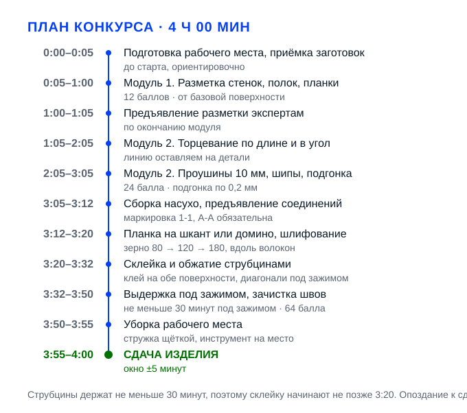
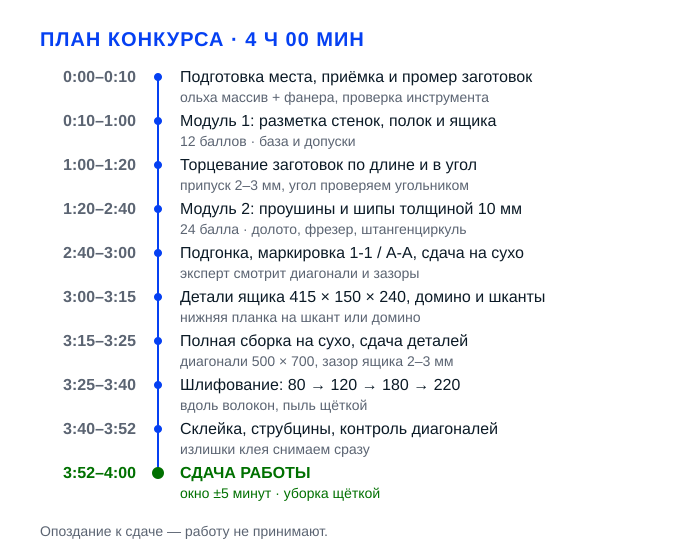
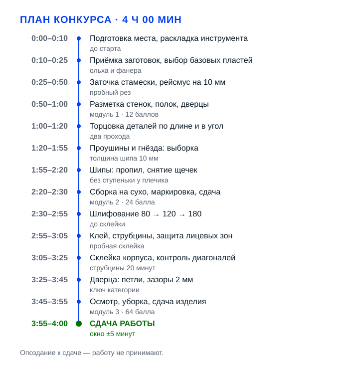

Мебельщик (Р)
Задания ниже — официальные файлы «Абилимпикс» (источник: abilympics-russia.ru), разложенные по категориям. Решения написаны по тексту задания, регламенту и критериям оценки; в них указано, что именно проверяет эксперт.
Школьник
14–16 лет, базовый уровень заданияВыдержка из официального конкурсного задания: страницы, относящиеся к категории «Школьник» (стр. 4–6 источника).
Пошаговое решение
Задание категории «Школьники» — тумбочка без ящика из массива ольхи и фанеры, и делается она ручным инструментом за четыре часа. Официальная структура делит это время на три модуля: час на разметку, два часа на формирование шиповых соединений и час на сборку и отделку, причём участник распределяет время сам. Баллы распределены так: 12 за разметку, 24 за внутренние соединения и 64 за сборку изделия и внешний вид, всего 100. Из этих цифр сразу видно главное: восемь баллов из десяти стоят соединения и то, как изделие выглядит собранным, поэтому разметка и запил делаются не «примерно по линии», а с точностью до половины миллиметра. Толщина всех шиповых соединений по заданию — 10 мм, нижняя поперечная планка ставится на шкант или домино, а соединения вы один раз сдаёте экспертам насухо, с маркировкой вроде 1-1 или А-А.

Задача 1. Разметить заготовки и подготовить рабочее местоМодуль 1 · 12 баллов · 1 час
Первый модуль — это не только карандашные линии, но и весь порядок вокруг них: устойчивый верстак, проверенный инструмент, отобранные заготовки, выбранная базовая поверхность. Двенадцать баллов за разметку набираются там, где линии проведены от базы, а не от случайной кромки, потому что любая ошибка разметки потом оплачивается дважды — сначала кривой проушиной, потом щелью в собранном изделии.
Действие 1.1. Организовать место и принять заготовки
Шаг 1.1.1
Ставим верстак так, чтобы к нему можно было подойти с двух сторон, а деталь ложилась вдоль рабочей доски. Площадь рабочего места по инфраструктурному листу — три метра на метр девять, и всё лишнее из этих метров убираем сразу: сумку, куртку, телефон. Инструмент раскладываем справа от тисков в том порядке, в каком он будет нужен: угольник, рейсмус, карандаш 2Т, шило, затем ножовка, стамески, киянка, дальше шлифовальная колодка и струбцины. Чертёж крепим на планшет или приклеиваем малярным скотчем к щиту перед глазами, чтобы не брать его в руки с испачканными пальцами. Свет включаем до первой линии и ставим слева и чуть спереди, тогда тень от руки не падает на карандашную риску.
Подготовка рабочего места вынесена в задание отдельным пунктом до всех модулей, и это не формальность: разметка стоит 12 баллов, а половина отклонений в разметке появляется не от невнимательности, а от того, что деталь сдвинулась в тисках или линия ушла в тень. Порядок на верстаке экономит и время: за четыре часа конкурса каждый лишний поиск стамески складывается в минуты, которых потом не хватит на подгонку соединений, а внутренние соединения стоят 24 балла.
Кладём ладонь на крышку верстака и нажимаем поочерёдно на все четыре угла — качки нет, стыки не скрипят, тиски ходят без заедания. Проверяем, что проход к верстаку свободен и в нём не лежат заготовки. Смотрим на стол сверху: инструмент лежит рядами, ничего не свисает с края, стружки и обрезков на рабочей зоне нет.
Самая частая ошибка — начать разметку, не закрепив верстак и не убрав со стола обрезки: деталь при проведении рейсмусом ползёт, риска получается волнистой, и потом непонятно, по какой из двух линий пилить. Вторая ошибка — сложить инструмент в кучу перед собой: стамеска, лежащая под заготовкой, затупляется о сучок, а ножовка, свисающая с края, падает на пол и теряет развод.
Эксперт проходит по площадке в первые минуты модуля один: смотрит на устойчивость верстака, на порядок на столе, на наличие защитных очков и на то, читает ли участник чертёж или начинает работу наугад. Второй раз он подходит к этому же месту уже при оценке разметки, и захламлённый верстак читается как небрежность в работе.
Шаг 1.1.2
Проверяем каждый инструмент, которым будем работать. Угольник прикладываем к выверенной кромке и смотрим на просвет: щели быть не должно, иначе все прямые углы уйдут вместе с ним. Рейсмус ставим на нужный размер и пробуем на обрезке — игла должна давать одну ровную риску, а не двойную. Ножовку проверяем на ноготь: полотно разведено, зубья острые, ручка сидит плотно, лучковая пила натянута так, что полотно не играет под пальцем. Стамески осматриваем на просвет у режущей кромки: заминов и заворотов фаски нет, ширина рабочей части 10 и 12 мм, потому что проушина у нас десятимиллиметровая.
Задание требует выполнять работу только исправным и хорошо заточенным инструментом, и это прямая связка с баллами: тупой стамеской проушину не выбрать, её приходится додалбливать с перекосом, стенка получается с задирами, а внутренние соединения — это 24 балла, то есть четверть всей оценки. Тупой ножовкой пропил уводит в сторону от линии, и деталь уходит в брак ещё до того, как вы взялись за стамеску. Наладка занимает пять-семь минут, а возвращает гораздо больше.
Проверяем геометрию угольника на листе бумаги: проводим линию, переворачиваем угольник на другую сторону и проводим вторую — линии должны совпасть без зазора. Пробный пропил обушковой ножовкой по карандашной линии должен идти без увода на длине 200 мм. Стамеска при снятии тонкой стружки с обрезка идёт гладко, без рывков и без белого следа на срезе.
Типичная ошибка — взять инструмент с полки не глядя, «какой дали»: чужая стамеска с заваленной фаской режет в сторону, и проушина выходит косой. Вторая ошибка — править инструмент наспех на бруске без смачивания: фаска получается бочкой, и стамеска перестаёт резать поперёк волокон именно тогда, когда нужно подрезать дно проушины.
Эксперт оценивает наладку инструмента в момент, когда участник берёт его в руки: смотрит, проверены ли угольник и рейсмус, не работают ли тупым, и нет ли на площадке попыток править инструмент на весу. Исправность заявлена в требованиях охраны труда отдельным пунктом.
Шаг 1.1.3
Принимаем заготовки и сверяем их со спецификацией чертежа: количество деталей, толщина массива ольхи, лист фанеры на заднюю стенку, наличие поперечной планки. Каждую заготовку простукиваем и осматриваем на пороки: сквозные сучки, смоляные кармашки, трещины, косослой. Плитки с сучком в зоне шипа откладываем в сторону и меняем на другие, пока эксперт не начал отсчёт времени, потому что сучок в проушине — это скол при долблении. Толщину меряем штангенциркулем в трёх точках по длине: разница больше 0,5 мм означает, что заготовку придётся строгать, и на это нужно заложить время в плане.
Из этой приёмки вырастает вся геометрия изделия: если одна стенка толще другой на миллиметр, шипы придётся подгонять индивидуально, а насадка насухо перестанет быть взаимозаменяемой. Пороки древесины и дефекты обработки прямо названы в требованиях к квалификации, и эксперт отличает дефект заготовки от дефекта работы: первый можно предъявить и заменить, второй спишут на участника. Плюс к этому на разметку и соединения отпущено три часа, и строгание «по факту» съедает их быстрее, чем кажется.
Раскладываем детали по группам — стенки, полка, планка, фанера — и пересчитываем вслух. На торце каждой заготовки ставим карандашом её номер по спецификации. Штангенциркуль показывает одинаковую толщину в трёх точках с разбросом до 0,5 мм, сквозных сучков и трещин в зоне будущих шипов нет.
Ошибка — взять заготовки «как есть» и обнаружить сучок в самом центре проушины уже после запила: деталь идёт в брак, а замены на площадке может не быть. Вторая ошибка — не пересчитать детали и хватиться нехватки полки в третьем модуле, когда до сдачи остаётся час.
Эксперт смотрит на приёмку выборочно: подходит и просит показать, где лицевая сторона заготовки и почему выбрана именно эта. Точность обработки по форме и размерам названа в требованиях к квалификации, и её проверяют по факту изделия.
Шаг 1.1.4
Разбираем чертёж до старта: читаем вид спереди, вид сбоку и вид сверху, выписываем на листок размеры всех деталей и отдельно — размеры, которые заданы на чертеже только как габарит. В чертеже тумбочки размерных чисел немного, и они повторяются: пятьсот, семьсот, четыреста пятнадцать, четыреста двадцать пять, двести сорок и сто пятьдесят миллиметров, поэтому каждое число нужно привязать к своей детали, а не переносить на глаз. Отдельно выписываем постоянные величины задания: толщина всех шиповых соединений 10 мм, нижняя поперечная планка на шкант или домино, соединения сдаются насухо с маркировкой.
Чертёж — единственный источник истины на площадке, и спорить с ним нельзя: если деталь вышла на два миллиметра уже, эксперт мерит её не по вашей памяти, а по размерной линии. Выписанные заранее числа экономят время в модуле, когда руки заняты и считать в уме некогда, и защищают от классической ошибки — прочитать размер не от той базы. Толщина 10 мм у всех шипов означает, что проушины у всех деталей одной толщины, а значит, можно сделать один шаблон и не пересчитывать его каждый раз.
Сверяем свой список с чертежом по каждой детали: длина, ширина, толщина, количество проушин и шипов, сторона расположения. Если какое-то число на чертеже читается неоднозначно, идём к главному эксперту до старта и уточняем — это разрешено и занимает минуту, а не полчаса догадок.
Худшая ошибка — начать разметку, не поняв, где на чертеже лицевая сторона и от какой кромки отсчитан размер: детали выходят зеркальными, и собрать изделие можно только силой. Вторая — пересчитывать размеры по ходу работы, глядя на чертёж поверх заготовки, и путать семьсот с пятьюстами.
Эксперт проверяет понимание чертежа в самом начале: просит назвать габарит изделия и толщину шипа. Ответ «десять миллиметров» и точный габарит показывают, что участник работает по документу, а не по интуиции.
Действие 1.2. Определить базовые поверхности и вывести базу
Шаг 1.2.1
Выбираем у каждой заготовки базовую пласть и базовую кромку: пласть — самая ровная и без сучков, кромка — та, что примыкает к ней под прямым углом. Кладём деталь этой пластью на верстак и помечаем её карандашом с одной стороны маленьким крестом, чтобы потом не переворачивать. Лицевую сторону, которая пойдёт наружу, отмечаем отдельно — двумя точками у торца. Все дальнейшие размеры отсчитываем только от базы, ни разу не перенося их от противоположной, необработанной кромки.
Определение базовых поверхностей прямо названо в задании наравне с разметкой, и это основа точности: любая риска, отложенная от кривой кромки, повторяет её кривизну. Отсчёт от одной базы даёт то, что называется увязкой размеров: пара стенок получается одинаковой, полка входит с одинаковым натягом с двух сторон, а диагонали собранного изделия сходятся. На разметку выделено 12 баллов, и они про точность переноса размеров, а не про красоту линий.
Переворачиваем деталь базовой пластью вниз и проверяем, что она прилегает к верстаку без качки. Прикладываем угольник к базовой кромке в трёх местах — просвета нет. Все крестики и точки нанесены на одну и ту же сторону у всех деталей, и вы можете назвать базу любой заготовки, не задумываясь.
Ошибка — размечать от «удобной» кромки, которая ближе к карандашу: линии получаются ровные, а детали не сходятся между собой. Вторая ошибка — перевернуть заготовку после разметки и продолжать размечать с другой пласти, забыв, где база: половина рисок окажется на обратной стороне, а шип — не с той стороны, где проушина.
Эксперт задаёт вопрос «где у вас база» в любой момент модуля и смотрит, совпадает ли ответ с тем, от чего реально отложены риски. Это одна из самых быстрых проверок понимания технологии.
Шаг 1.2.2
Готовим базу рубанком: заготовку зажимаем в тисках кромкой вверх, рубанок держим двумя руками, левой давим на переднюю ручку, правой ведём. Снимаем стружку 0,2–0,3 мм за проход, пока кромка не станет ровной по всей длине. Проверяем на просвет линейкой или угольником вдоль кромки: щели быть не должно. Затем строгаем пласть, если она имеет заметную покоробленность, до состояния, когда деталь лежит на верстаке без качки.
Строгание базы — операция, которую в списке умений называют отдельно, и она обязательна, потому что промышленной калибровки у заготовок нет: массив ольхи приходит с пильными рисками и небольшим винтом. Если базу не вывести, рейсмус при разметке толщины будет давать риски разной глубины, а угольник — показывать разные углы в разных сечениях. На исправление базы уходит пять минут, на исправление детали, размеченной от кривой кромки, — вся оставшаяся часть модуля.
Кладём линейку на кромку вдоль и смотрим против света: просвет не больше 0,2 мм по всей длине. Угольник, приставленный к пласти в трёх точках, даёт прямой угол без зазора. Поверхность после рубанка — ровная, без отрывов волокна и без «волны» от неровного ведения инструмента.
Строгать против волокон — срывы и рваные ямы, которые потом не убрать шлифовкой, потому что яма глубже, чем слой шкурки. Вторая ошибка — снимать толстую стружку «чтобы быстрее»: рубанок зарывается, кромка получает завал, и деталь теряет в размере больше, чем допускает чертёж.
Эксперт смотрит на поверхность базы под углом к свету: отрывы волокна, завалы на кромке и следы зубьев пилы видны сразу. Чистота строгания — часть оценки внешнего вида будущего изделия.
Шаг 1.2.3
Ставим рейсмус на нужный размер и проводим риски: сначала на толщину детали, потом на глубину проушины. Иглу рейсмуса ведём одной рукой, прижимая колодку к базовой кромке большим пальцем, — риска должна быть одна, тонкая и непрерывная. Деталь упираем торцом в упор верстака, чтобы она не уезжала. Вторую риску наносим после того, как проверили первую и убедились, что размер выставлен по линейке, а не по памяти.
Рейсмус — единственный ручной инструмент, который переносит размер параллельно базе на всю длину детали, и именно он держит одинаковую толщину шипа 10 мм на всех деталях. Двойная или волнистая риска означает, что колодку вели не прижимая, и по такой линии запил уйдёт на миллиметр в сторону — а это уже разница между плотной посадкой и щелью в два слоя клея. Для шиповых соединений, которые оценивают в 24 балла, параллельность рисок и есть залог того, что щёчки проушины выйдут одинаковой толщины.
Проверяем риску на свету: линия одна, непрерывная, идёт параллельно кромке. Измеряем штангенциркулем расстояние от кромки до риски в начале и в конце детали — разница не больше 0,3 мм. Если риску пришлось повторять, старую стираем ластиком, чтобы не пилить между двумя линиями.
Вести рейсмус «на весу», не прижимая колодку: риска уходит к середине детали, и проушина получается клином. Вторая ошибка — выставить размер по делениям на колодке и не проверить линейкой: у многих рейсмусов разметка сбита, а промах на 1 мм в толщине шипа заметен сразу.
Эксперт проверяет риски на нескольких деталях: они должны быть на одной высоте от базы. Именно по этому признаку видно, размечал участник системно или каждую деталь заново.
Шаг 1.2.4
Проверяем геометрию заготовки до чистовой разметки: промеряем обе диагонали угольником и рулеткой, сравниваем длины сторон. Разность диагоналей прямоугольной детали не должна превышать 1 мм на габарите порядка полуметра. Если разность больше, находим, какая кромка завалена, и подстрагиваем её, а не «подтягиваем» разметку на глаз. После правки повторяем промер диагоналей и только потом переходим к разметке шипов.
Прямоугольность базы — условие, при котором собранная тумбочка не встанет ромбом. Ошибка в один градус на стенке длиной пятьсот миллиметров даёт смещение около девяти миллиметров на противоположном углу, а модуль 3 оценивает сборку и внешний вид в 64 балла, то есть перекошенное изделие забирает почти две трети оценки. Проверка диагоналей занимает полминуты и показывает перекос, который глазом не видно.
Обе диагонали равны с точностью до 1 мм, углы проверены угольником по четырём сторонам. Кладём деталь на ровную плиту: она не качается и не «играет» под нажатием. Если диагонали разошлись, а кромки ровные, деталь просто не прямоугольная и её нужно перестрогать.
Мерить диагонали «на глазок» и считать, что разница в три миллиметра — ерунда: при сборке такая деталь даёт щель по шву и перекос, который эксперт видит на просвет. Вторая ошибка — выравнивать деталь, подрезая сразу две кромки, и потерять размер по длине.
Эксперт при оценке разметки может приложить угольник к размеченной детали и промерить диагонали сам. Отклонения от чертежа — отдельный критерий, и он начинается именно здесь.
Действие 1.3. Разметить стенки, полку и поперечную планку
Шаг 1.3.1
Размечаем боковые стенки. От базового торца откладываем длину по чертежу, от базовой кромки — ширину, линии проводим угольником от базы, а не от противоположной стороны. Карандаш держим наклонно, остриё ведём по кромке угольника так, чтобы линия была тонкой и точно по размеру, а не «около». Пару стенок размечаем последовательно от одной базы и сразу ставим на них пометку Л и П, а также номера, чтобы в модуле соединений не перепутать зеркальность.
Стенки — самые ответственные детали: на них и проушины, и шипы, и от их одинаковости зависит, сойдётся ли изделие по диагоналям. Требование задания «разметка деталей (стенки)» открывает модуль 2 не случайно: если стенки размечены не от одной базы, правая и левая получаются разной длины на миллиметр-два, и полка садится с перекосом. Двенадцать баллов за разметку ставят, в том числе, за совпадение парных деталей между собой.
Прикладываем размеченную стенку к неразмеченной базовыми кромками вместе и смотрим торцы: линии должны совпадать, расхождение не больше 0,5 мм. Проверяем угольником каждый угол, рулеткой — длину и ширину. Метки Л и П стоят на внутренней стороне, чтобы при сборке было понятно, какая деталь куда идёт.
Размечать левую и правую стенку по отдельности «по памяти»: одна выходит на два миллиметра длиннее, и это выясняется только при сборке насухо, когда переделывать уже нечем. Вторая ошибка — ставить метки Л и П на наружную сторону, а потом зашлифовать их вместе с разметкой.
Эксперт сравнивает парные детали между собой, прикладывая их друг к другу. Совпадение торцов — самый быстрый признак аккуратной разметки, и его видно без всяких измерений.
Шаг 1.3.2
Размечаем проушины и шипы. Проушину откладываем от базового торца: длина шипа плюс небольшой запас на подгонку, обычно на 1–2 мм больше, чтобы потом снять лишнее стамеской. Толщину проушины делим ровно пополам от толщины детали и получаем те самые 10 мм по заданию: две щёчки по краям, между ними гнездо. Шип размечаем той же величиной, но с противоположной стороны пары, чтобы детали соединялись зеркально. Центр проушины наносим шилом, а не карандашом: точка от шила не стирается под рукой.
Толщина шипа 10 мм — жёсткое требование задания, и оно повторяется у всех категорий, поэтому здесь нельзя «подогнать по месту»: эксперт измеряет ширину шипа и проушины штангенциркулем. Разметка симметрично относительно осевой линии нужна ещё и потому, что при склейке тонкая щёчка проушины отламывается от распирающего усилия — а это уже несостоявшееся соединение и потеря баллов и за внутренние соединения, и за внешний вид.
Проверяем ширину размеченной проушины штангенциркулем в двух-трёх местах: 10 мм плюс-минус 0,3. Щёчки симметричны относительно оси — прикладываем линейку к середине. Расстояние от базового торца до линии заплечика одинаково у всех стенок одного типа.
Размечать проушину «шире, чтобы легче входило»: шип болтается, клеевой шов получается толстым и слабым, а эксперт видит зазор ещё до склейки. Вторая ошибка — отложить проушину от небазовой кромки, и тогда шип упирается в дно гнезда раньше, чем заплечики сядут на место.
Эксперт при оценке внутренних соединений первым делом меряет толщину шипа и ширину проушины. Десять миллиметров по чертежу — самый проверяемый размер в этом задании.
Шаг 1.3.3
Размечаем полку и нижнюю поперечную планку. Полку размечаем по внутреннему размеру между стенками: от габарита вычитаем две толщины стенок, получаем длину, от неё отнимаем ещё по 0,5 мм с каждой стороны на посадку, чтобы полка входила с натягом, а не вбивалась киянкой. На планке размечаем оси отверстий под шканты или паз под домино — по заданию нижняя поперечная планка соединяется именно так, шипового соединения там нет. Оси наносим от базы, расстояние между ними делим равномерно.
Полка — деталь, которая задаёт жёсткость и показывает качество подгонки: если она длиннее внутреннего размера хотя бы на миллиметр, стенки разойдутся, и диагонали изделия уедут. Соединение поперечной планки на шкант или домино оговорено в примечании к чертежу, и делать там шип — значит сделать не то задание, за которое начисляют баллы. Модуль 3 оценивает сборку в 64 балла, и точная посадка полки — первое, что проверяют на просвет.
Промеряем длину полки рулеткой и прикладываем её к просвету между стенками, собранными насухо на верстаке: зазор 0,5 мм с каждой стороны, без люфта. Оси отверстий на планке отстоят от торцов одинаково — проверяем линейкой от базы в обе стороны.
Размечать полку по габаритному размеру изделия, забыв вычесть толщину стенок: полка не входит, её подрезают наспех, и кромка уходит из-под угольника. Вторая ошибка — насверлить отверстий под шканты, не разметив оси от базы, и получить смещение планки в сторону на 2–3 мм.
Эксперт смотрит на планку и полку при сборке насухо: смещённые оси видны по тому, что планка стоит не по центру. Отклонение от чертежа фиксируется как отдельный недочёт.
Шаг 1.3.4
Переносим разметку на сопряжённые детали и маркируем соединения. Для каждой пары пишем на внутренних, невидимых поверхностях одинаковые обозначения: 1-1, 2-2, или А-А, Б-Б, как требует задание при сдаче соединений насухо. Метки ставим карандашом у самого шва, но не на клеевой поверхности, иначе метка уйдёт под клей и станет невидимой. Дополнительно помечаем верх и низ деталей стрелкой, чтобы при сборке не перевернуть стенку.
Маркировка — прямое требование задания: при сдаче соединений насухо участник обязан сделать на соединении маркировку, например 1-1 или А-А. Без неё эксперт не может быстро сопоставить шип с проушиной и проверить, с какой детали снят размер, и часть баллов за внутренние соединения теряется на пустом месте. Кроме того, маркировка спасает вас самих: после шлифования и примерок детали выглядят одинаково, и без меток легко поставить левую стенку на место правой.
Каждая деталь имеет метку, и парные метки совпадают: на шипе 1-1 и на проушине 1-1. Метки нанесены на внутреннюю сторону и не перекрывают клеевой шов. Проверяем, что стрелки верха и низа не противоречат друг другу при мысленной сборке изделия.
Ставить метку на наружной пласти: она либо сойдёт при шлифовании, либо останется видна на готовом изделии и испортит внешний вид, за который дают 64 балла. Вторая ошибка — маркировать соединения уже после склейки, когда детали не разобрать.
Эксперт ищет маркировку на соединении в момент приёмки насухо. Её отсутствие фиксируется отдельной строкой в оценочном листе. Метка должна читаться без наклона изделия к свету: стёртая метка не считается вовсе.
Шаг 1.3.5
Делаем контрольный проход по всей разметке, как приёмку: берём чертёж, линейку и штангенциркуль и идём по деталям в том порядке, в каком они записаны в спецификации. Проверяем длину, ширину, положение проушин, толщину шипа, перпендикулярность линий угольнику. Всё, что вызывает сомнение, стираем ластиком и наносим заново — на разметке это стоит минуту, на готовой детали уже не исправить. Заканчиваем модуль тем, что раскладываем размеченные детали в порядке сборки.
Контрольный проход — единственное место, где ошибку разметки ещё можно исправить бесплатно. Модуль 1 стоит 12 баллов, и они ставятся именно за то, что все размеры перенесены верно и линии проведены от базы; ошибка, найденная здесь, стоит минуты, та же ошибка, найденная при сборке насухо, стоит переделки детали и получаса из двух отведённых на соединения. Плюс к этому порядок на столе к началу второго модуля экономит время на поиск нужной детали.
Ни одного расхождения с чертежом больше 0,5 мм по линейным размерам. Толщина всех проушин и шипов 10 мм плюс-минус 0,3. Все линии параллельны базе, углы прямые, детали разложены по порядку сборки, метки на месте. Если хоть один пункт не сходится, он исправляется до перехода к пилению.
Пропустить контрольный проход и «поймать» ошибку на третьем модуле, когда до сдачи остался час: переделка стенки за это время не укладывается, и работа сдаётся с перекошенным соединением. Вторая ошибка — проверять только длину и не смотреть положение проушины относительно базы.
Эксперт приходит оценивать модуль 1 один раз, обычно в конце выделенного часа, и смотрит на размеченные детали в сборе с чертежом. Чистые, аккуратные линии и совпадающие размеры дают полные 12 баллов.
Задача 2. Сформировать шиповые соединения стенокМодуль 2 · 24 балла · 2 часа
Самый длинный и самый дорогой по трудоёмкости модуль: два часа на торцевание, проушины, шипы и подгонку. Двадцать четыре балла здесь дают за чистоту соединений и точность по чертежу, и именно эти баллы труднее всего отыграть потом — щель в шве шпаклёвкой не лечится, эксперт смотрит соединение насухо и на просвет. Правило модуля простое: сначала пила, потом стамеска, и ни одного удара без разметки.
Действие 2.1. Заторцевать заготовки по длине и в угол
Шаг 2.1.1
Пилим торцы по длине. Деталь зажимаем в тисках так, чтобы линия пропила была в десяти-пятнадцати миллиметрах от губок, иначе тонкий конец начинает вибрировать и скалывается. Обушковую ножовку ведём по карандашной линии, приставив к ней угольник или деревянный направитель: сначала делаем несколько коротких движений на себя, чтобы пропил задал направление, и только потом пилим полным ходом, не нажимая на полотно. Линию оставляем на детали — пилим так, чтобы карандашная риска оставалась снаружи пропила, а не срезалась вместе со стружкой.
Торцевание по длине задано отдельным пунктом задания, и от него зависит вся геометрия: деталь короче на два миллиметра уже не даст нужного габарита, а деталь длиннее не соберётся в тумбочку. Правило «линия остаётся» нужно потому, что после пропила кромку доводят рубанком или шлифовальной колодкой до линии, и только так получается размер с точностью до половины миллиметра. Двадцать четыре балла за внутренние соединения начинаются с ровного торца: по косому торцу проушину не разметить.
Прикладываем угольник к пропилу сразу после запила: просвета нет, торец перпендикулярен пласти и кромке. Промеряем длину рулеткой от базового торца — отклонение до 0,5 мм. На торце нет сколов и «бахромы» от неправильного развода: поверхность гладкая, волокна срезаны, а не вырваны.
Пилить, не закрепив деталь, «на колене»: полотно уводит, торец получается косым, и исправить это можно только отпиливанием, теряя размер. Вторая ошибка — спилить карандашную линию целиком: деталь уходит в минус на миллиметр, и подгонять её потом приходится клином.
Эксперт смотрит торцы при оценке соединений: сколы на выходе пропила и косина видны сразу и трактуются как дефект обработки. Чистота пропила входит в оценку внутренних соединений.
Шаг 2.1.2
Торцуем детали в угол, как требует чертёж. Для угла 45 градусов зажимаем деталь в стусло или в самодельный упор с пропилами и ведём полотно строго по пазу, не наклоняя его ни влево, ни вправо: наклон даёт «ус» с перекосом, и шов потом раскрывается. Для прямого угла пользуемся угольником, прижатым к пласти. Торец доводим рубанком, поставленным набок, снимая стружку 0,1–0,2 мм, и проверяем прилегание к ответной детали без зазора.
Торцевание в угол — это то, что в готовом изделии видно на передних кромках, и именно по нему судят о качестве сборки: щель в углу невозможно замаскировать, она читается даже на расстоянии. Модуль 3 оценивает внешний вид в 64 балла, то есть больше половины всей оценки, и угол входит туда наравне с габаритами. Ровный угол ещё и держит соединение: перекошенный «ус» при обжатии струбциной выдавливает деталь из плоскости.
Стыкуем две детали на верстаке и смотрим на просвет: щель не больше 0,3 мм по всей длине стыка, а не только у передней кромки. Угольник, приложенный к стыку, даёт девяносто градусов без просвета. Проверяем и обратную сторону стыка: если спереди плотно, а сзади щель, значит торец не прямой, а скошен клином.
Доводить угол «на глаз», подшлифовывая торец на весу: получается скругление, и стык стоит на одной точке вместо всей плоскости. Вторая ошибка — пилить в стусле, не прижав деталь к задней стенке: деталь поворачивается, и угол уходит на два-три градуса.
Эксперт проверяет углы в собранном изделии: прикладывает угольник и смотрит на просвет. Торцевание в угол заявлено в последовательности задания прямым текстом.
Шаг 2.1.3
Проверяем все заторцованные детали разом, до перехода к проушинам. Раскладываем их парами по спецификации и промеряем длины, сравниваем парные детали между собой. Складываем стенки базовыми кромками вместе и смотрим на торцы: расхождение не больше 0,5 мм. Отдельно проверяем, что торцы, которые будут стыковаться, лежат в одной плоскости, — прикладываем их друг к другу на ровной плите и смотрим, нет ли качки.
Проверка партий деталей на этом этапе экономит весь остаток модуля: если одна из стенок короче на миллиметр, лучше узнать это сейчас, когда есть время подстрогать другую, чем на сборке насухо, когда соединения уже сформированы. Отклонения от чертежа — отдельный критерий оценки, и он проверяется по факту размеров, а не по аккуратности линий. Кроме того, одинаковые парные детали позволяют потом менять их местами при подгонке, а это сильно ускоряет работу.
Все длины совпадают с чертежом в пределах 0,5 мм, парные детали идентичны, торцы лежат в одной плоскости. Детали разложены по порядку и подписаны. Если расхождение больше, помечаем дефектную деталь и решаем, подрезать её или подстрогать парную, пока не начали пилить проушины.
Отложить проверку «на потом» и заняться проушинами: обнаруживается всё то же самое, только переделывать уже сформированное соединение нельзя без потери размера. Вторая ошибка — подрезать деталь, не проверив парную, и получить две короткие вместо одной.
Эксперт может подойти в любой момент модуля и попросить показать длины. Ответ «всё по чертежу» без промера не принимается, а быстрый промер рулеткой на его глазах работает в вашу пользу.
Действие 2.2. Сформировать проушины 10 мм
Шаг 2.2.1
Запиливаем щёчки проушины. Деталь зажимаем вертикально, разметкой к себе, и пилим по двум рискам, ограничивающим гнездо: сначала по дальней от себя, потом по ближней, чтобы видеть линию. Обушковая ножовка идёт строго по риске, с наклоном полотна примерно тридцать градусов к плоскости детали — так удобнее держать линию и не зарезать лишнего. Пропил доводим до линии дна гнезда, но не глубже: дно подрезается стамеской отдельно. Между двумя пропилами должно остаться ровно десять миллиметров.
Запиливание щёчек — операция, где формируется та самая толщина 10 мм, которую проверяют штангенциркулем. Пропил «за линию» уменьшает щёчку, и при сборке она отламывается от распирающего усилия шипа; пропил «не до линии» оставляет уступ, который потом снимают стамеской уже без опоры и с перекосом. Двадцать четыре балла за внутренние соединения ставят за плотность посадки и чистоту стенок, и обе величины закладываются именно на запиле.
Смотрим на гнездо сверху: две параллельные щели на расстоянии 10 мм, между ними целый массив без сколов на входе. Штангенциркуль, опущенный в пропил, показывает 10 мм плюс-минус 0,3. Пропил не вышел за линию дна, стенки гнезда вертикальные, без завала в сторону.
Пилить по одной риске, вторую «догоняя» на глаз: гнездо получается клином, шип входит туго с одной стороны и болтается с другой. Вторая ошибка — доводить пропил до самого низа: полотно выходит с обратной стороны и скалывает кромку на лицевой пласти.
Эксперт при оценке соединений смотрит на вход в гнездо: сколы и выход полотна на лицевую сторону — грубый дефект, он виден без инструментов. Отдельно он проверяет, не вышло ли полотно за линию дна: сквозной пропил на внутренней стороне стенки фиксируется как дефект.
Шаг 2.2.2
Выбираем гнездо стамеской на 10 мм. Деталь кладём на подкладку, стамеску держим вертикально, фаской к гнезду, и первым движением подрезаем дно по линии, легко ударяя киянкой. Дальше снимаем массив слоями по 1–1,5 мм, каждый раз подрезая волокна поперёк, чтобы они не отрывались за линию. Работаем от середины гнезда к краям, поочерёдно с одной и с другой стороны, чтобы усилие не распирало щёчки. Киянку держим не за голову, а за ручку у головы: так удар контролируется и не приходится бить сильно.
Выборка стамеской — самая аварийная операция модуля: здесь ломаются щёчки и рвутся волокна за линию. Требование формировать проушины ручным инструментом относится к категории школьников напрямую, и качество выборки — это те самые баллы за внутренние соединения: стенки гнезда должны быть гладкими, дно ровным, а не «как получилось». Послойная выборка по 1 мм занимает больше времени, но не даёт скола, а скол на внутренней стенке уже не исправить — только зашпаклевать, и это видно.
Гнездо просматриваем на свет: дно ровное, без ступенек, стенки вертикальные и гладкие, волокна не вырваны за линию. Штангенциркуль по всей глубине показывает 10 мм с разбросом до 0,3. Щёчки целые, без трещин у входа, глубина гнезда соответствует длине шипа.
Бить стамеской с плеча: щёчка лопается по волокну, и деталь идёт в брак. Вторая ошибка — выбирать от края к середине: волокна отрываются за линию, и на лицевой стороне появляется скол, который не убрать шлифовкой.
Эксперт смотрит гнездо изнутри, наклоняя деталь к свету, и промеряет ширину. Рваные волокна на стенке гнезда — типичный минус по критерию внутренних соединений.
Шаг 2.2.3
Зачищаем проушину и доводим её до размера. Стенки подрезаем стамеской на 12 мм плоским срезом, снимая по 0,2–0,3 мм теми движениями, при которых стамеска идёт параллельно стенке, а не врезается в неё. Дно выравниваем широкой стамеской от краёв к центру. Углы гнезда, где сходятся стенка и дно, проходим узкой стамеской на 6 мм: именно там остаются «ступеньки», из-за которых шип не садится до заплечиков.
Доводка гнезда — то, что отличает аккуратное соединение от грубого. Шип должен садиться до заплечиков без удара, а для этого гнездо должно быть чистым по всей глубине, без уступов в углах. Внутренние соединения оценивают в 24 балла, и в критериях смотрят именно на плотность и чистоту: щель по заплечику читается как недоработка, даже если шип держится крепко. Зачистка занимает минуты, а исправление после склейки невозможно.
Вставляем шип от руки: он входит на две трети глубины без киянки и садится до заплечиков от лёгкого удара ладонью. Проверяем на просвет со всех четырёх сторон: щели нет. Штангенциркуль по глубине — 10 мм, дно ровное, уступов в углах нет.
Зачищать стенки, врезаясь стамеской поперёк: снимается лишний миллиметр, и шип начинает болтаться, а щель потом заполняют клеем с опилками — это видно на оценке. Вторая ошибка — не пройти углы гнезда и оставить ступеньку у дна: шип упирается, заплечики не садятся, и соединение стоит с зазором.
Эксперт проверяет посадку от руки и на просвет, а также заглядывает в гнездо после разборки: чистота дна и углов видна сразу. Это прямая часть оценки внутренних соединений.
Действие 2.3. Сформировать шипы и подогнать соединения
Шаг 2.3.1
Формируем шип на ответной детали. Размечаем его так, чтобы он был зеркален проушине: те же десять миллиметров от той же базы. Запиливаем две щёчки по рискам, доводя пропил до линии заплечика, затем спиливаем щёчки продольными пропилами с наклоном полотна, пока не останется сплошной шип нужной толщины. Спиливаем аккуратно, оставляя 0,3–0,5 мм на подгонку: снять лишнее стамеской проще, чем вернуть срезанное.
Шип и проушина — пара, и их размеры должны совпадать, поэтому шип размечают от той же базы и той же величиной 10 мм. Запас на подгонку оставляют всегда: посадка «в натяг» достигается снятием десятых долей, а не запрессовкой киянкой, от которой щёчки проушины расходятся. Внутренние соединения — 24 балла, и оценивают в них в первую очередь плотность: шип, который входит от руки и садится до заплечиков, даёт прочный клеевой шов.
Штангенциркуль по толщине шипа в трёх точках: 10 мм с разбросом до 0,3, конусности нет. Щёчки шипа параллельны, заплечики прямые и лежат в одной плоскости, проверяем угольником. Шип симметричен относительно оси детали, толщина щёчек стенки одинаковая с двух сторон.
Спиливать щёчки заподлицо с риской: шип получается тоньше на полмиллиметра, и в проушине он болтается, а клей заполняет зазор и не держит. Вторая ошибка — несимметричный шип: с одной стороны щёчка стенки толще, и при обжатии деталь ведёт в сторону.
Эксперт промеряет толщину шипа и сравнивает её с проушиной, а затем проверяет посадку. Расхождение больше 0,5 мм фиксируется как несоответствие чертежу.
Шаг 2.3.2
Подрезаем заплечики и подгоняем шип по месту. Заплечики подрезаем стамеской с подкладкой, чтобы не смять волокна на выходе, и проверяем их плоскость линейкой на просвет. Затем пробуем соединение: если шип входит туго, снимаем по 0,2 мм с той стороны, где виден след от стенки гнезда, и пробуем снова. Снимаем только с боковых граней, никогда не трогая заплечики, и после каждой примерки очищаем гнездо от стружки кисточкой, иначе стружка работает как клин и посадка кажется тугой.
Подгонка — это и есть работа, за которую дают баллы: соединение должно входить с усилием руки и садиться до заплечиков, без зазора и без удара. Если снимать «на глаз» и помногу, шип быстро становится тонким, и соединение теряет прочность, а щель по заплечику видна на готовом изделии. Чистое гнездо при примерке — тоже часть технологии: стружка в гнезде даёт ложное ощущение плотности и не даёт шипу сесть до конца.
Шип входит от руки на две трети и садится до заплечиков от нажатия ладонью, без киянки. На просвет по всем четырём сторонам щели нет. Угольник, приложенный к собранному углу, показывает девяносто градусов. После разборки на шипе виден равномерный след по всей длине, а не только у входа.
Подгонять киянкой: щёчки проушины расходятся и трескаются, а шип после такого вколачивания уже не держит. Вторая ошибка — снимать материал с заплечиков, чтобы соединение «село»: заплечик перестаёт быть упором, и угол разваливается при склейке.
Эксперт смотрит именно на момент подгонки: сколько снимает участник за примерку и чем проверяет. Снятие по 0,2 мм и контроль на просвет читаются как уверенная работа.
Шаг 2.3.3
Проверяем готовое соединение и устраняем мелкие дефекты. Собираем угол насухо, прижимаем рукой и смотрим на просвет со всех сторон, затем проверяем угол угольником по обеим плоскостям. Мелкие сколы на входе в гнездо и задиры на кромке снимаем циклей или стамеской, а не шкуркой: шкурка скругляет кромку, и стык перестаёт быть острым. Если на щёчке появилась трещина, её проклеиваем и обжимаем струбциной до конца модуля, а не оставляем до общей склейки.
Проверка на этом шаге — последняя возможность исправить соединение до того, как его увидит эксперт: соединения сдаются насухо, и оценивают их в этот момент. Двадцать четыре балла распределяются по плотности, чистоте и соответствию чертежу, и заметная трещина или скол сразу снимает часть оценки. Аккуратно снятая кромка стамеской сохраняет остроту стыка, а шкурка её округляет — на готовом изделии это видно как «размытый» угол.
Угол собран без люфта, при нажатии не играет, диагонали проверяемого узла совпадают. Кромки острые, сколов на лицевых сторонах нет, трещины проклеены. Соединение разбирается и собирается повторно без изменения посадки — значит, геометрия верная.
Оставить мелкий скол «он всё равно уйдёт под клей»: после склейки скол темнеет от клея и становится заметнее, чем был. Вторая ошибка — зашлифовать кромку на месте, скруглив угол, и потерять остроту стыка.
Эксперт осматривает каждое соединение, которое участник предъявляет насухо, и отмечает дефекты в оценочном листе по каждому пункту отдельно. Кромки он смотрит под углом к свету: скруглённые шкуркой углы видны как светлая полоса по ребру.
Задача 3. Собрать изделие насухо, поставить планку и отшлифовать деталиМодуль 3, первая половина · до 32 баллов из 64
Третий модуль начинается со сборки насухо: изделие собирают без клея, проверяют диагонали и углы, предъявляют экспертам и разбирают. Это единственный момент, когда соединения можно оценить и исправить, поэтому сборка насухо делается полностью, со всеми деталями, включая поперечную планку на шканте или домино. Дальше идёт шлифование — операция, которая на готовом изделии уже не повторяется.
Действие 3.1. Собрать насухо и предъявить соединения
Шаг 3.1.1
Собираем изделие без клея. Раскладываем детали в порядке сборки: сначала боковая стенка на верстаке внутренней стороной вверх, в её проушины вставляем шипы полки и планки, затем ставим вторую стенку и накрываем верхней деталью. Каждое соединение сажаем от руки, без киянки, и поджимаем ладонью, пока заплечики не коснутся стенки. Детали ставим по меткам Л и П, которые нанесли при разметке, и проверяем, что стрелки верха не перевёрнуты.
Сборка насухо — обязательный пункт последовательности задания и единственная проверка всей системы соединений до склейки. Здесь видно, сходятся ли пары, нет ли перекоса и не мешает ли что-нибудь посадке до заплечиков. Если пропустить этот шаг, ошибки обнаружатся под клеем, когда разобрать изделие уже нельзя, и переделка невозможна — остаётся сдавать перекошенную тумбочку, теряя баллы за сборку и внешний вид, а это больше половины оценки.
Все детали стоят на своих местах, изделие собирается без ударов и без люфта, метки на своих местах. Проверяем, что заплечики всех шипов касаются стенок без зазора, а детали не выдавливают друг друга. Собранная конструкция стоит на ровной плите и не качается.
Собирать сразу на клей «чтобы не терять время»: любая ошибка становится неисправимой, а клей начинает схватываться через десять-пятнадцать минут. Вторая ошибка — собрать без поперечной планки и не увидеть, что её оси не совпадают с отверстиями.
Эксперт подходит к изделию, собранному насухо, и осматривает все соединения сразу — это и есть приёмка внутренних соединений, за которые дают 24 балла.
Шаг 3.1.2
Проверяем геометрию собранного изделия. Измеряем рулеткой обе диагонали по передней и по задней стороне: разность не должна превышать 1–1,5 мм на габарите около полуметра. Прикладываем угольник к каждому из четырёх углов и смотрим на просвет. Проверяем изделие на ровной плите: если оно качается, значит одна из стенок длиннее или заплечики подрезаны не по плоскости. Найденный перекос устраняем подгонкой, пока детали не склеены.
Диагонали — самый чувствительный прибор для прямоугольной конструкции: перекос в один миллиметр на диагонали читается как заметный наклон стенки. Модуль 3 оценивает сборку изделия и внешний вид в 64 балла, и перекошенная тумбочка теряет значительную часть этой суммы, даже если соединения чистые. Проверять нужно и переднюю, и заднюю сторону: если диагонали сходятся спереди и расходятся сзади, изделие собрано винтом, и это вылезет при склейке.
Разность диагоналей в пределах 1,5 мм, все четыре угла прямые по угольнику, изделие не качается на плите. Проверяем и вертикальность стенок: угольник, поставленный на полку, прилегает к стенке без просвета по всей высоте.
Мерить только одну диагональ: она может совпасть случайно, а изделие всё равно будет ромбом. Вторая ошибка — увидеть перекос и подтянуть его силой струбцины при сборке, вместо того чтобы найти деталь, которая его даёт.
Эксперт при оценке сборки первым делом промеряет диагонали и прикладывает угольник. Эти два измерения дают ему почти всю картину качества сборки. Если изделие качается на плите, он переворачивает его и ищет деталь, которая вышла длиннее.
Шаг 3.1.3
Предъявляем соединения экспертам, как требует задание. Перед вызовом проверяем, что на каждом соединении стоит маркировка вроде 1-1 или А-А и что метки на шипе и проушине совпадают. Держим изделие так, чтобы эксперт видел соединения с лицевой и с внутренней стороны, и называем вслух, какое соединение показываем. После осмотра аккуратно разбираем изделие, раскладываем детали по порядку склейки и накрываем их от стружки, чтобы клеевые поверхности остались чистыми.
Сдача соединений насухо — прямое требование задания, и маркировка на соединении обязательна: по ней эксперт сопоставляет шип и проушину и понимает, с какой детали снят размер. Без маркировки он не может быстро проверить пару и оценивает только то, что видит снаружи, а это меньше. Разборка после осмотра тоже часть работы: детали должны вернуться на места, чтобы сборка на клей шла без поиска.
Эксперт осмотрел все предъявленные соединения, метки читаются, изделие разобрано и разложено по порядку. Проверяем, что после разборки не осталось забытых деталей и что на клеевых поверхностях нет стружки и карандашных рисок в глубине гнезда.
Предъявить изделие без маркировки и ждать, что эксперт разберётся сам: он отмечает отсутствие метки и переходит к следующему участнику. Вторая ошибка — оставить детали в куче после разборки и потом собирать не то соединение с не тем шипом.
Эксперт фиксирует маркировку в оценочном листе отдельной строкой, а также смотрит, умеет ли участник показать и назвать своё соединение. Порядок предъявления тоже оценивается: шов нужно показать так, чтобы были видны и шип, и заплечики.
Действие 3.2. Поставить нижнюю поперечную планку на шкант или домино
Шаг 3.2.1
Размечаем и сверлим отверстия под шканты. Оси наносим шилом от базы: на стенке — на расстоянии, заданном чертежом, на планке — симметрично от торцов. Сверлом 8 мм делаем отверстия глубиной 12 мм в стенке и 15 мм в планке, чтобы шкант вошёл наполовину в каждую деталь с запасом под клей. Сверлим строго перпендикулярно плоскости: начинаем на малых оборотах, проверяем угол угольником и только потом заглубляемся. Перед сверлением подкладываем под деталь обрезок, чтобы не порвать волокна на выходе.
Соединение нижней поперечной планки на шкант или домино оговорено в примечании к чертежу, и это единственное место изделия, где нет шипа: если поставить там шип, задание выполнено не по чертежу. Шкант держит за счёт точности осей, поэтому смещение отверстий на миллиметр приводит к перекосу планки, а перекос в этом узле виден по зазору между планкой и стенкой. Глубина 12 и 15 мм даёт запас, при котором шкант не упирается в дно и детали садятся до плоскости.
Штангенциркуль по отверстию — 8 мм, глубина проверяется спичкой или самим шкантом: он входит на 12 мм в стенку и на 15 в планку. Оси совпадают при сухой примерке: шкант, вставленный в стенку, попадает в отверстие планки без натяга и без люфта.
Сверлить «на глаз», без разметки шилом: отверстия расходятся на 1–2 мм, и планка встаёт с перекосом. Вторая ошибка — сверлить на полную глубину сразу, без проверки угла: сверло уводит, и на выходе появляется скол на лицевой стороне.
Эксперт проверяет посадку планки на собранном изделии: зазоры у стенок и параллельность планки полке видны сразу. Отдельно он смотрит на лицевую сторону вокруг отверстий: скол на выходе сверла говорит о том, что деталь сверлили без подкладки.
Шаг 3.2.2
Ставим шканты на клей. В отверстия наносим клей тонким слоем — ватной палочкой или зубочисткой, чтобы клей не вытекал на лицевую сторону. Шкант вставляем в стенку до упора, проворачивая его, чтобы клей распределился по всей поверхности. Затем надеваем планку, совмещая отверстия по разметке, и поджимаем струбциной через прокладку из обрезка, чтобы не оставить вмятину. Лишний клей, выступивший у шва, снимаем сразу влажной тряпкой, пока он не схватился.
Шкант работает только на клею по всей боковой поверхности, поэтому клей наносят в отверстие, а не на сам шкант: иначе он снимается губкой при надевании детали и остаётся сухим в глубине. Прокладка под струбцину нужна потому, что ольха мягкая и губка оставляет вмятину, которая не выйдет при шлифовании — а внешний вид в этом модуле стоит основную часть из 64 баллов. Снятый сразу клей не оставляет пятна, засохший приходится срезать стамеской, рискуя поцарапать поверхность.
Планка сидит до плоскости, зазор у стенки не больше 0,3 мм, шкант не выступает наружу. Струбцина держит деталь без перекоса, вмятин от губок нет. Клей не выступил на лицевую сторону, шов чистый. Смотрим и обратную сторону планки: если клей вышел там, его снимают сразу, пока он не впитался в волокна.
Нанести клей на шкант снаружи: при надевании он снимается о кромку отверстия, и соединение держится только за счёт трения. Вторая ошибка — не поставить прокладку и оставить вмятину от струбцины на лицевой стороне.
Эксперт осматривает шов планки и поверхность вокруг него: пятна клея и вмятины фиксируются как дефекты внешнего вида. Отсутствие прокладок под струбцинами он тоже отмечает: на мягкой ольхе оно почти всегда оставляет след.
Шаг 3.2.3
Проверяем узел планки в системе изделия. Собираем насухо стенки с полкой и планкой, смотрим на зазоры у стенок с двух сторон: они должны быть одинаковыми. Прикладываем линейку к планке и к полке — они параллельны. Если планка встала с перекосом, находим причину: смещённые оси отверстий, скошенный торец или заусенец в отверстии. Заусенец снимаем сверлом большего диаметра, повёрнутым от руки, а не стамеской.
Планка задаёт жёсткость нижней части тумбочки, и её перекос тянет за собой диагонали всего изделия: одна деталь, посаженная косо, способна испортить геометрию, которую вы выстраивали два часа. Симметричные зазоры — признак того, что оси совпали, а параллельность полке читается на готовом изделии как аккуратность. Проверку делают до склейки, потому что после неё исправление означает разборку с разрушением шва.
Зазоры у стенок одинаковые с обеих сторон, планка параллельна полке с расхождением до 0,5 мм, диагонали изделия в допуске. Планка не выступает за габарит и не утоплена. Если планка стоит косо, промеряем расстояние от неё до полки с обеих сторон: разница покажет, какое отверстие ушло в сторону.
Подтянуть перекос струбциной и оставить: после снятия зажима деталь возвращается в перекошенное положение, а клей уже схватился. Вторая ошибка — снять заусенец стамеской и расколоть кромку отверстия. Третья частая причина перекоса — стружка под планкой, оставшаяся после примерки и не снятая кисточкой.
Эксперт смотрит на планку в собранном изделии сбоку и спереди: параллельность и зазоры — часть оценки сборки. Планка, выступающая за габарит на миллиметр, видна на просвет между стенкой и линейкой.
Действие 3.3. Отшлифовать детали до склейки
Шаг 3.3.1
Начинаем шлифование с зерна 80. Деталь кладём на подкладку и закрепляем так, чтобы она не ездила, шлифовальную колодку ведём строго вдоль волокон, с равным нажимом, полными проходами от торца до торца. Не топчемся на одном месте: от этого появляются ямы, которые потом не убрать. Кромки проходим с легким нажимом, стараясь не скруглить их раньше времени. После каждого номера зерна снимаем пыль щёткой, а не рукой, и меняем шкурку на следующую.
Шлифование входит в чистовую отделку, которую задание называет прямо: изделие доводят шлифованием до требуемой шероховатости. Порядок зерна 80, затем 120 и 180 нужен потому, что крупная шкурка оставляет риски, а мелкая по рискам их только заглаживает, и после первого слоя отделки все царапины проявляются. Шлифовать вдоль волокон — правило, а не пожелание: поперёк остаются глубокие борозды, которые видны на свету под любым углом.
Поверхность на ощупь ровная, без ступенек и «волн», риски от 80-го зерна идут вдоль волокон и равномерны. Проводим ладонью по детали в обоих направлениях: под пальцами нет задиров. Кромки не скруглены, угол остался острым.
Шлифовать поперёк волокон или круговыми движениями: борозды не убираются следующим зерном, и на готовом изделии поверхность выглядит полосатой. Вторая ошибка — давить на колодку в одном месте у сучка: получается вмятина, которую видно на просвет.
Эксперт смотрит поверхность под углом к свету: равномерность рисок и отсутствие ям читаются без инструментов. Шероховатость и чистота названы в требованиях к квалификации.
Шаг 3.3.2
Переходим на зерно 120, затем на 180. Каждый следующий номер снимает риски предыдущего, поэтому проходов нужно столько, чтобы старых рисок не осталось, — обычно два-три полных прохода вдоль волокон. Направление меняем незначительно, примерно на десять градусов, чтобы видеть, где ещё остались старые царапины. Особое внимание торцам: там волокна перерезаны, и шлифовать их нужно только мелким зерном с лёгким нажимом, иначе торец «лохматится».
Переход через номер зерна — то, что отличает подготовленную поверхность от поверхности «на глаз». Если после 80 сразу взять 180, мелкая шкурка не снимет глубокие риски, а только отполирует их края, и под отделкой поверхность будет выглядеть рябой. Торцы требуют отдельного подхода: на перерезанных волокнах крупное зерно вырывает пучки, и на торце появляется «борода», которую уже не убрать. На внешний вид в этом модуле приходится основная часть из 64 баллов.
На поверхности нет рисок от предыдущего зерна: смотрим на деталь под углом к окну и наклоняем её — старые царапины при этом видны как тёмные полосы поперёк новых. Торцы гладкие, без вырванных пучков волокна. Пыль снята, шкурка заменена, колодка не забита.
Остаться на одном зерне и «дожать» им до гладкости: риски не уходят, они заглаживаются, и поверхность получается лоснящейся, но неровной. Вторая ошибка — шлифовать торцы крупным зерном и получить рваные волокна, которые заметны на стыке.
Эксперт проверяет поверхность на ощупь и на свет, а также смотрит торцы: именно по ним видно, дошёл участник до мелкого зерна или остановился на 80-м.
Шаг 3.3.3
Шлифуем фанерную заднюю стенку и все кромки, снимаем заусенцы. Фанера шлифуется легче массива, но кромки у неё хрупкие, поэтому шлифуем их колодкой с мелким зерном под небольшим углом, снимая только заусенец и не стачивая шпон. Все кромки изделия проходим мелким зерном один раз, чтобы снять микросколы после пиления и строгания. Заканчиваем обеспыливанием: продуваем швы и гнёзда щёткой, протираем поверхности сухой ветошью и накрываем детали, чтобы пыль не осела обратно.
Кромки — то, что берут в руки, и именно по ним судят о качестве обработки: заусенец или скол на кромке портит впечатление от всей работы. Шпон на фанере тонкий, и неосторожное шлифование кромки прорезает его до основы, оставляя тёмную полосу, которую нельзя исправить. Обеспыливание нужно перед склейкой: пыль на клеевых поверхностях работает как разделитель, и шов получается слабым.
Кромки гладкие на ощупь, заусенцев нет, шпон на фанере не протёрт до основы. Все поверхности сухие и чистые, на них нет пыли: провести тёмной тряпкой — следов не остаётся. Гнёзда и швы продуты, стружки внутри нет.
Шлифовать кромку фанеры «до блеска» и протереть шпон: остаётся светлая полоса вдоль кромки, которая не тонируется. Вторая ошибка — начать склейку, не сняв пыль, и получить шов, который держится только по краям.
Эксперт осматривает кромки при оценке внешнего вида и часто проводит по ним пальцем: заусенцы чувствуются сразу, даже если их не видно. Пыль на клеевых поверхностях он проверяет перед склейкой: след от тёмной тряпки означает, что деталь не обеспылена.
Задача 4. Склеить изделие, зачистить его и сдать работуМодуль 3, вторая половина · до 32 баллов из 64
Финальная часть: клей, обжатие, выдержка, зачистка швов и сдача. Здесь уже ничего нельзя переделать, зато можно потерять много — сборка и внешний вид стоят 64 балла, и в них входят зазоры, диагонали, чистота поверхности и отсутствие потёков клея. Задача этого этапа — сохранить то, что сделано в первых двух модулях, и довести изделие до состояния, в котором его не стыдно поставить на стол экспертам.
Действие 4.1. Подготовить и выполнить склейку
Шаг 4.1.1
Готовим склейку заранее, до того как откроем клей. Проверяем сухую примерку последний раз: изделие собирается полностью, все соединения садятся до заплечиков. Выставляем струбцины: их нужно не меньше четырёх, лучше шесть, и все они должны быть разведены на нужный размер и лежать под рукой в порядке применения. Готовим прокладки из обрезков, ветошь, кисть и палочку для клея, ставим рядом ёмкость с водой. Проверяем температуру в помещении: клей ПВА работает при температуре не ниже восемнадцати градусов, и на холодной площадке время схватывания растягивается.
Склейка — необратимая операция, и всё, что не подготовлено, становится проблемой через две минуты, когда руки заняты клеем. Шесть струбцин нужны потому, что при обжатии одного угла деталь выдавливается в другом, и подтягивать её нечем. Прокладки спасают мягкую ольху от вмятин, а ветхость под рукой позволяет снять клей до того, как он впитается в волокна: засохший клей снимается только стамеской, и на поверхности остаётся след, который видно на готовом изделии.
Все детали собираются насухо без усилия, струбцины разведены и проверены, прокладки нарезаны по размеру деталей. Изделие можно собрать за минуту, не отвлекаясь на поиски. Клей открыт и перемешан, кисть влажная, ветошь под рукой.
Открыть клей, не подготовив струбцины: пока ищешь пятую, первые швы уже схватились, и деталь приходится дожимать силой, ломая посадку. Вторая ошибка — работать без прокладок и оставить вмятины от губок на лицевых сторонах.
Эксперт наблюдает за подготовкой к склейке: наличие струбцин, прокладок и порядка на столе показывает, делал ли участник это раньше или импровизирует.
Шаг 4.1.2
Наносим клей и собираем изделие. Клей наносим кистью на обе сопрягаемые поверхности — и на шип, и в проушину, тонким слоем, без лужиц: излишек всё равно выдавится, но выдавится он на лицевую сторону. Деталь собираем сразу после нанесения, пока клей не начал подсыхать: сначала стенку с полкой и планкой, затем вторую стенку, затем верхнюю деталь. Каждое соединение сажаем от руки, проверяя, что шип вошёл до заплечиков. Работаем в том порядке, который обеспечивает доступ ко всем швам без переворачивания изделия.
Клей наносят на обе поверхности потому, что сухая древесина впитывает влагу из клея мгновенно: если намазать только шип, проушина останется сухой, плёнка не образуется и шов получится слабым. Пять-семь минут открытого времени — это тот срок, за который изделие нужно собрать полностью, иначе клей начнёт схватывать на поверхности и детали не сядут до заплечиков. Порядок сборки от стенки к стенке нужен для того, чтобы не пришлось разбирать уже начатое.
Клей выступил ровным валиком по всем швам — это признак того, что его достаточно. Все шипы сидят до заплечиков, изделие собрано без перекоса. На лицевых сторонах нет потёков, только валик у шва, который снимается сразу.
Мазать клей только в проушину: шип остаётся сухим, шов держится на тонкой плёнке и разрушается при первой нагрузке. Вторая ошибка — наносить клей щедро, чтобы «наверняка хватило»: излишек течёт по лицевой стороне и оставляет полосы, которые не убрать без следа.
Эксперт может подойти в момент склейки — это одна из самых показательных операций: видно, наносится ли клей на обе поверхности и как быстро идёт сборка.
Шаг 4.1.3
Обжимаем изделие струбцинами и проверяем геометрию под зажимом. Ставим струбцины попарно: сначала по одной на верхнюю и нижнюю деталь с одной стороны, затем симметрично с другой, потом по диагонали. Затягиваем понемногу, по четверти оборота, переходя от одной струбцины к другой, — так усилие распределяется равномерно. Сразу после обжатия проверяем диагонали и угольником углы: пока клей не схватился, перекос можно исправить, ослабив одну струбцину и подтянув другую. Выдерживаем изделие в зажиме не меньше тридцати минут.
Порядок затяжки струбцин напрямую влияет на геометрию: если затянуть одну сторону до упора, изделие поведёт винтом, и диагонали разойдутся на несколько миллиметров. Проверка диагоналей под зажимом — последний момент, когда перекос исправим, потому что после схватывания клея изделие держит форму намертво. Тридцать минут выдержки нужны для набора прочности: снятая раньше времени струбцина даёт шов, который расходится при зачистке, а сборка и внешний вид — это 64 балла.
Диагонали под зажимом в допуске 1,5 мм, углы прямые, детали не выдавлены из плоскости. Струбцины стоят плотно, прокладки на месте, вмятин нет. Через тридцать минут изделие не пружинит при снятии зажима и не меняет диагонали.
Затягивать струбцины по очереди до упора: изделие ведёт винтом, и после снятия зажима диагонали остаются разными. Вторая ошибка — снять струбцины через десять минут, чтобы успеть отшлифовать: шов расходится, и щель уже ничем не закрыть.
Эксперт подходит к столу со струбцинами и смотрит на схему обжатия и на диагонали. Аккуратная равномерная затяжка читается как понимание процесса. Снятие струбцин раньше срока он отмечает по времени: если изделие освободили через десять минут, шов ещё не набрал прочность.
Действие 4.2. Зачистить швы и довести внешний вид
Шаг 4.2.1
Снимаем струбцины и убираем выдавленный клей. Клей снимаем, пока он ещё упругий: проводим стамеской плашмя или скребком вдоль шва, стараясь не задеть волокна древесины, затем проходим шов мелким зерном. Засохшие капли, которые уже затвердели, размягчаем влажной тряпкой, выдерживаем минуту и снимаем, а не срезаем силой — иначе вместе с клеем снимается верхний слой дерева и остаётся светлое пятно. Углы и внутренние швы проходим узкой стамеской и складываем снятое в мусор, а не на стол.
Зачистка швов — то, по чему судят о чистоте работы, и в оценке внешнего вида это заметная часть из 64 баллов. Клей, впитавшийся в волокна, не даёт шлифовальной шкурке работать: она скользит по плёнке и оставляет полосы, а при отделке такой участок темнеет и читается как брак. Срезать клей стамеской, а не рукой, нужно потому, что застывший ПВА твёрже ольхи, и под ногтем он просто не снимается — приходится давить, и тогда остаётся вмятина.
Швы чистые, клеевой валик снят полностью, поверхность вокруг шва не повреждена. Проводим пальцем вдоль шва: ступеньки нет, поверхность ровная. На лицевых сторонах нет пятен и полос, углы не выкрошены.
Срезать клей стамеской с нажимом: вместе с клеем вырывается верхний слой, остаётся светлое углубление, которое не закрашивается. Вторая ошибка — соскабливать клей шкуркой сразу: шкурка забивается плёнкой и перестаёт резать.
Эксперт осматривает швы на свет, наклоняя изделие: пятна клея, следы среза и зашлифованные вмятины видны как разные по цвету участки. Внимательнее всего он смотрит углы: там клей скапливается, и снять его труднее всего, не повредив волокна.
Шаг 4.2.2
Контролируем габариты и доводим поверхность. Промеряем изделие рулеткой и штангенциркулем по трём направлениям: высота, ширина, глубина, плюс толщина деталей в местах, где это видно. Сверяем с чертежом, отклонение по габаритам допускается в пределах 1 мм. Затем проходим всю поверхность зерном 180 и, если нужно, 240 — вдоль волокон, с лёгким нажимом, и снимаем фаску 1–2 мм на острых кромках концевой частью колодки, держа её под сорок пять градусов.
Габариты — измеримый критерий, и их проверяют инструментом, а не на глаз: даже миллиметровое расхождение по высоте фиксируется в оценочном листе. Финальное шлифование нужно после зачистки швов, потому что скребок и стамеска оставляют следы, которые видны на отшлифованной поверхности как лёгкие полосы. Фаска на кромках снимается для того, чтобы изделие не «резало» руку и не скалывалось при ударе — на внешний вид и аккуратность это работает напрямую.
Габариты совпадают с чертежом в пределах 1 мм. Поверхность ровная, без полос после скребка, шероховатость на ощупь однородная. Фаска снята по всей длине кромок равномерно, ширина фаски одинаковая, острота кромки не «гуляет».
Шлифовать фаску на глаз, без опоры: она получается волнистой, и на передней кромке это бросается в глаза. Вторая ошибка — не промерить габариты и узнать о расхождении на приёмке, когда исправить уже нечего.
Эксперт промеряет изделие и осматривает кромки под углом: равномерность фаски и отсутствие полос — прямые признаки аккуратной доводки. Габариты он сверяет по трём направлениям, потому что перекос по глубине заметен меньше всего.
Шаг 4.2.3
Осматриваем изделие целиком, как чужое. Ставим его на ровную поверхность и смотрим с двух метров: заметны ли перекос, разные зазоры, пятна. Затем обходим по кругу и проверяем каждую грань: нет ли задиров, сколов, следов карандаша, клеевых потёков на внутренних поверхностях. Отдельно смотрим швы на просвет — щель даже в полмиллиметра видна как тёмная линия. Всё найденное устраняем мелким зерном и ластиком, а не надеждой, что эксперт не заметит.
Внешний вид — самая весомая часть модуля 3: 64 балла дают именно за сборку и внешний вид, а не только за геометрию. Взгляд с двух метров — это взгляд эксперта, который подходит к столу: он видит общую картину раньше, чем начинает мерить. Карандашные риски на внутренних поверхностях и потёки клея в углах — самые частые причины снижения оценки у участников, которые в остальном сделали всё правильно.
Изделие стоит ровно, не качается, диагонали в допуске, зазоры в швах одинаковые и не превышают 0,3 мм. Карандашных следов и клеевых потёков нет ни снаружи, ни внутри. Поверхность однородная по цвету, без светлых пятен от среза.
Ограничиться осмотром с одной стороны: перекос и разный зазор на противоположной стороне остаются незамеченными до приёмки. Вторая ошибка — оставить карандашные метки на внутренней стороне стенок, посчитав, что их не видно.
Эксперт обходит изделие кругом и наклоняет его к свету. Именно на этом шаге становится видна разница между «сделано» и «сделано аккуратно». Внутренние поверхности он осматривает не реже наружных: там чаще всего остаются карандашные метки и клеевые потёки.
Действие 4.3. Сдать работу и убрать рабочее место
Шаг 4.3.1
Делаем итоговую проверку по пунктам задания. Сверяемся с критериями: разметка, внутренние соединения, сборка и внешний вид. Проверяем, что все детали на месте, ничего не забыто внутри, толщина шипов соответствует десяти миллиметрам, планка стоит на шканте или домино, диагонали в допуске, поверхность отшлифована. Отдельно проверяем маркировку соединений: если эксперт захочет посмотреть конкретный шов, вы должны найти его сразу.
Итоговая проверка идёт по тем же критериям, по которым ставят баллы: 12 за разметку, 24 за внутренние соединения и 64 за сборку и внешний вид. Пробегая по списку, вы ловите то, что уже не исправить грубой работой, но можно поправить мелочью — подтянуть кромку, снять пыль, убрать след карандаша. На сдаче важно и то, как участник отвечает на вопросы: способность назвать размеры и объяснить, почему сделано именно так, входит в оценку понимания задания.
Все пункты списка отмечены, изделие соответствует чертежу, метки читаются. Вы можете назвать габарит изделия, толщину шипа и тип соединения планки, не подглядывая. Изделие чистое, на столе нет забытых деталей.
Сдавать, не проверив список: всегда находится что-то забытое — не снятая пыль, карандашная риска, неподтянутая кромка. Вторая ошибка — не знать собственных размеров и отвечать на вопрос эксперта «примерно».
Эксперт при приёмке задаёт один-два вопроса по конструкции: про толщину шипа и про соединение планки. Точный ответ подтверждает, что изделие сделано осознанно.
Шаг 4.3.2
Сдаём изделие в отведённое время. Заранее уточняем у эксперта, куда ставить готовую работу и в каком окне принимают, и приходим за пять-десять минут до конца, а не в последнюю минуту. Изделие ставим на отведённое место, не касаясь чужих работ, маркировку оставляем на виду. Если что-то не успели — честно говорим об этом сразу, не пытаясь доделать на столе приёмки: любые операции после объявления сдачи запрещены.
Время сдачи — жёсткое правило конкурса, и оно важнее последнего штриха: опоздание означает, что работу могут не принять вовсе, и тогда теряются все набранные баллы, включая 64 за сборку и внешний вид. Приход за десять минут до конца даёт запас на перенос изделия и на то, чтобы поправить то, что обнаружилось при переносе. Честный доклад о недоделке сохраняет доверие эксперта, а попытка доделать на столе приёмки читается как нарушение процедуры.
Изделие стоит на отведённом месте, время сдачи не нарушено, маркировка видна. Эксперт принял работу и сделал отметку. Участник может назвать, что именно и в каком объёме сделано. Отмечаем для себя время сдачи заранее, чтобы не искать эксперта в последние минуты.
Доделывать шлифовку после объявления сдачи: это фиксируется как нарушение и может стоить работы целиком. Вторая ошибка — прийти в последнюю минуту и толкаться у стола приёмки вместе с остальными. Спешка на переносе тоже опасна: уронив изделие у стола приёмки, восстановить его уже нечем.
Эксперт фиксирует время приёма работы по факту. Ранняя сдача с законченным изделием выглядит лучше, чем сдача в последнюю секунду с недошлифованной деталью.
Шаг 4.3.3
Убираем рабочее место. Стружку и опилки сметаем щёткой в совок, а не сдуваем и не сгребаем рукой — это прямо запрещено инструкцией по охране труда. Инструмент очищаем от стружки деревянным клином, стамески укладываем лезвием от себя, ножовку вешаем или кладём полотном вниз. Струбцины возвращаем на место, ветошь и прокладки — в отведённую тару, клей закрываем. Верстак протираем, тиски сводим так, чтобы губки не были сжаты, и в конце моем руки с мылом.
Уборка прописана в требованиях безопасности и в последовательности задания последним пунктом, и она оценивается: чистое рабочее место читается как завершённая работа, а гора стружки и разбросанный инструмент — как небрежность, которая переносится и на впечатление от изделия. Уборка щёткой, а не рукой, нужна ещё и потому, что стружка ольхи мелкая и колкая, а стамеска в куче стружки не видна — за неё легко взяться лезвием.
Стол чистый, стружки нет, инструмент на своих местах и очищен, струбцины убраны, клей закрыт, пол сухой. Ничего не осталось под верстаком и на подверстачье. Рабочее место можно показать следующему участнику без стыда.
Смести стружку на пол и считать уборку законченной: пол должен быть сухим и чистым, это требование безопасности. Вторая ошибка — оставить стамески и ножовку на верстаке лезвиями к проходу. Мокрая тряпка, оставленная на верстаке, — тоже нарушение: ольха тянет влагу, и поверхность поднимается ворсом.
Эксперт проходит по площадке после сдачи и смотрит на состояние рабочих мест. Порядок и чистота входят в общую оценку организации работы. Инструмент, оставленный лезвием к проходу, он отмечает отдельно — это нарушение требований охраны труда.
Студент
учащиеся колледжей и техникумовВыдержка из официального конкурсного задания: страницы, относящиеся к категории «Студент» (стр. 4–6 источника).
Пошаговое решение
Студенческая версия задания — это тумбочка с выдвижным ящиком из массива ольхи и фанеры, на которую отводится четыре часа и сто баллов. Работа разложена на три модуля: разметка стоит 12 баллов и занимает около часа, формирование шиповых соединений — 24 балла за два часа, сборка, отделка и внешний вид — 64 балла за последний час. Участник распределяет время между модулями сам, но порядок операций задан жёстко: сначала разметка от базовой поверхности, потом торцевание и шипы толщиной 10 мм, потом сухая сборка с предъявлением эксперту, шлифование, склейка и сдача. Габарит корпуса 500 на 700 мм, ящик 415 на 150 при глубине 240 мм, нижняя поперечная планка соединяется на шкант или домино. Главное, что отличает студентов от школьников, — работа электрическим инструментом и выдвижной ящик, поэтому здесь одинаково важны и точность разметки, и умение держать фрезер, и дисциплина предъявления работы экспертам на каждом этапе.

Задача 1. Организовать рабочее место и выполнить разметкуМодуль 1 · 12 баллов · 1 час
Первый час уходит на то, чтобы верстак стал рабочим местом, а заготовки — размеченными деталями. Вы принимаете щиты массива ольхи и фанеру, проверяете геометрию, выбираете базовые поверхности и переносите на дерево все размеры чертежа студенческой тумбы: корпус 500 на 700 мм, ящик 415 на 150 при глубине 240 мм, толщина шиповых соединений 10 мм. Разметка стоит 12 баллов из ста, но её ошибки оплачиваются в двух следующих модулях, поэтому экономнее сделать её медленно и один раз.
Действие 1.1. Принять заготовки и подготовить инструмент
Шаг 1.1.1
Заготовки раскладываем на верстаке в порядке работы: щиты ольхи для боковин и полок слева, фанера справа, бруски для планок и ящика посередине. Каждую деталь промеряем рулеткой по длине и штангенциркулем по толщине, сверяя с чертежом: корпус тумбы 500 мм по фронту и 700 мм по высоте, фасад ящика 415 на 150 мм при глубине 240. Толщину щита и направление волокон записываем карандашом прямо на торце, потому что от толщины считаются все размеры шипа. Заодно обводим сколы, сучки и смоляные карманы: они не должны попасть на лицевые кромки.
Модуль 1 «Разметка» стоит 12 баллов, и первый из них снимается или набирается уже здесь: если заготовка короче чертежа на десять миллиметров, вы увидите это только после торцевания, когда исправлять нечем. Промер до разметки — единственный момент, когда дефектную заготовку ещё можно заменить через главного эксперта. Толщина щита и направление волокон определяют, с какой стороны пойдёт шип: у ольхи скол идёт по волокну.
Все позиции пересчитаны и совпадают с чертежом, толщина записана на торце, дефекты обведены. Сомневаетесь в размере — промерьте второй раз другим инструментом: рулетка и штангенциркуль расходятся редко, но расходятся, и тогда вы узнаете, что дело не в детали.
Типичная ошибка — взять заготовки «как есть» и начать разметку, не посмотрев на толщину: щиты из массива часто отличаются на полтора-два миллиметра, и шип, размеченный от чужой толщины, садится с перекосом. Второй промах — не отметить сторону, которая уйдёт внутрь: потом лицевая поверхность оказывается со сколом, и прятать его некуда.
Эксперт подходит к верстаку в первые минуты и смотрит, разложены ли заготовки по порядку и есть ли на них промеры. Аккуратная приёмка читается как понимание технологии.
Шаг 1.1.2
Инструмент раскладываем по зонам: справа от тисков разметочный — угольник, рейсмус, рулетка, карандаш твёрдости HB, шило; слева режущий — ножовка с направителем, долото 10 мм, стамеска, киянка; за верстаком электрический — торцовочная пила, фрезер, шлифовальная машинка, дрель. Каждый электроинструмент включаем на холостом ходу на три-четыре секунды: слушаем, нет ли стука, смотрим, не бьёт ли патрон, проверяем кабель и вилку. Полотно ножовки проверяем на развод и натяжение, долото — на заточку: тупое долото мнёт волокно вместо того, чтобы его резать.
Требования охраны труда в конкурсном задании прямые: работать только исправным и хорошо заточенным инструментом, располагать его так, чтобы он не мог скатиться или упасть, использовать защитные очки при работе инструментом ударного действия. За нарушение работу могут остановить, и баллы за модули уже не набираются. Тупой инструмент — минус по качеству поверхности, а оно входит в 64 балла за сборку.
Инструмент лежит устойчиво, ничего не свисает с края верстака, кабель не тянется через проход. Электроинструмент запускается без стука и запаха гари, очки на месте, спецобувь с подноском 200 Дж надета. Долото проверяем на торце бруска: стружка должна идти завитком, а не крошиться.
Частая ошибка — начать работу тупым долотом и «доработать» стамеской: гнездо получается рваным, а на выходе шипа появляется вырыв. Похожая ошибка — оставить фрезер или ножовку на краю верстака: падение с высоты верстака заканчивается сколом твердосплавных зубьев, и работа встаёт до замены оснастки.
Эксперт по охране труда проходит по площадке до старта и фиксирует, надет ли очки и обувь, убран ли кабель из прохода. Дальше он смотрит на это в течение всего конкурса.
Шаг 1.1.3
Берём угольник и проверяем каждый щит на прямоугольность: прикладываем короткую сторону к кромке и смотрим на просвет между длинной стороной и торцом — просвета быть не должно. Толщину промеряем штангенциркулем в трёх точках по длине, расхождение больше половины миллиметра означает, что щит поведён и его нужно либо перестрогать, либо пустить на неответственную деталь. Плоскость проверяем на ровной плите или на столе: качание щита говорит о винте, и такой щит в лицевые детали не идёт.
Разметка, снятая с кривой заготовки, переносит кривизну на все соединения: шип выходит не перпендикулярно кромке, и при склейке изделие уводит в сторону. Ольха мягкая и «дышит» от влажности, поэтому проверка плоскости и толщины занимает две минуты, а экономит полчаса подгонки. В Модуле 1 оценивают именно разметку, и её точность напрямую зависит от того, от какой поверхности вы её вели.
Угольник прилегает без просвета по всей длине, толщина одинакова в трёх точках, щит не качается на ровной поверхности. Выбранная базовая кромка помечена двумя штрихами и не меняется до конца работы. Если расхождение по толщине больше половины миллиметра, деталь пускаем на неответственную сторону и записываем это на торце.
Ошибка — вести разметку от той кромки, что ближе лежит, а не от проверенной: тогда все размеры пляшут на полтора-два миллиметра. Не менее обидно — оставить поведённый щит в работе и потом бороться с ним струбцинами при склейке: напряжения в детали разорвут клеевой шов через сутки.
Эксперт смотрит, отмечена ли база на заготовке, и прикладывает угольник к той кромке, от которой вы ведёте разметку. Если базы нет, он вправе считать, что разметка велась произвольно, и снизить балл за модуль: проверить её потом нечем.
Действие 1.2. Прочитать чертёж и определить базовые поверхности
Шаг 1.2.1
Кладём перед собой три проекции — вид спереди, сбоку и сверху — и выписываем на лист все размеры, которые понадобятся: габарит 500 на 700, толщину щита, положение полки, размеры ящика 415 на 150 при глубине 240, толщину всех шиповых соединений 10 мм. Отдельно отмечаем, где проходит нижняя поперечная планка и чем она соединяется — шкантом или домино, потому что это два разных способа разметки. Размеры, которых на чертеже нет и которые выводятся сложением, считаем сами и помечаем словом «расчётный».
Конкурсное задание разрешает участнику самому распределять время между модулями, и цена ошибки в чтении чертежа — весь модуль: неверно прочитанный размер ящика обнаруживается только на сборке, когда детали уже отпилены. Выписанные размеры превращают чертёж в рабочий список, по которому можно проверять себя через каждый час. Заодно снимается риск перепутать студенческое задание со школьным: у студентов тумба с выдвижным ящиком.
На листе выписаны все размеры чертежа, ни один не остался в голове. Цепочка сходится с габаритом: высота корпуса 700 мм складывается из высоты боковины и толщины верхней планки, а ширина 500 мм — из внутреннего размера и двух толщин щита.
Частая ошибка — работать прямо с чертежа, не выписывая: через сорок минут рука закрывает нужную проекцию, и размер берётся с соседней детали. Ещё одна ловушка — не заметить, что толщина шипа задана жёстко, десять миллиметров, и размечать «по полотну».
Эксперт может попросить показать, как вы читаете чертёж. Участник, у которого перед глазами выписка размеров, выглядит уверенно, и это влияет на оценку организации работы.
Шаг 1.2.2
Определяем у каждой детали лицевую пластину и базовую кромку: лицевая та, что смотрит наружу и не имеет сколов и сучков, базовая кромка та, что ровнее и перпендикулярнее. На лицевой стороне ставим знак из двух коротких штрихов у торца, на базовой кромке — один штрих, и дальше все промеры ведём только от них. Внутренние стороны помечаем косой чертой, чтобы при сборке не перепутать ориентацию. На парных деталях, левой и правой боковине, дополнительно пишем «Л» и «П».
Шиповое соединение симметрично только на вид: проушина и шип смещены от центра на половину толщины щита, и если размечать от разных кромок, при сборке деталь встанет с перекосом в миллиметр-два. Метки лица нужны ещё и потому, что при шлифовании вы работаете с обработанными поверхностями, и отличить лицо от тыла на ольхе почти невозможно. Та же дисциплина меток требуется при сдаче соединений на сухо.
На каждой детали есть штрихи базы и метка лица, парные детали подписаны «Л» и «П». Проверьте себя: возьмите деталь наугад и скажите, какая сторона лицевая — если ответа нет, метки поставлены плохо и их нужно продублировать до начала пиления, пока поверхность ещё чистая.
Ошибка — разметить левую и правую боковину от разных кромок: при сборке одна стенка встаёт правильно, вторая с перекосом, и диагональ не сходится. Опасна и такая привычка — поставить метку на стороне, которая уйдёт под шлифование, и потерять ориентацию к чистовой обработке.
Эксперт осматривает детали после разметки и отмечает, есть ли система в метках. Хаотичные карандашные пометки по всей пласти он читает как отсутствие технологической дисциплины.
Шаг 1.2.3
Считаем цепочку: от габарита 500 мм отнимаем две толщины боковин, получаем внутренний размер, и уже от него ведём ширину полки и ящика. На торцевание оставляем припуск 2–3 мм по длине, на шип припуск не оставляем вовсе: шип пилится строго по разметке, потому что его длина задаёт глубину посадки. Для ящика 415 на 150 при глубине 240 отдельно считаем высоту боковин: она равна высоте фасада минус зазор на ход, обычно 2–3 мм сверху и снизу.
Припуск на торцевание — это страховка: торец всегда дорабатывается чистовым резом, и если сразу отпилить в номинальный размер, второй рез снимет ещё полмиллиметра, и деталь уйдёт в минус. Шип, наоборот, припуска не терпит: лишние полмиллиметра на длине не дадут деталям сесть до упора, и зазор вылезет наружу. Именно на этой разнице припусков теряют баллы те, кто пилит «примерно».
Сумма посчитанных размеров сходится с габаритом, припуски записаны на заготовке. Проверьте цепочку на бумаге до первого реза: 500 минус две толщины — это внутренний размер, и он должен совпасть с шириной полки плюс два зазора на посадку.
Типичная ошибка — дать припуск и на шип «на всякий случай»: соединение не садится, и участник начинает подрезать стамеской на весу, сминая щёчку. Второй по частоте промах — не дать припуск на торец и потом обнаружить, что деталь короче на миллиметр, а исправлять нечем.
Эксперт проверяет расчёт по готовым деталям: сходятся ли внутренние размеры с чертежом. Расхождение больше миллиметра фиксируется как ошибка разметки, а это баллы Модуля 1.
Действие 1.3. Разметить стенки, полки и детали ящика
Шаг 1.3.1
На базовой кромке откладываем длину рулеткой, ставим шилом точку и проводим линию угольником, прижимая колодку к кромке всей длиной. Ширину переносим рейсмусом: выставляем раствор по штангенциркулю и ведём рейсмус от базовой кромки одним движением, не отрывая, иначе получится ступенька. Карандаш держим под углом около шестидесяти градусов к поверхности, с наклоном в сторону движения, чтобы грифель шёл по линии, а не подрезал волокно.
Разметка — это 12 баллов Модуля 1, и оценивается не факт наличия линий, а их совпадение с чертежом. Линия, проведённая не от базы, а «на глаз от края», даёт ошибку в полтора-два миллиметра, которая вылезет на сборке. Рейсмус точнее карандаша по линейке, потому что держит постоянный раствор на всей длине и не зависит от дрожания руки.
Линия непрерывная, одной глубины, идёт параллельно базовой кромке. Проверьте штангенциркулем расстояние от кромки до линии в начале и в конце: расхождение больше 0,3 мм — линию нужно снять ластиком и провести заново.
Ошибка — вести рейсмус в два приёма, с перехватом: на стыке появляется уступ, и по нему потом пилят с перекосом. Рядом стоит другая ошибка — размечать карандашом по металлической линейке, держа её на весу: линейка сдвигается, и линия уходит на миллиметр.
Эксперт осматривает разметку до начала пиления и отмечает, от какой кромки она велась и есть ли следы перечерчивания. Аккуратные тонкие линии читаются как уверенная работа.
Шаг 1.3.2
На боковине откладываем положение проушины: от торца отступаем на толщину детали, которая в неё входит, и проводим две параллельные линии на расстоянии 10 мм друг от друга — это толщина шипа по заданию. Вторую пару линий наносим рейсмусом с двух сторон щита, чтобы разметка читалась и на тыле, и на лице. Глубину проушины отмечаем риской на кромке и дублируем на противоположной стороне, потому что выборка идёт с двух сторон навстречу.
Толщина шипового соединения задана жёстко — 10 мм, и это единственный размер, который нельзя подогнать по месту: если щёчка толще, шип не войдёт, если тоньше, соединение будет болтаться и потеряет прочность. Двойная разметка с двух сторон нужна потому, что ольха мягкая и при выборке долотом легко уйти в сторону: линии на тыле показывают, куда вы выходите. Глубина, отмеченная с двух сторон, не даёт пробить деталь насквозь.
Расстояние между линиями проушины ровно 10 мм, проверено штангенциркулем в двух местах. Риска глубины видна с обеих сторон и лежит на одной линии. Разметка симметрична относительно оси детали, если это предусмотрено чертежом.
Частая ошибка — разметить проушину на 10 мм, а шип сделать по фрезе 12 мм: при сборке щёчка упирается, и соединение не садится. Не лучше и вторая крайность — отметить глубину только с лица и при выборке пробить деталь насквозь: сквозное отверстие в лицевой стенке не исправить.
Эксперт проверяет штангенциркулем толщину готового шипа и её совпадение с разметкой, а заодно смотрит, с какой стороны нанесены риски глубины. Полмиллиметра он ещё пропускает, миллиметр — уже нет.
Шаг 1.3.3
На фасаде ящика откладываем 415 мм по ширине и 150 мм по высоте, от них ведём боковины глубиной 240 мм: две боковины, передняя и задняя стенка, дно из фанеры. На боковинах отмечаем линию паза под дно — отступ от нижней кромки 8–10 мм, глубина 4–5 мм под фанеру толщиной 4 мм. Отдельно размечаем оси шкантов или позиции домино: от края отступаем не меньше 30 мм, чтобы не выколоть торец.
Ящик — то, чем студенческая тумба отличается от школьной, и он оценивается в общем блоке сборки и внешнего вида, где 64 балла. Ошибка в разметке ящика стоит дороже всего: он должен ходить в проёме с зазором 2–3 мм и не затирать боковину. Оси крепежа ближе 30 мм к торцу дают скол именно на ольхе, потому что она рыхлая на срезе.
Размеры 415 и 150 отложены от одной базы, паз под дно размечен на одинаковом расстоянии от нижней кромки на обеих боковинах. Оси шкантов нанесены шилом, а не карандашом: точка должна быть размером с острие, иначе сверло уйдёт.
Ошибка — разметить паз под дно на разной высоте у левой и правой боковины: дно встаёт с перекосом, и ящик клинит в проёме. Второй промах — нанести оси толстым карандашом: сверло уходит на полтора миллиметра, и шкант выходит наружу через лицевую сторону.
Эксперт осматривает детали ящика в сборе и проверяет зазоры по периметру, а на разметке смотрит, одинаково ли отложен паз под дно на левой и правой боковине. Неровный ход ящика — самый заметный дефект на готовом изделии.
Шаг 1.3.4
Перед пилением проходим по всем деталям с чертежом в руках и сверяем каждый размер: длина, ширина, положение проушин, глубина, оси крепежа. Все линии, которые уйдут на тыльную сторону, дублируем рейсмусом сразу, а не после первого реза: после реза деталь меняет форму, и привязывать разметку будет не к чему. Торцы, с которых начинается отсчёт, помечаем поперечной чертой — она показывает, что дальше идёт припуск.
Контроль разметки занимает пять минут и снимает большинство ошибок Модуля 1: почти все они видны ещё на линиях, до того как испорчена заготовка. Дублирование на тыл — не перестраховка: при выборке долотом вы работаете с двух сторон, и без линии на обороте глубина получается разной. Поперечная черта на торце с припуском спасает от классической ошибки, когда пилят по той стороне, где припуск.
Все размеры на деталях совпадают с выпиской из чертежа, линии на лице и тыле совпадают при перегибе детали. Торцы с припуском помечены, и вы можете по каждой детали назвать, где у неё база. Отдельно проверьте положение проушин: смещение на пять миллиметров по длине детали не видно, но соединение не сойдётся.
Ошибка — сверить только габарит и не проверить положение проушин: деталь по длине в норме, а соединение смещено на пять миллиметров. Похожая ошибка — стереть разметку ластиком при подчистке и не восстановить её: дальше работа идёт по памяти.
Эксперт может подойти в конце модуля и попросить показать разметку на любой детали, выбранной наугад. Уверенный ответ по базе, припускам и размерам — это и есть те 12 баллов, которые дают за модуль.
Задача 2. Сформировать шиповые соединения стенокМодуль 2 · 24 балла · 2 часа
Два часа — самая дорогая часть работы: нужно оторцевать заготовки по длине и в угол, сформировать проушины и шипы толщиной 10 мм, подогнать соединения до посадки от руки и предъявить их экспертам на сухо с маркировкой. Здесь видно всё: перпендикулярность торцов, чистоту выхода долота, одинаковость шипов и умение работать электрическим инструментом, которого нет у школьников. Модуль стоит 24 балла, и почти все они набираются не скоростью, а последовательностью: сначала геометрия станка, потом рез, потом подгонка.
Действие 2.1. Оторцевать заготовки по длине и в угол
Шаг 2.1.1
Ставим пилу на ровную подставку, проверяем, что стол не качается, и выставляем угол 90 градусов по угольнику: прикладываем угольник к диску при отключённом питании и к столу, смотрим на просвет. Если просвет есть, правим упор, а не подкладываем под деталь бумажку. Проверяем упор на параллельность пазу и фиксируем зажимом, затем делаем пробный рез на обрезке и промеряем угол угольником и равенство диагоналей.
Торцевание — первая операция Модуля 2, который стоит 24 балла, и вся геометрия изделия начинается с того, насколько точно выставлен угол. Пила, сбитая на полградуса, даёт на длине 700 мм расхождение почти шесть миллиметров по диагонали, и прямоугольность корпуса уже не исправить подгонкой. Пробный рез на обрезке стоит тридцать секунд и заменяет собой всю последующую борьбу с перекосом.
Угольник прилегает к торцу пробной детали без просвета, диагонали пробного прямоугольника равны. Упор зафиксирован, стол не шатается, кожух диска ходит свободно и возвращается вверх без заедания. Проверьте ещё, что упор не люфтит под нажимом рукой: люфт в полмиллиметра на семисотмиллиметровой детали даёт косой торец.
Ошибка — работать «на глаз», считая, что пила выставлена с завода: после перевозки упор почти всегда сбит. Не менее обидно — не зафиксировать упор зажимом: при подаче он уходит, торец получается косым, но без линейки это не видно.
Эксперт смотрит, делает ли участник пробный рез и пользуется ли упором, а не держит деталь на весу. Работа на весу у станка — ещё и нарушение охраны труда.
Шаг 2.1.2
Деталь прижимаем к упору базовой кромкой, левую руку убираем от линии реза не меньше чем на десять сантиметров, включаем пилу и опускаем голову плавно, без рывка, дав диску набрать обороты. Отрезаем по линии припуска, оставляя 2–3 мм, и не пытаемся снять весь припуск одним резом: второй рез идёт уже по чистовой линии. После реза не поднимаем голову сразу, ждём полной остановки диска, иначе зубья выхватывают щепу с задней кромки.
Торцевание с припуском нужно потому, что первый рез всегда грубее второго: сколы и риски от подачи уходят именно на припуск. По заданию детали обрабатываются ручным и электрическим инструментом, и чистота торца входит в оценку соединений: рваный торец виден на готовом изделии и сразу снимает баллы за внешний вид. Рез в номинальный размер одним проходом опасен ещё и тем, что при выхвате щепы деталь уходит в минус на два миллиметра.
Торец ровный, без скола на выходе диска, перпендикулярность проверена угольником. До чистовой линии остаётся 2–3 мм, и они видны на кромке. Диск останавливается полностью, прежде чем вы убираете деталь.
Типичная ошибка — пилить сразу в размер и потом обнаружить, что торец со сколом, а снимать уже нечего. Ещё одна ловушка — подавать голову рывком: диск выхватывает щепу на задней кромке, и на ольхе это выглядит как вырванный кусок.
Эксперт проверяет торцы на просвет угольником и смотрит, с какой стороны диска вышел зуб. Скол на торце он фиксирует как дефект обработки, а это прямой вычет из 24 баллов Модуля 2, и объяснять его «свойством породы» бесполезно.
Шаг 2.1.3
Детали, которые стыкуются под углом, торцуем с поворотом головы пилы на 45 градусов: угол выставляем по шкале и обязательно проверяем на двух пробных обрезках, сложив их в стык. Складываем детали торцами и смотрим на линию стыка: она должна быть без клина и без ступеньки. Если образовался клин, угол не сорок пять, а сорок четыре или сорок шесть — правим настройку, а не подшлифовываем торец.
Торцевание в угол входит в последовательность Модуля 2 по заданию, и именно там чаще всего вылезает ошибка настройки: два торца по сорок четыре градуса дают клин в два градуса, который на лицевой стороне читается как щель. Шлифовать торец под углом нельзя — снимается геометрия, и стык становится волнистым. Проверка сложением двух обрезков занимает минуту и показывает ошибку до того, как испорчена чистая деталь.
Две детали, сложенные торцами, дают ровную линию без клина и ступеньки, угол 90 градусов по угольнику проверен. На торце нет скола, кромка острая, но не рваная. Сложите обрезки и посмотрите на стык против света: тонкая полоса света по всей длине означает, что угол сбит на полградуса.
Ошибка — выставить сорок пять по шкале пилы и не проверить: шкала врёт на градус почти всегда. Опасна и такая привычка — подшлифовать торец, чтобы «сошлось»: стык получается волнистым, а кромка теряет опору под клей. Исправить это можно только новой деталью.
Эксперт осматривает угловые стыки на просвет и прикладывает угольник к линии стыка. Щель в стыке он считает дефектом соединения, даже если она меньше миллиметра и не бросается в глаза с расстояния шага.
Шаг 2.1.4
С торцов снимаем заусенец мелкой шкуркой на колодке, два-три движения вдоль кромки под углом сорок пять градусов, без нажима: цель убрать ворс, а не скруглить ребро. Торец проверяем на просвет, приложив металлическую линейку: она покажет и винт, и местный вырыв. Если на торце есть смоляной карман или рыхлое место, деталь помечаем и пускаем на неответственную сторону.
Заусенец мешает деталям сесть в соединение: он сминается при сборке и не даёт щёчке дойти до упора, из-за чего появляется зазор в миллиметр-два. Снятие заусенца — операция на минуту, а последствия пропуска видны на сдаче соединений на сухо. Рыхлый торец опасен тем, что при склейке впитывает клей, и соединение получается клеевым голоданием.
Торец на ощупь гладкий, без задиров, линейка прилегает без просвета. Кромка не скруглена: ребро осталось острым, просто без ворса. Проведите по торцу ногтем поперёк волокон: ноготь не должен цепляться за поднятый ворс.
Ошибка — снимать заусенец наждаком от руки с сильным нажимом: ребро скругляется, и на сборке между деталями появляется тёмная линия. Второй по частоте промах — оставить заусенец на внутренней кромке проушины: при запрессовке он выдавливает волокно наружу.
Эксперт проводит пальцем по кромке и смотрит на торец сбоку, против света. Задир он находит сразу, а на сдаче соединений на сухо это ещё и повод разобрать узел и посмотреть посадку изнутри.
Действие 2.2. Сформировать проушины и шипы толщиной 10 мм
Шаг 2.2.1
Деталь зажимаем в тиски через подкладку из мягкого дерева, чтобы не помять лицевую пластину. Ножовку с мелким зубом ставим на линию и ведём по направителю — бруску, прижатому струбциной параллельно линии запила; первые движения делаем короткие, на себя, пока полотно не войдёт в дерево на свою высоту. Пилим по тыльной стороне линии, оставляя разметку целой: срезать линию нельзя, по ней потом контролируется глубина.
Проушина — половина шипового соединения, и её качество определяет, сядут ли детали без зазора. Направитель нужен потому, что полотно толщиной около миллиметра уводит в сторону на первых движениях, и на ольхе этот увод почти не чувствуется рукой. Запил по тыльной стороне линии оставляет вам разметку как контроль: пока линия видна, вы знаете, сколько осталось до размера.
Пропил идёт строго по линии, на выходе полотно не увело. Разметка на лицевой стороне целая, глубина пропила соответствует риске. Деталь не смята в тисках, лицевая пласть без вмятин. Посмотрите на пропил с торца: обе стенки должны идти параллельно, без клина на выходе.
Ошибка — пилить без направителя, «по карандашу»: полотно уводит на полтора-два миллиметра, и щёчка получается клином. Рядом стоит другая ошибка — запилить по самой линии и срезать разметку: дальше глубина выбирается на глаз, и дно проушины выходит неровным.
Эксперт смотрит на пропил с торца и проверяет, параллельны ли стенки. Увод полотна виден по тому, как стенка проушины уходит от перпендикуляра, и по клину, который остаётся на выходе.
Шаг 2.2.2
Проушину выбираем долотом 10 мм послойно, по два-три миллиметра за проход: ставим долото фаской внутрь гнезда, наносим удар киянкой средней силы и, покачивая, подрезаем стружку, а не выламываем её. Первый проход делаем от лицевой стороны до половины глубины, второй с тыла, чтобы волокно не вырвало на выходе. Дно зачищаем стамеской, держа её плашмя к поверхности и снимая тонкую стружку от края к центру.
Выборка — самая аварийная операция Модуля 2: неверный удар пробивает деталь насквозь или выкалывает щёчку, и деталь уходит в брак. Послойная выборка с двух сторон даёт чистый выход без вырыва, а это напрямую влияет на оценку внутренних соединений. Долото, поставленное фаской наружу, работает как клин и раскалывает ольху по волокну.
Стенки гнезда вертикальные, дно ровное и на одной глубине с обеих сторон детали. На выходе нет вырыва и скола, щёчки целые. Ширину гнезда проверяем штангенциркулем: десять миллиметров плюс-минус полмиллиметра.
Ошибка — выбивать стружку одним сильным ударом: ольха раскалывается, и щёчка отходит по волокну. Не лучше и вторая крайность — выбирать только с лицевой стороны до конца: на выходе получается вырыв размером с ноготь, и замаскировать его нечем.
Эксперт осматривает гнездо изнутри и на выходе, а также проверяет пальцем дно на ровность. Вырыв на выходе он считает дефектом обработки, а не естественным свойством мягкой древесины, и снижает балл за внутренние соединения.
Шаг 2.2.3
Шип формируем по разметке: сначала пропиливаем щёчки с двух сторон, затем подрезаем у основания стамеской, держа её вертикально и работая от кромки к центру, и только после этого снимаем лишнее с торца. Толщину шипа проверяем штангенциркулем в трёх точках: по заданию она должна быть 10 мм, и это не «примерно десять», а десять с допуском в полмиллиметра. Плечики шипа подрезаем так, чтобы они были перпендикулярны оси детали.
Толщина шипа десять миллиметров — единственная цифра, которую задание фиксирует для всех категорий, и по ней оценивается внутреннее соединение. Шип толще — не входит в гнездо, тоньше — болтается, и клей не держит: такое соединение разваливается при первом усилии. Перпендикулярные плечики нужны потому, что именно они, а не щёчки, задают посадку детали до упора.
Штангенциркуль показывает десять миллиметров в трёх точках по длине шипа. Плечики ровные, перпендикулярные оси, без скола. Шип входит в проушину от руки, без киянки, на две трети длины, а на последних миллиметрах чувствуется упругое сопротивление, а не удар.
Ошибка — сделать шип по фрезе или по толщине полотна, не проверив штангенциркулем: расхождение в миллиметр превращает соединение в клин, который либо не входит, либо разбивает гнездо. Второй промах — подрезать щёчки на весу, без упора: плечико получается косым, и деталь встаёт с зазором.
Эксперт измеряет толщину шипа штангенциркулем при сдаче соединений на сухо и смотрит плечики сбоку. Это одна из немногих проверок, где цифра не обсуждается и ссылка на «посадку по месту» не принимается.
Шаг 2.2.4
Собираем шип с проушиной без клея и смотрим на посадку: деталь должна садиться от руки, с лёгким сопротивлением на последних десяти миллиметрах, и доходить до плечика без зазора. Если садится туго, снимаем стамеской тонкую стружку с щёчки шипа, а не расширяем гнездо: гнездо расширять нельзя, оно уже разбито разметкой. Если болтается, подклеиваем тонкую щепу на щёчку и подрезаем в размер, но лучше не доводить до этого и проверять толщину до сборки.
Посадка от руки с сопротивлением — это и есть критерий качества шипового соединения, по которому выставляют баллы Модуля 2. Тугая посадка при сборке на клей выдавливает клей из зоны контакта, и соединение остаётся сухим; свободная даёт зазор, который виден на готовом изделии как тёмная линия. Подгонка всегда идёт снятием с шипа, потому что гнездо — это база.
Деталь садится до плечика без зазора по всей длине стыка, зазор проверяем на просвет: свет не проходит. Соединение держится без клея под собственным весом детали и не выпадает при встряхивании. Пройдитесь ногтем по линии стыка: ступеньки быть не должно.
Ошибка — расширять гнездо стамеской, чтобы «село»: гнездо разбивается, шип начинает болтаться, и вся работа по разметке идёт насмарку. Похожая ошибка — садить соединение киянкой: щёчка ломается по волокну, и это уже брак детали.
Эксперт проверяет посадку рукой и на просвет, а иногда просит вынуть и вставить деталь повторно. Характер сопротивления при посадке он оценивает как показатель квалификации, а не как случайность.
Шаг 2.2.5
С кромок шипа снимаем фаску около миллиметра стамеской или шкуркой на колодке, и делаем это до сборки, а не после. Кромки проушины тоже слегка притупляем, но не больше полумиллиметра, чтобы не расширить гнездо: фаску ведём одним движением по всей длине кромки, не отрывая инструмент. После подгонки убираем стружку из гнезда щёткой, а не ртом и не рукой: этого конкурсное задание прямо не разрешает.
Фаска на шипе нужна для двух вещей: она не даёт кромке сминаться при посадке и не собирает клей в угол, из-за чего соединение садится неравномерно. Притуплённая кромка гнезда уменьшает риск скола при сборке на клей, когда деталь идёт с усилием. Запрет на удаление стружки дыханием — из требований охраны труда, и его соблюдение тоже фиксируется.
Фаска ровная, одинаковая по всей длине кромки, кромка не скруглена. Гнездо чистое, стружки нет, шип входит так же, как до снятия фаски. Проверьте ширину фаски штангенциркулем в двух местах: разница больше полумиллиметра означает, что рука дрогнула.
Ошибка — снять фаску слишком широко, полтора-два миллиметра: уменьшается площадь склейки, и соединение теряет прочность. Не менее обидно — оставить стружку в гнезде: при склейке она попадает в клеевой шов и не даёт деталям сесть.
Эксперт смотрит на кромки вблизи, при косом свете. Широкая фаска читается как желание подогнать зазор, а не как технологическая операция, и он отдельно отмечает её ширину в своих заметках.
Действие 2.3. Собрать на сухо, промаркировать и сдать соединения
Шаг 2.3.1
Собираем стенку с полкой или царгой на сухо, без клея, и проверяем прямоугольность угольником по внутреннему углу. Диагонали проверяем рулеткой: у прямоугольного узла они равны, расхождение больше полутора миллиметров означает перекос. Собранный узел кладём на ровную поверхность и смотрим, не качается ли он: качание признак того, что одна из деталей винтом.
Сборка на сухо — обязательный этап по заданию, и он нужен не для галочки: именно здесь видно, сходятся ли все соединения одновременно. При склейке исправлять перекос поздно, клей схватывается за десять-пятнадцать минут, и разобрать узел без повреждений уже не получится. Ровно на этом этапе задание требует предъявить соединения экспертам.
Угольник прилегает к внутреннему углу без просвета, диагонали равны, узел не качается на ровной поверхности. Все соединения сидят до плечика, зазоров на просвет нет. Проверьте диагонали дважды: сразу после сборки и через минуту, когда детали сядут под собственным весом.
Ошибка — пропустить сборку на сухо и сразу клеить: перекос обнаруживается на готовом изделии, когда исправлять можно только распиливанием. Ещё одна ловушка — проверять прямоугольность на глаз по кромке стола: стол сам может быть неровным.
Эксперт подходит к сдаче соединений на сухо с угольником и рулеткой. Диагонали — первое, что он меряет, и по расхождению сразу видит, собирался узел осмысленно или на удачу.
Шаг 2.3.2
На каждом соединении ставим маркировку по образцу из задания: на шипе и на проушине одна и та же пара знаков, например 1-1 или А-А, нанесённая карандашом на стороне, которая при сборке уйдёт внутрь. Маркируем все соединения подряд, не пропуская ни одного, и ведём простой счёт: первая цифра номер узла, вторая номер соединения внутри узла. Знаки ставим так, чтобы они читались при разборе и не стирались при шлифовании.
Задание прямо требует маркировки при сдаче соединений на сухо: без неё эксперт не может сопоставить шип с проушиной и проверить, что детали действительно подогнаны друг к другу, а не собраны наугад. Маркировка нужна и вам: после разборки и шлифования детали внешне почти неотличимы, и собрать изделие без меток можно только перебором. Пропущенное соединение — это потерянный балл, который ничего не стоил.
На каждом соединении есть пара одинаковых знаков, все соединения пронумерованы без пропусков. Знаки нанесены на сторону, которая уйдёт внутрь, и не мешают чистовой обработке. Пересчитайте метки и сверьте с числом соединений в узле: несовпадение означает, что одно соединение осталось без пары.
Ошибка — промаркировать только часть соединений: при разборке детали путаются, и на сборке шип от одной стенки идёт в проушину другой. Опасна и такая привычка — поставить метку на лицевую сторону: при шлифовании она стирается вместе с верхним слоем.
Эксперт при сдаче на сухо проверяет маркировку первым делом и сверяет число меток с числом соединений. Её отсутствие он трактует как невозможность оценить подгонку, и баллы за соединения ставятся ниже.
Шаг 2.3.3
Собранный на сухо узел предъявляем эксперту целиком, не разбирая: кладём на верстак, ставим рядом чертёж и коротко называем, что сделано — какие соединения сформированы, какая толщина шипа, какие диагонали. Если эксперт просит разобрать, разбираем аккуратно, без киянки, вынимая детали руками. Вопросы задаём сразу и по существу: уточнение по допуску дешевле, чем переделка.
Предъявление — момент, когда баллы Модуля 2 фиксируются, и от того, в каком виде подан узел, зависит их количество. Узел в сборе с чертежом и коротким объяснением эксперт читает быстрее и точнее, чем россыпь деталей. Коммуникация тоже входит в оценку: спокойный и точный ответ на вопрос весит больше молчания.
Узел собран, промаркирован, лежит на чистом верстаке, чертёж рядом. Вы называете по памяти толщину шипа, размеры деталей и результат промера диагоналей. Инструмент для ответа на уточняющий вопрос лежит под рукой, а не в ящике на другом конце верстака.
Ошибка — принести детали россыпью и ждать, пока эксперт сам догадается, что с чем соединяется. Второй по частоте промах — разобрать узел до осмотра, «чтобы было видно шипы»: эксперт оценивает именно посадку в сборе. Это фиксируется как непредъявленный объём.
Эксперт осматривает узел, проверяет зазоры, толщину шипа и диагонали, задаёт один-два вопроса по технологии. Ответ «не знаю, делал по чертежу» снижает впечатление.
Шаг 2.3.4
После осмотра разбираем узел руками, без ударов, и раскладываем детали в порядке сборки: боковины слева, полки и царги справа, крепёж в отдельной коробочке. Каждую деталь кладём лицевой стороной вверх и не наваливаем друг на друга: ольха мягкая и легко получает вмятину от собственного веса с острым краем. Детали ящика укладываем отдельно, чтобы не перепутать с корпусными.
Порядок на верстаке после разборки экономит время Модуля 3, где на сборку, шлифование и склейку отведён всего час. Вмятины от неаккуратного складирования — это дефект внешнего вида, а он входит в 64 балла. Разложенные по порядку детали позволяют клеить узел без поиска и не терять схватывание клея.
Детали разложены по узлам, лицом вверх, без нахлёста. Маркировка видна, крепёж посчитан. На лицевых поверхностях нет вмятин и следов инструмента. Пройдите взглядом по столу: если непонятно, с чего начинать сборку, порядок восстановлен плохо.
Ошибка — свалить детали в кучу на край верстака: кромки бьются друг о друга, и на ольхе остаются замятины, которые при шлифовании не уходят. Рядом стоит другая ошибка — потерять маркировку после разборки и собирать изделие перебором.
Эксперт видит порядок на верстаке в течение всего конкурса и учитывает его в оценке организации работы, а перед началом модуля сборки смотрит, разложены ли детали по узлам.
Задача 3. Изготовить полки, ящик и соединения на вставных элементахМодуль 3 · входит в 64 балла за сборку и внешний вид
Третий блок работы — детали, которые делают из тумбы мебель: полки, отторцованные в угол, проушины на них, корпус выдвижного ящика и соединение нижней поперечной планки на шкант или домино. Здесь впервые появляется фанера как второй материал задания и вставные элементы вместо шипов. Всё это уходит в те же 64 балла за сборку и внешний вид, поэтому полки и ящик надо делать с той же точностью, что и стенки, а не «на остаток времени».
Действие 3.1. Разметить и отторцевать полки в угол
Шаг 3.1.1
Берём заготовки под полки и снова, как и стенки, назначаем базовую пласти — ту, у которой меньше всего сучков и волнистости, потому что именно она останется видимой внутри тумбы. Кладём базу на подкладки лицевой стороной вниз, прижимаем к упору и проверяем, что припуск по длине со всех сторон одинаков — примерно по пять миллиметров на сторону. Кромку отчёркиваем карандашом с тонким грифелем, размер проставляем от базы, а не от случайного торца: торцы полок после рейсмуса бывают разной длины.
Назначение базы и разметка полок входят в модуль «Разметка» на 12 баллов, и эксперт проверяет именно логику: одна база, все размеры от неё, припуск равномерный. Полки студенческой тумбы отличаются от школьной наличием выдвижного ящика, поэтому здесь добавляется дополнительная деталь и ошибка в разметке стоит дороже: неверно назначенная база разворачивает полку на сто восемьдесят градусов, и все проушины оказываются не с той стороны.
Проверьте три признака: все размеры проставлены от одной кромки, припуск с обоих торцов одинаковый на глаз и на ощупь, карандашная линия тонкая и не двоится. Переверните заготовку и убедитесь, что разметка не зеркалится относительно базы — это читается как ошибка сразу.
Частая ошибка — размечать полку, не назначив базу, и потом «подгонять» размер, стирая линию. Резина размазывает графит, линия становится широкой, и по ней уже невозможно сделать точный пропил. Второй промах — размечать от середины детали: симметрия кажется удобной, но допуск по длине уходит в обе стороны, и полка перестаёт входить в проём.
Эксперт подходит к верстаку в начале модуля и смотрит, как участник выбирает базу: переворачивает ли заготовку, осматривает ли пласти. Дальше он сверяет размеры на детали с чертежом выборочно, по одной-двум полкам.
Шаг 3.1.2
Торцуем заготовки полок в размер 415 мм и одновременно в угол. Угол берём из чертежа, а если в задании есть фаска или уклон — считываем по шаблону, а не по глазомеру. При ручном торцевании ставим упор, прижимаем заготовку струбциной к верстаку, ведём ножовку по направляющему бруску, подрезая сначала лицевую сторону с небольшим заходом на кромку, а потом допиливаем остальное. При работе на станке сначала выставляем диск по углу, делаем пробный рез на обрезке, проверяем угольником — и только после этого режем сорок миллиметров дерева.
Торцевание в угол — одна из операций, перечисленных в последовательности задания для студентов, и её результат проверяется угольником на готовом изделии. Прямой угол нужен не сам по себе: от него зависит, сядут ли полки в проём без перекосов и останется ли зазор между полкой и стенкой равномерным. Ножовка, подрезающая сразу лицевую сторону, даёт чистый край без скола, и шлифование потом занимает втрое меньше времени.
Прикладываем угольник к торцу со стороны базы: просвета нет по всей длине, а не только у кромки. Проверяем размер штангенциркулем на двух концах — разница допустима не более полумиллиметра. Ставим деталь на верстак торцом вниз: она стоит ровно, не качаясь.
Завал на конце пропила — самая распространённая ошибка при торцевании ножовкой без упорного бруска: полотно уводит, торец получается косым, и полка садится с перекосом. При работе диском ошибка другая — срез с вырывом волокон на выходе, его потом придётся сошлифовывать и снимать лишний миллиметр, а это уже не допуск.
Эксперт смотрит торец на просвет и прикладывает угольник. Для него косой торец — это неприятность, которая проявится на сборке, поэтому он отмечает её сразу, не дожидаясь готового изделия.
Шаг 3.1.3
Проверяем торцы полок угольником и штангенциркулем: угол, размер, отсутствие скола и ворсистости. Если торец получился косым или с вырывом, обрабатываем его последовательно рубанком, снимая стружку толщиной не более десятой доли миллиметра, и добиваемся чистоты. Места, где торец вышел действительно ровным, оставляем как есть и только помечаем карандашом с обозначением детали — чтобы потом не путать с остальными заготовками.
Контроль после торцевания — самый дешёвый способ поймать ошибку: угольник и штангенциркуль занимают двадцать секунд, а исправление косого торца на уже склеенном изделии невозможно. Помеченные детали решают вторую проблему — путаницу на сборке, когда полок несколько и все выглядят одинаково, а проушины нужно ставить строго в определённое место.
Все полки одной длины с расхождением не более полумиллиметра, углы прямые по угольнику, на торце нет скола выше перерезанных волокон. Разложите детали рядом и сравните торцы глазом от одного края стола — они должны образовывать прямую линию.
Типичная ошибка — «на глаз» признать торец хорошим и не проверять размер. Не лучше и вторая крайность — подписывать детали уже после формирования проушин: к тому моменту детали внешне различить сложно, и участник путает левую и правую полку, что приводит к переделке одной детали целиком.
Эксперт может прийти и на этот промежуточный контроль, но главное — он увидит результат на сухой сборке. Ровные торцы читаются по плотному, без клина, примыканию деталей.
Действие 3.2. Сформировать проушины на полках
Шаг 3.2.1
Размечаем проушины на полках: по чертежу откладываем от базы расстояние до первой стенки проушины, затем саму проушину и перемычку. Толщина всех шиповых соединений по заданию составляет 10 мм, и это ключевая цифра: именно на неё нужно выйти при долблении или фрезеровании, с допуском плюс-минус 0,2 мм. Линии ведём рейсмусом сразу с двух сторон, чтобы они сошлись на противоположных пластях: так контролируется перпендикулярность. Середину проушины полезно отметить отдельной риской: она пригодится при долблении как ориентир глубины.
Назначение базы и разметка полок входят в модуль «Разметка» на 12 баллов, и эксперт проверяет именно логику: одна база, все размеры от неё, припуск равномерный. У студенческой тумбы есть выдвижной ящик, поэтому деталей больше и ошибка в разметке стоит дороже: неверно назначенная база разворачивает полку на сто восемьдесят градусов.
Проверьте рейсмус: две риски на противоположных пластях должны совпадать при взгляде с торца, а расстояние между ними — ровно десять миллиметров по штангенциркулю. Рейсмус настраивается по металлической линейке, а не «на глаз по карандашу»: разница в полмиллиметра на разметке превращается в клин при долблении.
Ошибка — настраивать рейсмус по карандашной линии, которая сама имеет толщину. Вторая, более коварная — размечать проушину на полке от задней кромки, забыв, что у стенки отсчёт шёл от передней. В результате детали попадают в зеркальное положение, и при сборке полка встаёт обратной стороной.
Эксперт проверяет разметку выборочно и, главное, смотрит на консистентность: все проушины размечены в одной системе отсчёта. Это видно по тому, с какой стороны рейсмус оставляет базу.
Шаг 3.2.2
Формируем проушины. Сначала сверлом по дереву, равным ширине проушины, высверливаем лишний массив, не доходя до риски на полмиллиметра, потом долотом выбираем остаток, ставя его фаской внутрь и подрезая волокна поперёк. При работе фрезером или на станке фрезу выставляем по глубине с пробным проходом на обрезке, заготовку подаём навстречу вращению плавно, без рывков. Глубину проушины делаем на полтора миллиметра больше длины ответного шипа — этот запас нужен, чтобы клей не выдавливался наружу, а оставался внутри.
Проушины на полках — часть общей задачи по формированию соединений, и здесь проявляется главное умение категории «Студенты»: работать электрическим инструментом, не теряя точности. Запас по глубине — не мелочь: без него при запрессовке шипа клей выходит через стык на видимую поверхность, а засохший клей в пористом массиве ольхи убрать полностью почти невозможно. Остаётся пятно, которое эксперт увидит на отделке.
Глубина проушины проверяется штангенциркулем с глубиномером: разница по всем проушинам не более половины миллиметра. Ширина ровно десять миллиметров, стенки не завалены, на дне нет вырванных волокон, которые помешают шипу сесть на место. Опустите в проушину полоску той же толщины — она должна входить с плавным усилием, но без зазора.
Самая дорогая ошибка — перебрать глубину «чтобы наверняка»: стенка тумбы насквозь пробита, и деталь идёт в брак. Второй промах — завалить стенки проушины долотом: шип сидит неплотно, клеевой шов получается толстым и слабым, и соединение разваливается при первом же нагружении полки.
Эксперт смотрит на выходное отверстие: если со стороны стенки видно, что фреза вышла или вырвала волокна, это фиксируется как дефект обработки и снимает баллы напрямую.
Шаг 3.2.3
Убираем острые кромки проушины мелкой стамеской или надфилем только по фаске щёлочки — буквально снимаем заусенец, не трогая сам размер. Не прометаем проушину насквозь и не расширяем её: снятая «на пробу» сотая доля миллиметра уже даёт люфт, который не уберёт никакой клей. Выдуть пыль из проушины можно только струёй воздуха от компрессора или щёткой со стороны, но ни в коем случае не ртом — так в проушину попадает влага, и волокна поднимаются.
Заусенец в проушине — это то, что мешает шипу дойти до дна и создаёт ложное впечатление, что размер сошёлся. Небольшая фаска на входе помогает шипу зайти без скола и защищает кромку от смятия при сборке. Пыль и стружка в проушине так же вредят: они работают как клинья, и соединение садится с перекосом.
Проверьте пальцем изнутри проушины: кромка не режет, заусенцев нет, дно сухое и чистое, стружки нет даже в углах. Просуньте тонкую щепку — она должна пройти до дна и достать до него, не встряв по дороге.
Разочарование ждёт тех, кто «подчищает» проушину стамеской с нажимом: размер уходит, шип начинает болтаться. Вторая ошибка — сдувать опилки ртом, что прямо запрещено инструкцией по охране труда и вдобавок увлажняет древесину.
Эксперт осматривает проушину на светло-серой поверхности массива ольхи: свежие сколы и вырывы видны сразу, а заусенцы он проверяет пальцем в перчатке.
Действие 3.3. Изготовить ящик и соединить на шкант или домино
Шаг 3.3.1
На заготовках для ящика размечаем по чертежу: фасад 415 мм по ширине и 150 мм по высоте, глубина ящика 240 мм, дно из фанеры толщиной 4 мм. Разметку ведём от той же базы, что и на полках, и обязательно дублируем рейсмусом на тыльную сторону. Боковины ящика делаем одинаковыми, но подписываем их «Л» и «П», чтобы на сборке не перевернуть паз под дно. Переднюю и заднюю стенки размечаем по внутреннему размеру между боковинами — с учётом того, что шкант входит в каждую деталь на половину своей длины и добавляет к общей длине эти половинки.
Ящик — центральный элемент студенческого задания, потому что по вариативному разделу студенты изготавливают тумбочку именно с выдвижным ящиком. Размеры 415 на 150 при глубине 240 задают и фасад, и корпус ящика, и ошибка здесь видна сразу: ящик либо не входит в проём, либо болтается с зазором в сантиметр. Разметка от проверенной базы нужна потому, что все четыре детали должны быть взаимно перпендикулярны, а паз под дно — на одной высоте.
Ширина 415 и высота 150 отложены от одной базы, глубина 240 одинакова на обеих боковинах, линии продублированы на тыл. Отдельно проверьте, что паз под дно размечен на одной высоте от нижней кромки у левой и правой боковины: это видно, если положить их рядом.
Ошибка — разметить боковины от разных кромок: ящик получается ромбом и клинит в проёме. Похожая ошибка — не учесть толщину стенок при разметке передней планки: она оказывается длиннее проёма на две толщины, и подрезать её потом приходится на собранном узле.
Эксперт проверяет размеры ящика на готовом изделии: зазоры по периметру и ход. Неровный ход ящика — самый заметный дефект, потому что его видно в движении, а не только на неподвижной тумбе.
Шаг 3.3.2
Паз под дно фрезеруем пазовой фрезой 4 мм на глубину 4–5 мм, отступив от нижней кромки 8–10 мм: деталь прижимаем струбцинами к верстаку, фрезер ведём по направляющей шине, прижимая подошву к заготовке без отрыва. Проход делаем за два раза по одному миллиметру, а не за один: ольха склонна к сколу на выходе фрезы. После прохода проверяем глубину штангенциркулем в трёх точках и выбираем стружку щёткой, а не дыханием.
Паз под дно держит всю нагрузку ящика: слишком глубокий ослабляет боковину, слишком мелкий не удержит фанеру. Два прохода вместо одного нужны из-за скола: ольха на выходе фрезы вырывается, и на лицевой стороне боковины появляется вырыв, который уже не спрятать. Паз на одинаковом расстоянии от низа у обеих боковин — это то, что делает дно параллельным низу, и именно поэтому ящик потом ходит без затирания.
Глубина паза 4–5 мм по всей длине, проверена штангенциркулем; паз на обеих боковинах на одной высоте от нижней кромки. Скола на выходе фрезы нет, стенки паза чистые, стружки внутри нет. Вставьте полоску фанеры в паз: она должна идти свободно, без закусывания на выходе.
Ошибка — вести фрезер за один проход на полную глубину: фреза вырывает волокно, и на лицевой стороне остаётся скол. Не менее обидно — фрезеровать без направляющей: линия уходит, дно встаёт с перекосом, и ящик начинает затирать в проёме.
Эксперт осматривает паз и проверяет, как сидит дно. Зазор между дном и пазом он читает как небрежность обработки, а скол на лицевой стороне боковины — как дефект, который уже не исправить.
Шаг 3.3.3
Размечаем оси шкантов шилом по кондуктору: кондуктор прижимаем струбциной, центруем по кромке и накалываем точки через втулки. От торца отступаем не меньше 30 мм, от кромки — половину толщины детали плюс два миллиметра. Сверлим сверлом по диаметру шканта на глубину, равную половине его длины плюс миллиметр, на малых оборотах и с подкладкой под выход. Для соединения нижней поперечной планки по чертежу допустим домино: тогда фрезеруем паз за один проход, держа фрезер строго вертикально и не наклоняя его при погружении.
Задание допускает для нижней поперечной планки два варианта — шкант или домино, и это единственное место в изделии, где прочность держится не на шипе, а на вставном элементе. Отступ 30 мм от торца — практическое правило для ольхи: ближе к торцу шкант выкалывает угол. Подкладка под выход нужна из-за мягкости породы: сверло на выходе вырывает волокно и оставляет скол на кромке, который видно на собранном изделии.
Глубина отверстий одинаковая и равна половине длины шканта плюс миллиметр, отверстия чистые, без вырыва на выходе. Домино или шкант входит в гнездо от руки, без киянки, и не проваливается до дна с запасом.
Ошибка — сверлить на высоких оборотах без подкладки: на выходе вырывается конус волокна, и деталь идёт в брак. Ещё одна ловушка — просверлить глубже нужного: шкант проваливается, и на сборке между деталями остаётся зазор, который ничем не убрать.
Эксперт проверяет посадку на сухо и смотрит на выход шканта с лицевой стороны. Шкант, вышедший наружу, — грубый дефект внешнего вида, и он сразу перекрывает впечатление от аккуратных соединений.
Шаг 3.3.4
Ставим шканты без клея и собираем узел насухо: детали должны сойтись до упора, а плоскости встать заподлицо. Проверяем свесы рукой и на просвет — расхождение больше половины миллиметра означает, что отверстия смещены. Нижнюю поперечную планку ставим строго по чертежу: она задаёт жёсткость корпуса и не должна выступать за габарит 500 мм. Если по чертежу на планке есть фаска, снимаем её до сборки, а не после.
Сборка на шкантах проверяется до клея, потому что после схватывания поправить свес можно только разрушив соединение. Свес в полмиллиметра потом снимается шлифованием, но вместе с ним уходит геометрия кромки. Планка, выступающая за габарит, ломает общий размер изделия и видна на виде спереди как ступенька, а фаски снимаются до сборки потому, что после склейки к ним не подобраться инструментом.
Детали сходятся до упора без зазора, плоскости заподлицо, шкант не выступает с лицевой стороны, планка стоит в габарите 500 мм. Узел держится без клея и не разваливается, если поднять его за одну деталь.
Ошибка — расширять отверстие, чтобы «село»: шкант начинает болтаться, и соединение держится только на клеевой плёнке. Опасна и такая привычка — ставить планку с уступом в миллиметр: на виде спереди это читается как ошибка сборки и снимает баллы за внешний вид.
Эксперт проводит рукой по стыку и проверяет габарит рулеткой. Свес он находит на ощупь, без линейки, а выступающую за габарит планку видит с первой секунды осмотра.
Задача 4. Собрать изделие: сухая сборка, шлифование, склейка и сдачаСборка изделия и внешний вид · 64 балла
Заключительная часть задания и самая дорогая по баллам: шестьдесят четыре из ста. Здесь детали складываются в тумбочку, и любая неточность, допущенная раньше, выходит наружу. Сначала вы собираете всё насухо и получаете оценку эксперта за соединения, потом шлифуете, склеиваете окончательно, проверяете диагонали и сдаёте работу. Порядок именно такой: после склейки исправить уже ничего нельзя, а до склейки можно подрезать и подогнать.
Действие 4.1. Собрать насухо и сдать соединения эксперту
Шаг 4.1.1
Раскладываем все детали на верстаке в том порядке, в котором они будут собираться: боковины, нижняя поперечная планка, полки, задняя стенка из фанеры, детали ящика. Каждую деталь кладём лицевой стороной вверх и проверяем, что подпись на торце соответствует месту в изделии. Сборку начинаем с корпуса: ставим одну боковину на подкладки, заводим в её проушины шипы полок и поперечной планки без клея, слегка постукивая киянкой через деревянную прокладку, чтобы не смять торец.
Сухая сборка — это репетиция, и её назначение в том, чтобы поймать все неточности до того, как появится клей. Она же является отдельным этапом в последовательности задания: именно на этом этапе вы передаёте детали экспертам на оценку. Стучать непосредственно киянкой по шипу нельзя: волокна мнутся, шип разбухает и потом сидит в проушине с задиром.
Соберите одну стенку с полками: детали должны держаться без клея, не вываливаться при подъёме и при этом заходить без чрезмерного усилия. Между деталями не должно быть зазора больше двух десятых миллиметра, а сами детали не должны качаться относительно друг друга.
Типичная ошибка — собирать с сильным забиванием, чтобы соединение «село намертво». В этом случае шип сминается, и после склейки деталь остаётся с намятым торцом, который невозможно убрать шлифованием. Вторая ошибка — начать сборку с полок вместо более крупных деталей корпуса, из-за чего конструкция не складывается в целое.
Эксперт подходит и смотрит, как участник обращается с деталями в сухую сборку. Аккуратность и отсутствие следов ударов оцениваются уже здесь, до того как появится клей и что-то можно будет поправить.
Шаг 4.1.2
Собрав корпус, проверяем диагонали: измеряем рулеткой расстояние от левого переднего угла до правого заднего и сравниваем с расстоянием от правого переднего до левого заднего. Разница не должна превышать одного миллиметра на таких габаритах. Если диагонали расходятся, аккуратно осаживаем конструкцию киянкой через прокладку с той стороны, где расстояние длиннее, добиваясь равенства. После этого проверяем прямые углы угольником по внешним и внутренним углам и ровность верхней плоскости правилом или длинной линейкой.
Диагонали — это единственный быстрый способ поймать перекос, который глазами не виден. Тумбочка с неравными диагоналями после склейки будет стоять с зазорами под ножками и выпирать углом; в критериях «внешний вид» это читается прямо. К тому же от перекоса зависит работа выдвижного ящика: у студенческой тумбы ящик должен ходить свободно, а в перекошенном корпусе он заклинивает.
Проверьте три цифры: две диагонали с расхождением до миллиметра, все наружные углы по угольнику без просвета, верхняя плоскость корпуса лежит на правиле без качания. Переверните корпус на другой торец и проверьте те же признаки ещё раз.
Ошибка — проверять диагонали уже после склейки, когда исправить перекос нельзя. Второй по частоте промах — осаживать конструкцию ударами по видимым поверхностям без прокладки: остаются вмятины на массиве ольхи, и они не исчезают ни при шлифовании, ни при снятии фасок.
Эксперт измеряет диагонали своей рулеткой на готовом изделии, поэтому цифры лучше сразу привести к равенству. Расхождение больше миллиметра он фиксирует как перекос корпуса.
Шаг 4.1.3
Маркируем соединения перед сдачей эксперту, как этого требует задание. Маркировка — это обозначение пары деталей, например 1-1 или А-А, нанесённое с обеих сторон соединения тонким карандашом на участке, который при склейке закроется или исчезнет под отделкой. Пометки делаем строго по порядку, чтобы эксперт мог подтвердить, что проверены все соединения без исключения. Те же метки потом помогают собрать изделие на клей в той же последовательности, в которой вы его собирали насухо.
Маркировка — прямое требование задания при сдаче соединений эксперту на оценку, и оно защищает участника: эксперт видит, что предъявлены все соединения, а не выборочно те, что вышли лучше. Кроме того, карандашные метки экономят время на финальной сборке — последний час самый дорогой, и искать, куда идёт конкретная полка, в этот момент не хочется.
Проверьте, что каждая пара шип-проушина имеет свою метку с обеих сторон, метки не повторяются и нанесены тонким карандашом, не фломастером. Фломастер проникает в волокна и оставляет след после шлифования.
Типичная ошибка — маркировать детали «в целом», не указывая пару: при сборке становится неясно, какая полка с какой стороны. Рядом стоит другая ошибка — ставить метки на видимых кромках, где они потом вылезут после снятия слоя шлифованием.
При сдаче соединений эксперт смотрит именно на маркировку: по ней он понимает, что предъявлен весь объём работы, а не выборочно лучшие соединения, и заносит результат в протокол по каждому узлу.
Шаг 4.1.4
Поднимаем руку и приглашаем эксперта к верстаку. К этому моменту изделие собрано насухо, лежит на подкладках лицевой стороной вверх, рядом разложен инвентарь и чертёж. Не начинаем никаких новых работ до тех пор, пока эксперт не закончит осмотр и не отпустит — иначе он увидит уже другую картину, чем оценивал. Стоим рядом, отвечаем на вопросы коротко: какое соединение, какая деталь, какие были сложности.
Сдача соединений на оценку — это контрольная точка, пропуск которой означает, что часть работы не оценивается вовсе. Стоять рядом нужно потому, что эксперт может попросить показать конкретное соединение или объяснить отклонение, и было бы странно искать участника по всей площадке. Спокойное и внятное объяснение работает в пользу участника: эксперты фиксируют, насколько осознанно он владеет своей работой.
Эксперт посмотрел все соединения по маркировке, задал вопросы и отпустил вас. Никаких новых операций до этого момента не начато, заготовки лежат так же, как при предъявлении. Если эксперт не подошёл в течение пяти минут, пригласите его повторно.
Ошибка — начать шлифовать или подмазывать дефекты до прихода эксперта. Это фиксируется как попытка скрыть недостатки и оценивается не в пользу участника. Вторая ошибка — не пригласить эксперта вовсе, надеясь, что «он и так подойдёт»: считается, что соединения к оценке не предъявлены.
Эксперт отмечает в протоколе, что предъявлено, а что нет, и может задать вопрос по любому соединению из списка. Невнимательность на этом шаге стоит баллов, которые уже отработаны руками.
Действие 4.2. Отшлифовать детали до чистого класса
Шаг 4.2.1
Разбираем сухую сборку и укладываем детали на верстак для шлифования. Начинаем с зерна 80 или 100: это черновая обработка, которая снимает следы разметки, небольшие неровности от рейсмуса и поднятые волокна. Шлифуем строго вдоль волокон плоской колодкой, а не одним листом в руке: колодка распределяет давление и не даёт продавить впадины. Нажим средний, движения длинные и возвратные, с выходом за пределы детали, чтобы не образовать выемку в середине.
Черновое шлифование вдоль волокон — базовое правило деревообработки: поперёк волокон абразив оставляет глубокие риски, которые не убираются даже следующим номером зерна, и поверхность остаётся шероховатой. Класс шероховатости прямо входит в требования к обработке деталей, и на отделке следы поперечной шлифовки проявляются в виде поперечных полос, которые эксперт видит под косым светом.
Проведите ладонью по детали вдоль волокон — она должна быть ровной, без выступающих следов строгания. При косом свете от лампы поверхность не должна давать поперечных рисок. Пятна тёмного или светлого цвета на этом этапе ещё допустимы — они уйдут с более мелким зерном.
Ошибка — шлифовать «как удобно», круговыми движениями машинкой поперёк волокон: на ольхе такие риски очень заметны. Вторая ошибка — сразу взять зерно 180 и «сэкономить время»: старые неровности не снимаются, а лишь заглаживаются, и после тонировочного покрытия они выступят ещё сильнее.
Эксперт смотрит на детали до шлифования и после: остались ли следы строгания и поперечные риски. Оценивается именно изменение поверхности, а не её абсолютная гладкость.
Шаг 4.2.2
Переходим на зерно 120, затем 180. Между номерами зерна обязательно удаляем пыль: продуваем деталь воздухом или проходим мягкой щёткой, но ни в коем случае не смахиваем пыль ладонью — остатки крупного абразива с ладони работают как дополнительный наждак и оставляют царапины. Шлифуем всё в том же направлении вдоль волокон; торцы, где волокна перерезаны, проходим отдельно, под острым углом к плоскости, чтобы не заваливать кромку.
Каждый следующий номер зерна снимает риски предыдущего, и если между проходами остаётся пыль с крупным абразивом, вместо выглаживания получаются новые борозды. Про ольху стоит помнить отдельно: это мягкая порода, и её легко «перешлифовать» — снять лишнее и сделать поверхность волнистой. Торцы проходим под острым углом, иначе кромка скругляется и на сборке виден закруглённый край.
Проверьте поверхность на ощупь и на просвет: деталь гладкая, ворс не поднимается, у торцов кромка осталась острой и не скруглилась. Нанесите немного воды на небольшой участок — волокна поднимутся ровно на столько, чтобы их можно было снять последним номером. Пятен от пыли нет.
Ошибка — шлифовать без удаления пыли между номерами: получается поверхность с мелкими царапинами, которые видны только под лаком, но видны отчётливо. Не лучше и вторая крайность — перешлифовать торцы, завалив кромку: на сборке между деталями появляется видимый шов, который шпаклевать нельзя.
Эксперт осматривает поверхности под углом к свету. Дефекты шлифования читаются именно так — под косым лучом видно то, что не видно при прямом взгляде.
Шаг 4.2.3
Финишное шлифование делаем зерном 220 или 240 — это последний проход, который определяет, как ляжет финишное покрытие. Работаем легко, без нажима, чтобы не нагреть поверхность и не «засалить» абразив. После прохода снимаем пыль и протираем деталь слегка влажной, хорошо отжатой тряпкой, а затем даём высохнуть пятнадцать-двадцать минут и проверяем, не поднялся ли ворс. Поднявшийся ворс снимаем тем же зерном короткими проходами.
Финишный номер зерна готовит поверхность к покрытию: если остановиться на 120, покрытие поднимется неровно и будет впитываться пятнами, а на торцах останется матовым. Влажная протирка перед покрытием — приём, который поднимает ворс искусственно, чтобы снять его заранее, а не после того, как деталь уже покрыта. Класс шероховатости оценивают именно на подготовленной, а не на покрытой поверхности.
Проведите по детали тыльной стороной ладони: скрипа и шершавости нет, поверхность ощущается как стекло, но не отполирована до блеска. Под косым светом нет поперечных или круговых рисок, а влажное пятно распространяется равномерно, без полос.
Ошибка — финишировать зерном 320 и выше: поверхность становится слишком гладкой, и покрытие на неё не сцепляется, а ложится плёнкой, которая потом отслаивается. Вторая ошибка — протирать деталь мокрой тряпкой и не дожидаться высыхания: поднявшийся ворс остаётся и после нанесения отделки читается как шероховатость.
На отделке и внешнем виде становится видно, насколько добросовестно прошло финишное шлифование. Эксперт осматривает детали при косом свете и трогает поверхность рукой.
Шаг 4.2.4
Убираем пыль после шлифования полностью: с деталей, с верстака, с инструмента, с пола вокруг. Пыль от ольхи очень лёгкая и поднимается в воздух, оседая потом на свеженанесённый клей и на подготовленные к склейке поверхности, поэтому перед сборкой стоит пройтись щёткой по всему рабочему месту. Не сдуваем пыль ртом и не убираем её руками — это прямо запрещено требованиями охраны труда; пользуемся щёткой-смёткой и, если есть, вытяжкой.
Пыль на склеиваемых поверхностях — одна из причин, по которой клеевой шов получается слабее: абразивная пыль и опилки впитывают клей и не дают волокнам соединиться напрямую. Чистый верстак нужен ещё и потому, что после склейки изделие кладут сушиться именно на него, и любая стружка под деталью отпечатается на лицевой поверхности, пока клей не схватился.
Проведите ладонью по верстаку — пыли нет. На деталях, особенно в проушинах и на торцах, пыли нет даже в углах. Пол вокруг рабочего места подметён, инструмент протёрт. Поднимите деталь к свету: пылинки на поверхности видны как светлая сетка.
Ошибка — оставить пыль «до конца работы»: она гарантированно попадёт в клеевой шов на самых ответственных соединениях. Второй промах — сдувать пыль ртом, что вдобавок увлажняет поверхность и поднимает ворс прямо перед склейкой.
Эксперт заглядывает в проушины и на торцы перед склейкой, если оказывается рядом. Пыль в соединении он считает причиной слабого шва, а не мелочью, и отмечает её в своих заметках.
Действие 4.3. Склеить и осадить изделие
Шаг 4.3.1
Готовим клей по инструкции на упаковке: для ПВА это обычно смешивание компонентов в указанной пропорции или простое перемешивание готового состава, для столярного клея — разведение водой до нужной консистенции. Наносим клей кистью или тонкой деревянной палочкой на обе соединяемые поверхности: и на шип, и внутрь проушины, слоем, который после сжатия даст тонкую равномерную плёнку. Излишки сразу снимаем влажной тряпкой, потому что засохший клей в пористой ольхе убирать придётся вместе с волокнами.
Клей на обеих поверхностях — принципиальный момент: если промазать только шип, при запрессовке клей с него частично снимется о кромку проушины, и до дна дойдёт слишком мало состава. Тонкий равномерный слой даёт максимальную прочность шва, а толстый, наоборот, ослабляет соединение, потому что клей сам по себе хрупкий и не заполняет зазоры так, как это делает древесина.
Проверьте, что клей нанесён на все соединения без пропусков, слой тонкий и равномерный, излишков на наружных поверхностях нет. Возьмите деталь в руки — клей не должен течь по ней струйкой. Кисть не распущена и не оставляет волосков в шве.
Классическая ошибка — налить клей «с запасом», чтобы уж точно хватило: при сжатии излишки выдавятся наружу, испачкают видимые поверхности и оставят тёмные пятна, которые не убираются. Вторая ошибка — использовать клей с истёкшим сроком или загустевший: он не проникает в волокна и шов получается непрочным.
Эксперт смотрит на аккуратность работы с клеем: подтёки на лицевых поверхностях видны сразу и снижают оценку за внешний вид, даже если соединения выполнены безупречно.
Шаг 4.3.2
Собираем корпус в той же последовательности, в которой собирали насухо: боковина, полки, поперечная планка, вторая боковина. Заводим шипы в проушины и осаживаем детали киянкой через деревянную прокладку — удары наносим по самому массиву около соединения, а не по торцу шипа. Затягиваем струбцины попарно: сначала ставят одну струбцину и слегка поджимают, потом вторую с противоположной стороны и подтягивают обе поочерёдно, по четверти оборота, чтобы усилие распределялось равномерно и деталь не увело в сторону.
Струбцина, затянутая с одной стороны, работает как рычаг: деталь разворачивается, и вместо плотного соединения получается перекос, который после схватывания клея уже не исправить. Поочерёдное поджатие парой струбцин — стандартная практика сборки щитов и корпусной мебели, она даёт равномерное обжатие по всей площади контакта. Прокладка под киянку не даёт оставить вмятину: ольха мягкая, след остаётся мгновенно.
Проверьте, что все соединения сели до дна, зазоров между деталями нет, а излишки клея равномерно выступили тонкой линией по всему периметру стыка. Корпус не перекошен, диагонали остались равными в пределах миллиметра.
Ошибка — затягивать струбцину «до упора», до деформации деталей: тонкие стенки прогибаются, и после снятия струбцины остаётся вмятина. Похожая ошибка — ставить одну струбцину по центру вместо двух и считать, что этого достаточно: сжатия по краям не будет, и шов раскроется.
Эксперт присутствует при склейке частично и оценивает, как участник управляется со струбцинами и не портит ли детали избыточным усилием. Вмятины от губок он находит на ощупь.
Шаг 4.3.3
Сразу снимаем выступивший клей влажной, хорошо отжатой тряпкой, проходя по всему периметру стыков. Тряпку промываем после каждого прохода: впитавшийся клей делает её липкой, и вместо удаления она начинает размазывать состав по поверхности. Если клей уже начал схватываться, снимаем его шпателем из дерева или пластика — металлический оставит царапины на массиве. Влагу после протирки не оставляем: проходим сухой тканью, чтобы кромка не набухла.
Клей, оставшийся на поверхности, впитывается в волокна и после высыхания превращается в тёмное пятно, которое не снимается шлифованием без потери слоя древесины. Особенно заметно это на ольхе, у которой пористая структура. Протирка сразу после сжатия — единственный момент, когда клей убирается легко и полностью; через десять минут это уже работа с шлифмашинкой и испорченной поверхностью.
Проверьте стыки: на поверхности нет клеевых следов, после высыхания влаги вокруг стыка не осталось тёмных ореолов. Через пятнадцать минут после протирки снова проверьте — если что-то проступило из шва, повторите протирку.
Ошибка — тереть клей той же тряпкой весь корпус без промывки: клей размазывается тонким слоем, который потом проявляется при нанесении отделки. Не менее обидно — снимать клей металлическим шпателем с нажимом, оставляя риски на видимых кромках.
Внешний вид изделия — самая весомая часть модуля на 64 балла, и клеевые пятна эксперт увидит первым делом, ещё до проверки соединений и диагоналей. Пятно он отмечает как дефект отделки.
Шаг 4.3.4
Оставляем изделие сушиться на ровных подкладках в горизонтальном положении, не менее трёх-четырёх часов или того времени, что указано на упаковке клея. Не ставим тумбу вертикально и не подвешиваем: пока клей не набрал прочность, собственный вес корпуса способен сдвинуть соединения. Струбцины снимаем не раньше, чем через сорок-пятьдесят минут, а лучше — после полного схватывания, если позволяет время конкурса. На площадке с ограниченным временем уточняйте у эксперта, когда работу забирают на оценку, и рассчитывайте сушку так, чтобы успеть до этого момента.
Клей набирает прочность постепенно: первичное схватывание — это ещё не прочность, и нагрузка на изделие в этот момент приводит к микротрещинам в шве. Горизонтальное положение на подкладках гарантирует, что корпус не поведёт под собственным весом. Ольха — мягкая и легко деформируемая порода, для неё этот момент важнее, чем для твёрдых пород.
Проверьте клей на выдавленном излишке: он должен быть прозрачным и твёрдым, а не молочно-белым и липким. Через указанное время корпус держит форму, при лёгком нажатии соединения не издают скрипа, диагонали не изменились.
Ошибка — начать работать с изделием сразу после снятия струбцин: соединения ещё не набрали прочности, и малейшая нагрузка их нарушает. Ещё одна ловушка — сушить вертикально «чтобы не занимало место»: корпус вытягивается и перекашивается.
Время сушки в открытом виде оценивают через готовое изделие: перекошенный корпус говорит о том, что сушили неправильно или сняли струбцины слишком рано.
Действие 4.4. Собрать ящик, сдать изделие и убрать место
Шаг 4.4.1
Собираем выдвижной ящик — то, чем студенческая тумбочка отличается от школьной. По чертежу его габариты составляют примерно 415 на 240 мм при высоте около 150 мм. Сначала проверяем собранные детали ящика на прямоугольность и подгоняем по проёму: зазор между ящиком и стенками тумбы по бокам должен быть в пределах двух-трёх миллиметров, чтобы ящик не заедал, но и не висел заметно. Соединения ящика собираем на тот же клей, что и корпус, с обязательной проверкой диагоналей дна, если оно есть, и установкой направляющих по разметке от базы.
Ящик — самая заметная часть изделия для эксперта: он проверяет и качество соединений, и ход выдвижения. При слишком плотной посадке ящик заклинит при первом же изменении влажности, при слишком свободной — будет болтаться и перекашиваться. Так как тумбу оценивают сразу после сборки, ход надо проверить практически — выдвинуть и задвинуть несколько раз.
Ящик входит в проём без усилия и выходит плавно, без заеданий; зазоры слева и справа одинаковые; в закрытом положении фасад не выступает за плоскость корпуса. Диагонали дна равны. Выдвиньте ящик до конца и отпустите: он не должен вываливаться.
Ошибка — подгонять ящик после того, как корпус уже склеен: изменить размер проёма уже нельзя, и подгонять приходится ящик, снимая с него лишнее. Часто при этом снимают слишком много, и ящик начинает болтаться. Вторая ошибка — ставить направляющие «по месту», без разметки от одной базы: ящик встаёт с перекосом и заедает.
Эксперт обязательно выдвигает ящик и задвигает его обратно. Если он идёт туго или цепляет, это фиксируется как дефект сборки, а не как «приработается».
Шаг 4.4.2
Перед окончательной сдачей проходим изделие контрольным осмотром: диагонали корпуса, прямые углы, плотность соединений, отсутствие клеевых пятен, чистота поверхностей, работа ящика. Проверяем также фаски и скругления, если они были предусмотрены вариативным разделом задания — изменение углов, дополнение фасок и окружностей. Осмотр лучше проводить, поставив изделие так, как его увидит эксперт: на ровной поверхности, при хорошем освещении, со всех четырёх сторон.
Финальный осмотр — это последняя возможность что-то поправить до сдачи. После передачи изделия на оценку вмешиваться уже нельзя, а любое замечание останется в протоколе. Изделие оценивают при том освещении, какое есть на площадке, и недостатки, невидимые у верстака, могут хорошо читаться на сдаче.
Обойдите изделие кругом, проверьте каждую грань и каждое соединение. Диагонали равны, углы прямые, соединения плотные, поверхность чистая и гладкая, ящик работает, шатания нет, изделие стоит на всех четырёх опорах без качания.
Ошибка — ограничиться взглядом спереди: сзади и снизу чаще всего и остаются незамеченными клеевые подтёки и задиры. Опасна и такая привычка — осматривать изделие, держа его в руках: часть дефектов, особенно качание, видна только когда тумба стоит на ровной плоскости.
Эксперт осматривает изделие со всех сторон и прикладывает угольник к наружным углам. Всё, что осталось незамеченным участником, он фиксирует сам, и спорить с этим на сдаче бесполезно.
Шаг 4.4.3
Сдаём изделие: приглашаем эксперта, ставим тумбочку на отведённое для оценки место и стоим рядом. Коротко называем, что изготовлено, сколько времени заняло и на что обратить внимание. Если эксперт задаёт вопросы про конкретное соединение, отвечаем точно: где оно, как формировалось, какой инструмент применялся. Не пытаемся объяснить недостатки «сложными условиями» — лучше сказать прямо, что сделано и что не удалось.
Передача изделия на оценку — финальный этап задания, прямо указанный в последовательности работы. Изделие оценивают измеримым критерием на 64 балла, то есть баллы ставят за конкретные параметры: размеры, плотность соединений, качество поверхности, внешний вид. Умение внятно рассказать о своей работе добавляет уверенности оценке и показывает, что участник понимает, что сделал.
Изделие стоит на площадке, эксперт начал осмотр, вы рядом и готовы ответить. Рабочее место за спиной в порядке, инструмент на местах. Проверьте, что рядом лежит чертёж: по нему проще отвечать на вопрос о размере.
Ошибка — оставить изделие и уйти убирать верстак: если эксперт захочет уточнить деталь, объяснять будет некому. Второй по частоте промах — начать оправдываться и рассказывать о трудностях вместо ответов по существу. За это снимают баллы за коммуникацию.
Эксперт оценивает изделие по протоколу, а участника — по тому, насколько спокойно и по делу он отвечает на вопросы о своих соединениях и о последовательности работы.
Шаг 4.4.4
Убираем рабочее место после сдачи: сметаем стружку и опилки щёткой, а не сдуваем ртом, собираем инструмент и раскладываем по местам, убираем струбцины, проверяем, что электроинструмент отключён от сети. Стружку и опилки собираем в отведённые контейнеры, промасленную ветошь — отдельно, в металлический ящик с крышкой. Протираем верстак, убираем подкладки. Инструмент сдаём по описи, если она ведётся, и обязательно сообщаем эксперту о любой поломке или неисправности, замеченной в процессе работы.
Уборка рабочего места — последний пункт последовательности задания, и она входит в оценку организации работы, а также в требования охраны труда. Электроинструмент, оставленный в сети, — прямое нарушение, и эксперт, увидевший это, обязан зафиксировать замечание. Раздельный сбор стружки и промасленной ветоши — требование, прописанное отдельно, и оно проверяется глазами.
Проверьте: верстак пустой и чистый, пол подметён, инструмент на местах, все электроинструменты отключены, стружка и ветошь разделены, о поломках сообщено. Пройдитесь по своему месту взглядом снаружи — со стороны прохода.
Ошибка — свалить стружку и обрезки в общую кучу, а инструмент оставить на верстаке: баллы снимаются сразу, а неисправный инструмент потом будут искать. Рядом стоит другая ошибка — сдувать стружку ртом, что запрещено и неэффективно.
Эксперт проходит по площадке после сдачи всех участников. Состояние рабочего места — то, что видно без всяких измерений, и оно же входит в требования охраны труда.
Специалист
работающие профессионалыВыдержка из официального конкурсного задания: страницы, относящиеся к категории «Специалист» (стр. 4–14 источника).
Пошаговое решение
Категория «Специалисты» делает за четыре часа тумбочку с навесной дверцей из массива ольхи и фанеры. Дверца — единственное, что отличает это изделие от работ школьников и студентов, и именно она показывает уровень категории: проём, зазоры по два миллиметра, посадка петель, свободный ход. Толщина всех шиповых соединений по заданию — десять миллиметров, нижняя поперечная планка соединяется на шкант или домино. Работа разбита на три модуля: час на разметку, полтора часа на шиповые соединения и полтора часа на сборку с отделкой. Баллы распределены так: 12 за разметку, 24 за внутренние соединения и 64 за сборку и внешний вид. Обратите внимание на это соотношение — почти две трети оценки даёт то, что видно глазом, поэтому шлифование и посадка дверцы стоят в плане не менее серьёзно, чем запиливание шипов. Ниже — весь путь по шагам: от раскладки инструмента до уборки места после сдачи.

Задача 1. Разметка: рабочее место, заготовки, чертёжМодуль 1 · 12 баллов
Первый час из четырёх уходит на то, чтобы площадка стала мастерской, а не столом с инструментами. Вы раскладываете ручной и электрический инструмент по зонам, принимаете заготовки из массива ольхи и фанеры, определяете базовые пласти и кромки, затачиваете режущий инструмент и переносите чертёж на детали тумбочки с навесной дверцей. Разметка стоит 12 баллов из 100, но её ошибки оплачиваются дважды: неверная линия на стенке — это испорченная проушина в модуле 2 и перекошенная дверца в модуле 3. Поэтому в этом часе вы не спешите, а добиваетесь того, чтобы каждая риска была продолжена на две смежные поверхности и проверена угольником и рейсмусом.
Действие 1.1. Развернуть рабочее место и снять риски
Шаг 1.1.1
Надеваем спецодежду так, чтобы она не болталась: рукава застёгнуты или подвёрнуты выше локтя, полы куртки не свисают на заготовку, обувь закрытая на нескользящей подошве с защитой 200 Дж, на глазах защитные очки без царапин на стекле. Длинные волосы убираем под головной убор полностью, включая затылок. Очки надеваем не перед шлифованием, а сразу, потому что первая же операция — торцовка, и стружка летит именно от неё.
Спецодежда и защитные очки прямо названы в конкурсном задании как то, что участник обязан привезти с собой, и эксперт проверяет их до старта. Кроме формального требования здесь есть счёт по баллам: работа без очков на торцовке — это риск снятия с площадки по охране труда, а любое замечание по безопасности тянет за собой отметку в оценочном листе, даже если изделие получилось хорошим.
Проверяем три вещи: очки сидят плотно и не сползают при наклоне головы, рукав не достаёт до вращающейся части инструмента, подошва не скользит на полу площадки. Пройдите вдоль верстака и наклонитесь — если полы куртки задевают струбцины, куртку нужно застегнуть или заправить.
Самая частая ошибка — надеть очки на лоб и опустить их только на шлифовку. При торцовке мелкая стружка летит вверх и в сторону, и первое попадание в глаз останавливает работу на всю смену: модуль не доделан, баллы за сборку и внешний вид потеряны целиком, а не частично.
Эксперт осматривает участника на входе и фиксирует комплект: очки, закрытая обувь, аккуратная спецодежда. Дальше он смотрит, остаются ли очки на месте в момент работы с электрическим инструментом.
Шаг 1.1.2
Разбиваем верстак на три полосы: слева заготовки и готовые детали, по центру рабочая зона с упором и струбцинами, справа разметочный инструмент — угольник, рейсмус, рулетка, карандаш, шило. Электроинструмент ставим на отдельную тумбу или полку так, чтобы до розетки доставал кабель без натяга, а шнур не лежал на проходе. Стамески и ножовку кладём режущей частью от себя, а не поперёк верстака: так вы не хватаетесь за лезвие вслепую, когда ищете карандаш.
Порядок на верстаке — это не эстетика, а скорость и точность разметки. Когда угольник лежит на своём месте, вы проводите линию за одно движение и не сбиваете базу. Кроме того, часть баллов модуля 1 эксперт ставит за организацию рабочего места: чистый верстак, инструмент в зоне доступа, отсутствие стружки под заготовкой читаются как профессиональная привычка, а не как случайность.
Проверяем так: встаньте в рабочую стойку и, не сходя с места, дотянитесь до угольника, рейсмуса и карандаша. Если приходится делать шаг — перенесите инструмент ближе. Под заготовкой должно быть сухо и чисто, упор должен быть прикручен или прижат струбциной, а не держаться на весу.
Типичная ошибка — сложить весь инструмент в кучу по центру и освободить место под заготовку. Через двадцать минут в этой куче не найти нужную стамеску, вы начинаете работать «чем попало», и шип получается на полтора миллиметра шире — проушина уже не сойдётся, а переделка съест время модуля 3.
Эксперт проходит вдоль верстака в первые минуты и отмечает, разложен ли инструмент по назначению и есть ли на рабочем месте посторонние предметы — телефон, сумка, кружка.
Шаг 1.1.3
Проверяем электрику до первого включения: целостность кабеля и вилки, работу кнопки включения, наличие защитного кожуха на отрезном диске и опорной площадки у шлифмашинки. Включаем каждый инструмент на холостом ходу на пять секунд и слушаем: ровный гул без стука и вибрации. Патрон или цангу проверяем на люфт рукой при выключенном питании. Шнур укладываем за спину, а не поперёк движения заготовки.
Электрический инструмент разрешён категории «Специалисты» наравне с ручным, и именно он даёт скорость, которой не хватает на 4 часа. Но неисправная машинка — это не только травма, а ещё и гарантированная потеря времени: сломанный инструмент на площадке меняют через главного эксперта, и на это уходят минуты из вашего модуля. Пятисекундная проверка на холостом ходу закрывает половину таких ситуаций.
Инструмент гудит ровно, кожух на месте, кабель не имеет переломов и заклеек изолентой, вилка сидит в розетке плотно. Если машинка греется или пахнет горелым — не работаем, а сразу идём к техническому эксперту площадки и просим замену.
Ошибка, которая встречается чаще всего: включить шлифмашинку на заготовке, не проверив, зажата ли она. Диск цепляет деталь, деталь вырывает из рук, кромка скалывается — и вместо разметки вы начинаете переделывать заготовку, которой на площадке может не быть в запасе.
Технический эксперт обходит площадку в начале модуля и смотрит на подключение и состояние инструмента. Работа с повреждённым кабелем снимается сразу, без обсуждения.
Действие 1.2. Принять заготовки и выбрать базовые поверхности
Шаг 1.2.1
Принимаем комплект заготовок и пересчитываем его по чертежу: стенки, полка, дно, нижняя поперечная планка, детали навесной дверцы. Массив ольхи проверяем на влажность и пороки, фанеру — на расслоение кромки и царапины на лицевой стороне. Толщину каждой детали меряем штангенциркулем в трёх точках: у торцов и в середине, потому что после строжки она гуляет на две-три десятые. Все замеры записываем карандашом на торце детали, чтобы не держать в голове.
Заготовки — единственный ресурс, который вам выдали один раз. По конкурсному заданию изделие собирается из массива ольхи и фанеры, и замену детали на площадке никто не гарантирует. Замер в трёх точках нужен ещё и потому, что от фактической толщины зависит глубина проушины: если деталь на десять миллиметров, а вы разметили гнездо под двенадцать, стенка проушины лопнет при запрессовке.
Количество деталей совпадает с чертежом, на каждой записана фактическая толщина, торцы не смяты, у фанеры нет расслоений на кромке. Проверьте, что все детали одной породы и близкого оттенка — разница в цвете проявится после шлифования и будет видна на внешнем виде.
Самая дорогая ошибка — принять заготовки не глядя и обнаружить кривизну уже после разметки. Вторая — перепутать лицевую сторону фанеры со шпоном низкого сорта: после сборки дефект окажется на фасаде, и исправить его шлифованием невозможно, потому что снимется весь верхний слой.
Эксперт приходит на приёмку вместе с участником и фиксирует состояние заготовок в протоколе. Всё, что отмечено до старта, потом не считается порчей по вине участника.
Шаг 1.2.2
Укладываем каждую деталь и определяем, какая пласть станет лицевой, а какая уйдёт внутрь. Лицо помечаем карандашом в углу знаком «плюс», кромку, от которой будем вести все размеры, — одной риской у торца. Базовая кромка должна быть прямой: проверяем её угольником по всей длине и линейкой на просвет. Если кромка горбатая, её фугуем или строгаем рубанком, пока просвет не исчезнет.
Вся разметка ведётся от базы, и если база кривая, кривыми будут все размеры без исключения. Именно поэтому в конкурсном задании отдельным пунктом стоит определение базовых поверхностей деталей. На кривой базе проушина уйдёт в сторону на два-три миллиметра, и соединение соберётся с перекосом, который нельзя исправить подтяжкой струбциной.
Прикладываем угольник к кромке в трёх местах — у обоих торцов и в середине: зазора быть не должно. Смотрим деталь на просвет против света: у прямой кромки световая щель равномерная, у горбатой сужается к середине или к краю.
Классическая ошибка — взять за базу первый попавшийся торец, потому что он «ровный на глаз». После торцовки пилой торец почти всегда имеет скол и отклонение в полмиллиметра, и вся разметка уезжает вместе с ним. Вторая ошибка — пометить лицо карандашом, а потом стереть метку ладонью.
Эксперт смотрит, помечены ли у участника лицо и база, и по разметке видит, велась ли она от одной поверхности или от разных. Разнобой баз читается сразу по несимметричным рискам.
Шаг 1.2.3
Раскраиваем детали с припуском: по длине оставляем пять-восемь миллиметров на торцовку, по ширине — три-пять на строжку кромки. Режем так, чтобы направление волокон на стенках шло вдоль высоты изделия, а на полке — вдоль ширины. Пилой работаем без нажима, держа заготовку двумя руками и не выводя локоть за плоскость верстака. Все замеры наносим мягким карандашом на торец, чтобы через час не пересчитывать заново.
Припуск — это страховка. Торцовка в модуле 2 снимает скол и выводит угол, и если деталь отрезана ровно в размер, снять уже нечего: остаётся либо деталь короче чертежа, либо щель в соединении. Направление волокон влияет на прочность шипа — шип, отрезанный поперёк волокон, скалывается по годичным слоям при первом же ударе киянкой.
Проверяем каждую деталь рулеткой: длина больше чертёжной на величину припуска, ширина тоже с запасом. Скола на кромке от пилы быть не должно — если он больше миллиметра, торец придётся снимать глубже, и припуск уменьшится.
Ошибка новичка — отпилить сразу в чистый размер, чтобы «не путаться». На торцовке скол уходит вглубь на два-три миллиметра, деталь становится короче, и стенка уже не даёт нужную высоту изделия. На чертеже тумбочка имеет строгие габариты, и такая деталь идёт в брак.
Эксперт проверяет раскрой по чертежу и смотрит на характер реза: рваная кромка и сколы говорят о тупом зубе или о работе с перекосом. Если участник не заметил сучка в зоне шипа, эксперт отмечает это как невнимательность при приёмке.
Шаг 1.2.4
Распределяем пороки заранее: сучок, косослой, потемнение древесины, скол на кромке. Всё, что нельзя устранить, ставим на невидимые поверхности — внутреннюю сторону стенки, низ дна, торец под склейку. Фанеру разворачиваем так, чтобы дефект шпона оказался с изнанки. Если порок попадает на место будущего шипа, деталь откладываем и меняем её на равноценную из комплекта.
По конкурсному заданию участник должен уметь устранять пороки древесины и дефекты обработки, и это прямо влияет на 64 балла за внешний вид и сборку. Сучок в зоне шипа — это не косметика: вокруг него волокна загнуты, стамеска идёт по ним с уводом, и шип получается клином. Проще перевернуть деталь сейчас, чем переклеивать соединение через полтора часа.
Пройдите каждую деталь на свет, поворачивая её: тёмные пятна, смоляные кармашки, трещины. Отметьте мелом места, которые уйдут внутрь. Проверьте, что ни один отмеченный дефект не попадает в зону разметки шипов и проушин.
Частая ошибка — оставить сучок на лицевой стороне, потому что «он маленький, зашлифуется». После шлифования сучок становится темнее и выступает рельефом, а на светлой ольхе это видно за метр. Снимается это только полной переделкой детали.
Эксперт осматривает детали после шлифования и оценивает чистоту поверхности. Заделанные, но заметные пороки считаются дефектом обработки и снижают балл за внешний вид.
Действие 1.3. Заточить и настроить инструмент
Шаг 1.3.1
Берём стамеску на десять миллиметров — она совпадает с толщиной шипа по заданию — и правим фаску на водном камне под углом 25 градусов. Ведём лезвие от себя всей плоскостью фаски, не отрывая её от камня, по десять-пятнадцать проходов на сторону до появления ровной полосы по всей ширине. Затем доводим на мелком камне или на кожаном ремне с пастой: снимаем заусенец с обратной стороны одним движением, плоскость к плоскости.
Тупой стамеской нельзя сформировать чистую проушину: она не режет волокно, а давит его, кромка получается рваной и сминается при подрезке. В конкурсном задании заточка режущего инструмента названа отдельным умением, и это не формальность: на ольхе, которая мягче дуба, тупой инструмент оставляет вмятины, видимые после шлифования как тени.
Проверка на глаз и на волос: фаска ровная, без скругления, блик от лампы идёт по всей кромке непрерывно. Срежьте стружку с обрезка — она должна идти тонкой лентой, а не крошиться; при подрезке торца волокна остаются блестящими, без белого смина.
Главная ошибка — точить на глаз, без контроля угла: фаска становится выпуклой, и стамеска перестаёт входить в проушину строго вертикально, начинает уводить в сторону. Вторая — оставить заусенец: он загибается на плоскость, и инструмент цепляет разметку, сдвигая линию на полмиллиметра.
Эксперт может попросить показать кромку и проверяет, заточен ли инструмент до начала работы, а не «по ходу». Тупой инструмент эксперт видит и по следам на деталях.
Шаг 1.3.2
Настраиваем рейсмус на толщину десять миллиметров: ставим его на ребро поверочной линейки или на штангенциркуль, зажимаем винт и проверяем оба вылета — передний и задний. Вылет должен быть одинаковым, иначе риска на одной стороне детали окажется выше, чем на другой, и шип выйдет клином. Ножовку проверяем на развод: зубья не должны выходить за ширину пропила, полотно — быть прямым на просвет.
Рейсмус — основной инструмент разметки шипового соединения, и вся геометрия соединения держится на его настройке. Толщина шипа по заданию десять миллиметров, и если риска с одной стороны сместится хотя бы на полмиллиметра, шип не войдёт в проушину после сборки на сухо — вы будете подрезать его на собранном изделии, где стамеске негде развернуться.
Проводим две параллельные риски на обрезке и меряем расстояние между ними штангенциркулем в трёх точках. Расхождение больше двух десятых — переставляем рейсмус и повторяем. Заодно смотрим, не сбивается ли зажим при нажиме: проведите риску и покачайте рейсмус.
Ошибка — настроить рейсмус по линейке на глаз и не проверить второй вылет. Ещё одна — вести рейсмус от себя, наклоняя его: колодка идёт не по кромке, а по фаске карандаша, и риска уползает к центру детали.
Эксперт обращает внимание на аккуратность рисок: одна чёткая линия вместо пучка царапин — признак настроенного инструмента и уверенной руки. Отдельно смотрит, пользуется ли участник рейсмусом или размечает шип линейкой на глаз.
Шаг 1.3.3
Проверяем и настраиваем электрику под конкретные операции: на шлифмашинке ставим диск зернистости 80 и продуваем его от пыли, на торцовочной пиле выставляем угол 90 градусов по угольнику и фиксируем упор, фрезер или доминошку проверяем на глубину фрезерования по пробному резу. Пробный рез делаем на обрезке ольхи: он покажет и глубину, и чистоту кромки, и то, не уводит ли инструмент в сторону.
Пробный рез на обрезке — это две минуты, которые экономят полчаса. На ольхе, особенно на косослое, фреза может вырвать волокно на выходе — и это видно только на пробе. Если такой вырыв случится на проушине лицевой стенки, деталь уйдёт в брак, а запасной может не быть. Настроенный инструмент даёт ещё и скорость: торцовка за один проход вместо десяти движений ножовкой.
Пробный рез чистый по кромке, глубина совпадает с заданной, угол между торцом и базовой кромкой — прямой по угольнику. Диск не вибрирует, упор не сдвигается от нажима рукой. Если после пробного реза кромка рвётся, меняем диск или снижаем подачу, а не давим сильнее.
Частая ошибка — работать без упора, держа деталь на весу: пила уводит заготовку, торец получается косым, и потом весь модуль 2 вы пытаетесь вывести угол, которого уже нет. Вторая ошибка — не продуть диск: нагар от пыли поджигает кромку, и на светлой ольхе остаётся коричневая полоса.
Эксперт фиксирует, пользуется ли участник упором и пробным резом. Работа «на весу» электрическим инструментом — отдельный пункт по технике безопасности.
Действие 1.4. Нанести разметку по чертежу
Шаг 1.4.1
Начинаем с габаритов: от базового торца откладываем рулеткой высоту и глубину изделия по чертежу, ставим точку шилом, а не карандашом, потому что шило не даёт пятна шириной в миллиметр. Высоты переносим рейсмусом от базовой пласти: сначала риска на кромке, потом на пласти, и обязательно с двух сторон детали. Проверяем прямоугольность угольником в каждом углу и промеряем диагонали — они должны быть равны.
Разметка стоит 12 баллов из ста, и это самый дешёвый по времени способ их получить: один точный перенос размеров даёт баллы и в модуле 1, и в модуле 2, потому что по этой разметке режут проушины. Диагонали нужны как контроль: у прямоугольной детали они равны, а расхождение в два миллиметра означает, что вы отложили размер от разных баз и угол уже не прямой.
Кладём угольник к каждой риске: просвета нет, линия проходит ровно по кромке колодки. Диагонали проверяем рулеткой от угла до угла — разница не больше миллиметра. Все риски продолжены на смежную пласть и на торец, иначе при разметке шипа вы не увидите, где заканчивается деталь.
Ошибка — вести размер от двух разных торцов и надеяться, что деталь «сама сойдётся». Другая — рисовать мягким карандашом М: линия получается толщиной в миллиметр, стамеска идёт по её середине, и половина допуска съедена ещё до первого реза. Работаем твёрдым карандашом 2Т или 3Т.
Эксперт просматривает разметку до начала пиления и сравнивает её с чертежом. Риски, нанесённые от разных баз, он видит по несимметричному расположению относительно кромок.
Шаг 1.4.2
Размечаем проушины и шипы: от торца откладываем длину шипа, рейсмусом переносим толщину десять миллиметров на обе пласти и на торец, затем делим торец на три части — две щечки и гнездо между ними. Шип и проушину размечаем парно, одну деталь под другую, чтобы они гарантированно совпали. На каждой детали ставим метку соединения: 1-1, А-А, как требует задание при сдаче на сухо.
Толщина всех шиповых соединений по заданию — десять миллиметров, и это единая цифра для всего изделия. Парная разметка нужна потому, что при раздельной легко ошибиться на полмиллиметра в разные стороны, и соединение не сойдётся даже при идеально ровных шипах. Маркировка 1-1 и А-А прямо требуется в конкурсном задании: при сдаче соединений на сухо эксперт должен видеть, какая деталь с какой соединяется, иначе он не сможет оценить пригонку.
Проверьте: расстояние между рисками ровно десять миллиметров по штангенциркулю на обоих концах детали; риски на торце образуют замкнутый контур; метки 1-1 и А-А стоят на парных деталях с одинаковым положением относительно базы.
Самая частая и самая дорогая ошибка — разметить шип и проушину независимо, «по памяти». Полмиллиметра разницы в одну сторону — соединение входит с натягом и раскалывает щечку проушины, в другую — болтается, и склейка не держит. Ровно на этом теряются баллы модуля 2, где за внутренние соединения дают 24 балла.
Эксперт подходит на этапе разметки и сверяет её с чертежом, отдельно отмечая парность деталей и наличие маркировки. Если метки 1-1 и А-А отсутствуют, часть баллов модуля 2 останется невыставленной.
Шаг 1.4.3
Размечаем полку и навесную дверцу. Дверца по чертежу имеет размеры 425 на 240 миллиметров, и от неё откладываем зазоры по периметру: по два миллиметра с каждой стороны, чтобы дверца не тёрлась о стойки и открывалась свободно. На дверце размечаем места петель — от верхнего и нижнего торца на равном расстоянии, обычно по 60 миллиметров, и ось петли наносим шилом с двух сторон. Полку размечаем по внутреннему размеру корпуса, без зазоров, потому что она вставляется в проушины.
Дверца — то, что отличает изделие специалистов от изделий школьников и студентов, и именно по ней эксперт судит о точности всей работы. Зазор в два миллиметра нужен не для красоты: без него разбухшая от клея и отделки древесина цепляет стойку, и дверца перестаёт закрываться. Места петель размечаем на дверце и на стойке одним размером от одной базы, иначе петли встанут с перекосом и дверца будет провисать.
Размер дверцы проверяем рулеткой по двум диагоналям, зазоры — щупом или той же рулеткой по периметру после сборки. Оси петель на дверце и на стойке должны лежать на одной горизонтальной линии: приложите угольник и убедитесь, что риски совпадают по высоте.
Ошибка — разметить дверцу точно в проём без зазоров: после склейки и шлифования она встаёт враспор, и при попытке закрыть её ведёт винтом. Вторая — разметить петли от разных баз на дверце и на стойке: дверца садится с перекосом на пять миллиметров, и это уже не регулируется шурупами.
Эксперт отдельно осматривает дверцу: зазоры по периметру, посадка по высоте, работа петель. Ровный зазор в два миллиметра по всему контуру читается как признак высокой квалификации.
Шаг 1.4.4
Делаем контрольный проход по всей разметке: пересчитываем количество размеченных деталей, сверяем каждый размер с чертежом, промеряем диагонали стенок и проверяем, что все риски читаются и не стёрты. Риски, которые оказались лишними, аккуратно стираем ластиком, а не зачёркиваем — зачёркнутая линия путает и вас, и эксперта. В конце накрываем размеченные детали листом бумаги, чтобы стружка и клей не легли на графит.
Контрольный проход занимает три-четыре минуты и закрывает самый частый источник брака — арифметическую ошибку, которую глаз не видит на отдельной детали, но которая сразу проявляется при сборке. Ошибка, найденная сейчас, стоит одной перерисовки линии; та же ошибка, найденная после запиливания проушин, стоит детали. Кроме того, чистая и понятная разметка — это то, что эксперт видит при оценке модуля 1.
Все детали по списку размечены, ни одной лишней риски, диагонали сходятся, метки 1-1 и А-А на местах. Проверьте себя вопросом: если я отдам эти детали другому мастеру, он соберёт по ним изделие без объяснений? Если нет — на разметке чего-то не хватает.
Ошибка — оставить на детали черновые риски, проведённые «на глаз» до настройки рейсмуса: при пилении вы поведёте стамеску по неверной линии. Вторая ошибка — начать пилить, не закончив разметку всех деталей: через полчаса вы уже не помните, какая стенка правая, а какая левая.
Эксперт снимает баллы за разметку по трём признакам: соответствие чертежу, читаемость линий, наличие маркировки парных деталей. Смотрит он это до того, как вы начнёте пилить.
Задача 2. Шиповые соединения: торцовка, проушины, шипыМодуль 2 · 24 балла
Полтора часа второго модуля уходят на самое сложное: превратить размеченные бруски в точную решётку соединений. Сначала торцуем заготовки по длине и выводим угол, потом выбираем проушины и гнёзда, затем формируем шипы толщиной десять миллиметров и, наконец, пригоняем всё на сухо. Модуль стоит 24 балла, но его настоящая цена выше: внутренние соединения определяют, соберётся ли изделие прямоугольным и не развалится ли оно, когда высохнет клей. Работаем не «побыстрее», а «по риске», потому что исправлять запиленную проушину приходится вставкой вкладыша — а это уже видимый дефект.
Действие 2.1. Торцевать заготовки по длине и в угол
Шаг 2.1.1
Ставим деталь базовой кромкой на упор торцовочной пилы, прижимаем рукой ближе к диску и делаем первый рез — тонкий, один-два миллиметра, только чтобы снять скол после чернового раскроя. Затем отрезаем припуск за два прохода: первый оставляет два миллиметра, второй выводит торец в чистовой размер. Если работаем ручной обушковой пилой, сначала надпиливаем торец по риске на один миллиметр, а потом пилим по сделанному пропилу — он держит полотно и не даёт увести его в сторону.
Снятие скола первым тонким резом — приём, который отличает аккуратную торцовку от грубой. На ольхе волокно на выходе диска вырывается, и если резать сразу в размер, вырыв уходит в тело детали. Два прохода дают торец, который не нужно дошлифовывать, а значит, не нужно снимать материал и нарушать размер: длина детали — это то, что определяет габарит всего изделия и посадку дверцы.
Торец ровный на просвет по угольнику, без скола глубже половины миллиметра, размер по рулетке совпадает с чертежом. Проведите ладонью по торцу: он должен быть гладким, без «бархата» из вырванных волокон — такой торец потом впитывает клей неравномерно.
Ошибка — резать сразу в размер одним проходом, чтобы сэкономить минуту. Скол уходит вглубь на два миллиметра, деталь короче чертежа, и корпус теряет прямоугольность: одна стенка на два миллиметра ниже остальных, дверца садится с перекосом. Это сразу минус и по модулю 2, и по 64 баллам за внешний вид.
Эксперт смотрит на торцы при сдаче соединений на сухо: рваный торец читается как грубая работа, даже если соединение сошлось. Скол на торце он измеряет линейкой: больше миллиметра — уже дефект обработки.
Шаг 2.1.2
Выводим угол между торцом и базовой кромкой строго в 90 градусов. Проверяем угольником: прикладываем колодку к базовой кромке, а перо — к торцу, и смотрим на просвет. Если есть зазор, снимаем торец стамеской или на шлифовальном круге, установив деталь на упор, а не на весу. Толщину снимаем по полмиллиметра за проход и после каждого прохода снова проверяем угольником.
Прямой угол — основа всей корпусной мебели. Если торец косой, шип встанет под углом, и при стяжке струбциной соединение поведёт: корпус перекосится ромбом, диагонали разойдутся на пять-семь миллиметров, и дверца, размеченная по прямоугольному проёму, перестанет закрываться. Вывести перекос после склейки нельзя — клей уже схватился, а разбирать соединение значит ломать щечки.
Угольник приложен в двух направлениях — с лицевой и с тыльной стороны; зазора нет ни там, ни там. Проверьте деталь, положив её на поверочную плиту или на ровную столешницу: она не должна качаться. Дополнительно приложите угольник к внутреннему углу собранной пары: зазор там недопустим.
Типичная ошибка — подшлифовать торец «на глаз», держа машинку на весу: угол уходит на градус, и это незаметно на одной детали, но четыре детали дают корпус, который не встаёт в прямоугольник. Вторая ошибка — проверять угол только с одной стороны: при клиновидном торце с лица всё выглядит ровно.
Эксперт придирчиво смотрит на углы при сборке на сухо, потому что именно они дают диагонали корпуса. Косой торец он видит по клину щели у плечика, даже когда соединение затянуто струбциной.
Шаг 2.1.3
Торцуем все детали корпуса в один заход, одну за другой, не меняя настройку упора: сначала две стенки, затем полку, дно и нижнюю поперечную планку. Детали после торцовки укладываем отдельной стопкой, помечая карандашом, какой торец базовый. Размер каждой детали записываем на её торце — это спасает, когда через час вы уже не помните, какая из двух одинаковых стенок левая.
Единая настройка упора на всю партию — гарантия того, что парные детали получатся одинаковыми по длине. Это критично для полки и дна: если одна из них короче на миллиметр, корпус соберётся с перекосом, а дверца, подогнанная по проёму, закроется только с поджатием. На чертеже изделие имеет строгие габариты, и разнобой в длине парных деталей сразу вылезает на диагоналях.
Разложите парные детали рядом торцами к себе: они должны быть одной длины до полмиллиметра. Сумма длин стенок и толщин должна сходиться с габаритом изделия по чертежу — пересчитайте на бумаге, а не в голове.
Ошибка — перенастроить упор между деталями «чтобы подогнать»: парные детали получают разную длину, и корпус идёт ромбом. Вторая ошибка — не помечать базовый торец: при разметке шипов вы поведёте размер от разных торцов, и соединение сместится на полмиллиметра в одну сторону.
Эксперт проверяет парность деталей рулеткой. Разница в длине однотипных деталей — прямой минус в оценочном листе. Он сверяет длину парных деталей своей рулеткой, а не по словам участника.
Шаг 2.1.4
Снимаем фаску с торцов, которые будут видны в собранном изделии: два-три движения рубанком или шлифовальным бруском под 45 градусов, глубиной около миллиметра. Фаску делаем до разметки шипов, потому что после разметки любое движение инструментом по кромке стирает риску. Торцы, которые уйдут внутрь соединения, не трогаем — фаска там уменьшит площадь склейки.
Фаска на видимом торце — приём, который снимает больший балл, чем кажется: она убирает скол и делает кромку устойчивой к удару, а ещё именно по ней видно качество ручной работы. В конкурсном задании региональный вариант прямо предусматривает дополнение фасок, так что умение их делать проверяется. Внутренние торцы не трогаем, чтобы не ослабить склейку: шип держится на площади контакта.
Проведите пальцем по фаске: она ровная по всей длине и одинаковой ширины с обеих сторон. Посмотрите деталь на свет — фаска даёт ровную блестящую полосу без «ступенек» от отдельных движений инструмента.
Ошибка — снять фаску после разметки и стереть риски, а потом восстановить их «примерно там же». Вторая — сделать фаску слишком глубокой, три миллиметра: кромка становится тонкой, и при шлифовании она скругляется в «мыло», что на внешнем виде читается как небрежность.
Эксперт осматривает фаски в готовом изделии и оценивает их равномерность. Разная ширина фаски на симметричных деталях — заметный дефект. Он смотрит фаску на симметричных деталях рядом: разная ширина читается как небрежность.
Действие 2.2. Выбрать проушины и гнёзда
Шаг 2.2.1
Закрепляем деталь в струбцинах или в передвижных тисках так, чтобы линия разметки была на уровне глаз, а деталь не двигалась от нажима стамеской. Начинаем с надрезания волокон: стамеску ставим фаской к материалу, лезвие точно по риске, и лёгким ударом киянки заглубляем на два-три миллиметра по всему контуру проушины. Только после надрезания выбираем древесину — сначала с одной стороны, потом с другой, до половины толщины.
Надрезание до выборки — главное правило работы с проушиной. Если сразу начать выбирать стамеской, волокна на границе не перерезаны, и они откалываются за линию разметки: кромка проушины получается рваной, щечка теряет прочность. Особенно это заметно на ольхе, у которой волокна прямые и склонны к отщепу. Аккуратная проушина — это то, что эксперт оценивает в модуле 2, где за внутренние соединения дают 24 балла.
Кромка проушины острая, без скола за линию разметки. Проверьте ширину проушины штангенциркулем по всему проходу — она должна быть ровно десять миллиметров, без конуса. Глубина одинаковая с обеих сторон, стенки вертикальные по угольнику.
Ошибка — выбирать проушину, не надрезав контур: скол уходит за риску на миллиметр, и щечка с лицевой стороны получает вырыв, который не зашлифовать. Вторая ошибка — долбить с одной стороны на всю глубину: на выходе стамеска вырывает волокна на противоположной пласти.
Эксперт осматривает проушины изнутри, раздвинув детали: стенки должны быть чистыми, дно ровным, без следов вырыва. Он также проверяет, закреплена ли деталь при долблении: работа на весу даёт сколы.
Шаг 2.2.2
Выбираем древесину из проушины послойно, по два-три миллиметра: стамеску держим под углом к плоскости дна, снимаем стружку от середины к краю, а не наоборот. Дойдя до половины толщины, переворачиваем деталь и повторяем с другой стороны, пока не останется тонкая перемычка — её снимаем лёгким движением и получаем сквозную проушину с чистым дном. Стружку из проушины выдуваем, а не выгребаем стамеской: так не скалывается дно.
Послойная выборка с двух сторон — единственный способ получить дно проушины без скола на выходе. Когда стамеска выходит на противоположную пласть, она всегда вырывает волокна, и если работать с одной стороны, этот вырыв окажется на лицевой поверхности детали. Смена направления движения — от середины к краю — не даёт стамеске заглубляться под волокно и откалывать его за риску.
Дно проушины ровное на просвет по линейке, приложенной к пласти. Стенки перпендикулярны дну — проверяем угольником, вложив его в проушину. Перемычки не осталось: просвет в проушину виден насквозь. Проверьте и наружные кромки щечек: скол на них заметнее, чем внутри соединения.
Самая частая ошибка — долбить стамеской с сильным нажимом, как долотом: инструмент идёт по волокну и откалывает кусок стенки. Вторая — оставить перемычку в один миллиметр, которую потом не видно, но которая не даёт шипу сесть на место: соединение не сходится, и вы начинаете подрезать шип вместо проушины.
Эксперт смотрит на дно и стенки проушины, а также на состояние щечек: смятая щечка говорит о том, что инструмент был тупым или работа велась с перекосом.
Шаг 2.2.3
Формируем гнёзда под шканты и домино в нижней поперечной планке: по чертежу она соединяется на шкант или домино, а не на проушину. Размечаем центры отверстий от базовой кромки, накалываем шилом, сверлим сверлом на восемь миллиметров на глубину, равную половине длины шканта плюс два миллиметра. Сверлим строго вертикально, контролируя положение сверла угольником на просвет, и подкладываем под деталь подкладку, чтобы не просверлить насквозь.
Нижняя поперечная планка по чертежу соединяется именно на шкант или домино — это прямая строчка из задания, и заменить её проушиной нельзя. Шкант работает на сдвиг и требует точного совпадения осей: смещение на миллиметр не даёт деталям сесть, и вы начинаете рассверливать отверстие, ослабляя соединение. Глубина в половину шканта плюс запас нужна, чтобы клей имел куда вытесниться и не выпер деталь обратно.
Вставьте шкант в отверстие: он входит от руки с небольшим усилием на две трети длины. Проверьте глубину спичкой или зубочисткой — она должна совпадать у парных отверстий на обеих деталях. Отверстие вертикальное: угольник, приложенный к сверлу, не показывает зазора.
Ошибка — сверлить без подкладки и выйти сверлом наружу: на лицевой стороне планки появляется конус выхода, который не зашлифовать. Вторая — сверлить на глаз без контроля вертикали: отверстия на парных деталях не совпадают, и планка встаёт с перекосом.
Эксперт проверяет посадку нижней планки на сухо и смотрит на совпадение отверстий. Несовпадение осей видно сразу по зазору между планкой и стенкой. Он проверяет и глубину: слишком глубокое отверстие копит клей, и соединение выдавливается.
Шаг 2.2.4
Зачищаем проушины и гнёзда от заусенцев: снимаем внутреннюю кромку стамеской на полмиллиметра, продуваем от пыли, убираем стружку из глубины. Проверяем, что внутри нет скола, который помешает шипу сесть до упора. Затем складываем детали попарно и подписываем карандашом изнутри: какая стенка с какой полкой соединяется, где верх, где низ. Заусенец снимаем короткими движениями, не углубляясь в проушину: иначе шип сядет слабее.
Заусенец на внутренней кромке проушины — это клин, который мешает шипу войти. Он почти невидим, но именно из-за него соединение не садится до конца, и вы начинаете подрезать шип, теряя посадку с натягом. Подпись деталей изнутри нужна для сдачи на сухо: по заданию при сдаче соединений эксперт должен видеть маркировку, и без неё он не сможет оценить, какая пара пригнана.
Проушина просматривается насквозь и внутри чисто, без стружки и заусенца. Шип, вставленный от руки, проходит свободно и садится до плечиков без удара. Маркировка на всех деталях читается и не смазана.
Ошибка — оставить стружку в глубине проушины: при склейке она смешивается с клеем и не даёт соединению сесть, а потом выясняется, что зазор в два миллиметра образовался именно из-за неё. Вторая ошибка — подписывать детали снаружи: карандаш придётся стирать, и вместе с ним уйдёт часть поверхности.
Эксперт при сдаче на сухо разбирает соединения и смотрит внутрь. Чистота внутри проушины — часть оценки внутренних соединений. Он проверяет маркировку до разборки корпуса, иначе пары уже не восстановить.
Действие 2.3. Сформировать шипы толщиной 10 мм
Шаг 2.3.1
Размечаем шип рейсмусом с двух сторон: риски на пласти и на торце должны сойтись в одну линию, иначе шип получится со смещением. Откладываем длину шипа от плечика, пропиливаем плечики обушковой пилой по риске, не заходя за линию, и только потом снимаем щечки. Пропил ведём с двух сторон детали, чтобы волокна на выходе не вырвались: сначала на глубину двух-трёх миллиметров с одной пласти, потом с обратной.
Пропил с двух сторон — приём против вырыва волокон на выходе полотна. На ольхе вырыв особенно заметен: он оставляет на щечке шипа рыхлую поверхность, которая не держит клей. Ровно поэтому толщина шипа по заданию десять миллиметров — это стандарт, под который настроены рейсмус, стамеска и проушина; любое отклонение ломает парность соединения и стоит баллов в модуле, где за внутренние соединения дают 24 балла из 100.
Риски сходятся на торце в одну линию, без уступа. Пропил идёт точно по риске, не заходя за неё: проверьте ногтем — он должен цепляться за линию, а не проваливаться в пропил. Щечки одинаковой толщины по штангенциркулю.
Ошибка — пилить по риске с нажимом: полотно уводит, и пропил уходит на миллиметр в тело шипа. Шип получается клином, при запрессовке он раскалывает проушину, и деталь приходится менять. Вторая ошибка — не пилить с обратной стороны: на выходе остаётся вырыв, который виден в собранном изделии.
Эксперт осматривает щечки шипов на предмет вырыва и проверяет толщину штангенциркулем. Клиновидность видна при складывании соединения на сухо. Толщину он меряет у основания шипа и у торца: клин виден по разнице в две десятых.
Шаг 2.3.2
Снимаем щечки стамеской: ставим её фаской к шипу, лёгким ударом подрезаем у плечика, затем снимаем материал от плечика к торцу, а не наоборот. Работаем от краёв к середине, чтобы не отколоть угол. Дойдя до линии разметки, прекращаем снимать и проверяем плоскость щечки на просвет по линейке — она должна быть плоской, без седловины. Щечку снимаем широкой стамеской за один проход, а не узкой за десять: так меньше ступенек.
Направление движения от плечика к торцу выбрано не случайно: при обратном движении стамеска заглубляется под волокно и откалывает щечку у основания, где шип держит нагрузку. Плоская щечка — условие плотного контакта с внутренней стенкой проушины: именно эта площадь работает на клей, и седловина уменьшает её вдвое, а соединение перестаёт держать.
Щечка плоская на просвет по линейке, без седловины и без ступеньки у плечика. Угол между щечкой и плечиком — прямой по угольнику. Толщина шипа десять миллиметров по штангенциркулю в начале, в середине и у торца.
Ошибка — снимать щечку «до мягкого», пока стамеска сама не перестанет цеплять: так снимается лишнее, и шип становится тоньше проушины, соединение болтается. Вторая — оставить у плечика ступеньку в полмиллиметра: соединение не садится до конца, и щель видна на собранном изделии.
Эксперт проверяет щечки ногтем и на просвет: ступенька у плечика — один из самых заметных дефектов шипового соединения. Тонкий шип он видит по люфту в проушине сразу, ещё до проверки на просвет.
Шаг 2.3.3
Обрабатываем плечики: подрезаем их стамеской строго по риске, снимая заусенец и выравнивая плоскость. Плечико должно быть перпендикулярно оси детали, иначе шип встанет с наклоном. Проверяем угольником с двух сторон. Затем снимаем фаску с торца шипа на один миллиметр — это облегчает вход в проушину и предотвращает смятие волокон при запрессовке. Фаску снимаем стамеской от торца к плечику, чтобы не отколоть угол шипа.
Плечико — это упор, который ограничивает посадку шипа и создаёт видимую линию соединения. Косое плечико даёт щель по всей длине стыка, и никакая струбцина её не закроет: деталь просто встанет под углом. Фаска на торце шипа нужна потому, что при запрессовке торец первым входит в проушину и без фаски сминает волокна, а смятые волокна — это уже не клей и не прочность.
Плечико перпендикулярно оси по угольнику с обеих сторон; при складывании деталей стык закрывается без просвета. Фаска на торце ровная, около миллиметра, одинаковая со всех четырёх сторон шипа. Плечико проверяем и на просвет по линейке: седловина даст щель по всей длине стыка.
Ошибка — подрезать плечико, держа стамеску под углом к плоскости: срез получается клином, и стык светится щелью на полмиллиметра. Вторая — не снять фаску: при сборке торец шипа сминается, и шип перестаёт входить на полную глубину, а вы начинаете бить по детали сильнее и раскалываете щечку.
Эксперт смотрит на линию стыка в собранном на сухо изделии: щель по плечику — прямой минус за внутренние соединения. Он обращает внимание на состояние углов шипа: сколотый угол держит соединение хуже.
Шаг 2.3.4
Проходим все шипы подряд и проверяем каждый штангенциркулем, записывая отклонения на торце детали. Шипы с отклонением больше двух десятых подправляем стамеской, а не силой. Затем складываем каждую пару шип — проушина и проверяем вход от руки: шип должен входить с лёгким натягом на две трети длины и дальше садиться от нажатия ладонью, без киянки. Каждую подправку делаем одним движением и сразу проверяем заново, чтобы не снять лишнее.
Единый контроль толщины всех шипов до сборки — это то, что позволяет потом собрать изделие за один заход. Натяг на две трети длины и посадка от ладони — признак правильно подогнанного соединения: киянка при сборке на сухо недопустима, потому что она раскалывает щечки проушины, а расколотую щечку уже не склеить незаметно, и это стоит баллов за внешний вид.
Штангенциркуль показывает десять миллиметров на всех шипах с отклонением не больше двух десятых. Пара собирается от руки, разбирается с усилием, но без инструмента. Плечики садятся до стыка без щели. Проверьте соединение и после разборки: на щечках не должно остаться вмятин и блеска от натяга.
Ошибка — подгонять соединение ударами киянки: щечка трескается по волокну, и трещина идёт внутрь детали. Вторая — «подтянуть» тугой шип, срезав лишнее на глаз: соединение начинает болтаться, и при склейке деталь уходит в сторону от струбцины.
Эксперт при сдаче на сухо пробует соединения рукой и отмечает, есть ли натяг. Свободно болтающееся соединение считается непригодным. Он смотрит также, нет ли на щечках блеска: это след грубой подгонки ударами.
Действие 2.4. Пригнать соединения и сдать на сухо
Шаг 2.4.1
Собираем корпус на сухо, без клея: сначала соединяем стенки с полкой и дном, затем ставим нижнюю поперечную планку на шканты. Собираем на ровной поверхности, подложив под детали лист бумаги, чтобы не поймать стружку под стык. Каждое соединение сажаем до плечика и проверяем рукой, что деталь не качается. Сборку ведём от дна вверх, чтобы каждая следующая деталь ложилась на уже проверенную базу.
Сборка на сухо — это репетиция склейки, и по заданию она сдаётся эксперту отдельным этапом. Здесь видно всё, что не видно на отдельных деталях: перекос, щели, несовпадение осей шкантов, недостающую глубину. Найти это сейчас — значит потратить десять минут на подгонку; найти это после нанесения клея — значит разбирать схватившееся соединение и терять деталь.
Все соединения сели до плечика, щелей нет, детали не качаются. Корпус стоит на ровной поверхности без подкладывания бумажек под угол. Ни одна деталь не встала с усилием, требующим киянки. Покачайте корпус за верхний угол: люфт в соединении чувствуется рукой сразу.
Ошибка — собирать сразу с клеем, «чтобы не терять время»: клей схватывается за десять-пятнадцать минут, и если соединение не село, вы уже не сможете его поправить, а разбирать придётся с расколом щечек. Вторая — собирать на столе с стружкой: стружка под плечиком даёт зазор, который после разборки превращается в щель.
Эксперт присутствует при сборке на сухо и оценивает пригонку соединений. Это отдельный этап сдачи, и на нём видно качество всей предыдущей работы. Он отмечает, разбирается ли корпус без ударов: соединение на натяге разбирается с усилием.
Шаг 2.4.2
Промеряем собранный на сухо корпус: диагонали по лицевой стороне рулеткой от угла до угла, высоту по четырём углам, прямоугольность угольником. Разницу диагоналей записываем. Если она больше двух миллиметров, корпус подтягиваем струбциной по длинной диагонали и смотрим, уходит ли перекос: если уходит — виновата посадка шипов, если нет — деталь отторцована косо.
Диагонали — самый честный измеритель прямоугольности: они показывают суммарную ошибку всех четырёх углов сразу. Корпус с разницей диагоналей в три миллиметра уже нельзя исправить при склейке, а дверца, размеченная по прямоугольному проёму, встанет с перекосом и будет цеплять. Проверка высоты по четырём углам ловит другую ошибку — разную длину стенок, которую рулетка по одной стороне не видит.
Диагонали равны с точностью до миллиметра, высота по всем четырём углам одинаковая, все четыре угла прямые по угольнику. Проверьте также, что корпус не «винтом»: положите его на ровную плиту — все четыре точки должны касаться одновременно.
Ошибка — мерить диагонали по разным сторонам или от разных точек: результат будет случайным. Вторая — увидеть перекос и начать стягивать корпус струбцинами «до ровного»: при склейке напряжение останется в деталях, и после снятия струбцин корпус вернётся в перекос, а клей уже схватился.
Эксперт измеряет диагонали сам при оценке сборки. Это один из немногих полностью объективных показателей в модуле. Он сравнивает свою цифру с вашей: расхождение в замерах говорит о небрежности контроля.
Шаг 2.4.3
Маркируем соединения по требованию задания: на каждой паре ставим метку вида 1-1, А-А, чтобы эксперт видел, какая деталь с какой соединяется. Метку наносим карандашом на невидимой стороне, у самого плечика, и дублируем на обеих деталях пары. Разбираем корпус, раскладываем детали по порядку сборки и приглашаем эксперта на оценку. Каждую метку дублируем у второго плечика той же пары, чтобы не путать верх и низ.
Маркировка прямо прописана в конкурсном задании: при сдаче соединений на сухо участник должен сделать маркировку, например 1-1, А-А. Без неё эксперт не сможет соотнести детали и оценить пригонку, а значит, часть баллов модуля 2 останется невыставленной. Кроме того, метки спасают вас самих при склейке: перепутать две одинаковые стенки на этом этапе очень легко.
Метки стоят на всех парах, читаются, не смазаны, расположены с невидимой стороны и одинаково на обеих деталях пары. Детали разложены в порядке сборки, ничего не перепутано. Проверьте метки после разборки: они должны остаться на обеих деталях каждой пары.
Ошибка — поставить метку на лицевой стороне: её придётся стирать, и вместе с карандашом уйдёт часть поверхности, которую потом нужно будет шлифовать. Вторая — подписать только одну деталь пары: при разборке пара распадается, и вы теряете соответствие.
Эксперт проверяет маркировку в момент сдачи: её отсутствие — формальное нарушение условия задания, и оно фиксируется отдельно от качества соединений. Он сверяет метки с порядком сборки: перепутанные детали он отмечает отдельно.
Задача 3. Шлифование и подготовка деталей к склейкеМодуль 3 · 64 балла (первая часть)
Третий модуль в задании длится полтора часа и стоит 64 балла из 100 — больше, чем разметка и соединения вместе. Первая его половина уходит на чистовую отделку шлифованием и на подготовку к склейке. Здесь важно понять порядок: сначала снимается ворс и выравниваются плоскости, потом зачищаются кромки, проушины и фаски, и только после этого детали раскладываются к склейке. Если шлифовать после сборки, до внутренних углов и до стыков уже не добраться, а пыль забьётся в открытые поры и проступит под клеем тёмными пятнами.
Действие 3.1. Отшлифовать детали до склейки
Шаг 3.1.1
Начинаем с зерна 80 на эксцентриковой шлифмашинке: кладём деталь на подкладку, прижимаем рукой и ведём машинку вдоль волокон, без нажима, перекрывая полосы на половину диаметра тарелки. Проходим всю плоскость в одном направлении, затем возвращаемся и проходим ещё раз поперёк прежнего движения, но опять вдоль волокон. На один проход по детали уходит двадцать-тридцать секунд, больше не нужно: машинка снимает материал быстро, а ольха мягкая и «яму» под подошвой не прощает.
Крупное зерно снимает следы строжки, смятые волокна у плечиков шипов и небольшие перепады после торцовки. Работа вдоль волокон обязательна: поперёк они дают поперечные риски, которые следующим номером шкурки не убираются полностью, а после первого слоя отделки проступают как царапины. Шлифование до склейки, а не после, — потому что к собранному корпусу внутри уже не подступиться.
Проведите ладонью по плоскости: она должна быть ровной и одинаковой на ощупь по всей длине. Посмотрите на свет под углом 30 градусов — поперечных рисок быть не должно, только продольные штрихи. Приложите линейку ребром: просвета под ней нет.
Ошибка — давить на машинку: она прорезает в мягкой ольхе ямку глубиной больше миллиметра, и вывести её потом невозможно без потери толщины. Вторая — водить машинку поперёк волокон, «чтобы быстрее»: поперечные риски видны на готовом изделии и стоят баллов за внешний вид.
Эксперт осматривает поверхности под косым светом, а не прямо: именно косой свет показывает поперечные риски и ямы от машинки. Он проверяет и подошву шлифмашинки: забитая пылью тарелка оставляет круговые риски.
Шаг 3.1.2
Переходим на зерно 120 и повторяем проходы по тем же плоскостям, теперь уже без нажима и с меньшей амплитудой. Затем берём брусок с зерном 180 и проходим вручную те места, где машинка не работает: у плечиков шипов, у проушин, по кромкам. Движение — вдоль детали, брусок держим плоско, прижимая двумя руками, чтобы не скруглить кромку. Брусок двигаем всей поверхностью, а не ребром: ребро прорезает в мягкой ольхе канавку.
Поэтапный переход 80 → 120 → 180 нужен потому, что каждый номер убирает риски предыдущего: если перескочить с 80 сразу на 180, крупные риски останутся под тонкой шлифовкой и проявятся после отделки. Ручная доводка у плечиков и проушин — единственный способ не скруглить кромку: машинка с мягкой тарелкой «съедает» угол, и стык деталей начинает светиться щелью.
Поверхность на ощупь шелковистая, без «песка». Посмотрите на деталь под лампой, повернув её: риски от предыдущего номера не просматриваются. Кромка осталась острой, фаска не превратилась в скругление.
Ошибка — шлифовать кромки машинкой, не контролируя наклон: кромка скругляется на полтора миллиметра, и при сборке между деталями появляется щель, которую видно на лицевой стороне. Вторая — пропустить номер 120 и работать сразу 180: под тонким слоем остаются глубокие риски.
Эксперт проводит по деталям рукой и смотрит на кромки: скруглённая кромка на прямом стыке — заметный дефект внешнего вида. Он смотрит на переходы между зонами машинной и ручной шлифовки: там чаще всего видна ступенька.
Шаг 3.1.3
Зачищаем проушины и шипы изнутри: оборачиваем узкий брусок шкуркой 180 и проходим стенки проушины вдоль волокон, снимая ворс и заусенец. С фасок и торцов снимаем ворс тем же зерном, не меняя геометрию: два-три движения, не больше. Внутренние поверхности, которые будут склеены, обрабатываем аккуратно, но не полируем — лёгкая шероховатость держит клей лучше гладкой поверхности.
Ворс в проушине — это волокна, поднятые стамеской: они набухают от клея и мешают шипу сесть до плечика. Снятие ворса даёт соединению плотную посадку и ровный контакт. При этом полировать поверхности под склейку вредно: клей работает за счёт проникновения в волокна, а на отполированной поверхности он остаётся плёнкой, которая потом отходит при нагрузке.
Проушина внутри гладкая на ощупь, без торчащих волокон; шип входит от руки до плечика. Фаски сохранили ширину около миллиметра по всей длине. На поверхностях под склейку нет блеска от заглаживания. Проверьте проушину на просвет: на стенках не должно быть блестящих поднятых волокон.
Ошибка — отшлифовать поверхности под склейку до блеска: соединение потом расходится по клеевому шву, хотя внешне держится. Вторая — не убрать ворс: шип садится на 80 процентов глубины, и в стыке остаётся щель, которую видно после сборки.
Эксперт проверяет соединения после склейки и смотрит на клеевой шов: разошедшийся шов и щель по плечику — прямые потери в 64 баллах модуля 3. Он проверяет, не заполированы ли поверхности под клей: блеск выдаёт ошибку.
Шаг 3.1.4
Удаляем пыль: продуваем детали сжатым воздухом или смахиваем мягкой щёткой, затем протираем слегка влажной, хорошо отжатой тканью и даём просохнуть две-три минуты. Не трогаем отшлифованные поверхности руками — на ольхе остаются тёмные отпечатки, которые потом не снимаются шлифованием, потому что это не грязь, а втёртый жир. Детали складываем стопкой на чистую подкладку изнанкой вверх.
Пыль — главный враг склейки и отделки: клей, нанесённый на пыльную поверхность, схватывается с пылью, а не с деревом, и шов получается слабым. Влажная протирка снимает пыль из пор, но её нельзя делать обильной: вода поднимает ворс и разбухает кромку, из-за чего шип перестаёт входить в проушину. Отпечатки пальцев на светлой ольхе видны после первого слоя масла и выглядят как дефект отделки.
Проведите по детали белой салфеткой: на ней не должно оставаться серого следа. Отпечатков на поверхности нет. Ворс не поднялся: на ощупь поверхность такая же, как до протирки. Проверьте и торцы: из них пыль выходит хуже всего и остаётся полосой.
Ошибка — протирать детали мокрой тряпкой «начисто»: вода поднимает ворс, и после высыхания поверхность становится шершавой, а шипы садятся туго. Вторая — складывать детали лицом к лицу: между ними попадает пыль и стружка, которые потом дают царапины.
Эксперт осматривает детали перед склейкой. Пыль на поверхности под клей он видит по матовому налёту в углублениях. Он осматривает детали до клея: пыль в порах он видит по матовому налёту.
Действие 3.2. Подготовить склейку и инструмент
Шаг 3.2.1
Раскладываем детали в порядке сборки: две стенки, дно, полка, нижняя поперечная планка. Проверяем, что под рукой лежат все струбцины — не меньше четырёх, с прокладками из фанеры или мягкого материала под губки. Прокладки нужны, чтобы струбцина не оставила вмятину на ольхе. Упоры и подкладки ставим так, чтобы корпус можно было положить на них и стянуть, не сдвигая.
Склейка длится десять-пятнадцать минут, и в это время искать струбцину уже поздно: клей начинает схватываться, а незажатое соединение остаётся с зазором навсегда. Четыре струбцины — минимум для корпуса: две стягивают по длине, две держат по высоте, иначе при затяжке одной деталь уходит вбок. Прокладки спасают лицевые поверхности: вмятина от губки не вышлифовывается, потому что волокна смяты на глубину.
Все струбцины проверены на ход винта, прокладки нарезаны и лежат у каждой губки, детали разложены в порядке сборки без перестановок. Упоры зафиксированы. Руки свободны — ничего не нужно держать в зубах.
Ошибка — начать наносить клей, не проверив струбцины: у одной срывается резьба или кончается ход, и корпус остаётся недожатым на одном углу. Вторая — стягивать без прокладок: на ольхе остаются тёмные вмятины с обеих сторон, и это уже необратимый дефект.
Эксперт наблюдает за подготовкой к склейке и отмечает, продуман ли порядок действий. Суета и поиск инструмента с испачканными клеем руками — заметный минус.
Шаг 3.2.2
Защищаем участки, которые не должны пачкаться клеем: места под установку петель, лицевые кромки, поверхности под будущую отделку. Если клей всё же попадёт на лицо, он закроет поры и после шлифования проявится светлым пятном, поэтому проще оклеить опасные зоны малярным скотчем. Скотч наклеиваем по риске, плотно прижимая, чтобы клей не затек под него.
Клей на ольхе — это не грязь, которую можно стереть: он впитывается в открытые поры и после высыхания становится плотнее древесины. Шлифование в этом месте снимает больше материала, чем вокруг, и на плоскости появляется светлая впадина с чёткой границей. Защита скотчем занимает минуту и снимает этот риск полностью, а вот исправление пятна стоит перешлифовки всей детали.
Скотч лежит ровно по риске, без пузырей и заломов, плотно прижат по краям. Участки, которые не будут клеиться, закрыты полностью. После снятия скотча на поверхности не остаётся липкой полосы. Потяните за край скотча: он должен держаться, но сниматься без усилия.
Ошибка — клеить скотч на пыльную поверхность: он отходит в самый неподходящий момент, и клей затекает под него. Вторая — оставить скотч на изделии после склейки: клей подсохнет вместе с лентой, и при снятии оторвёт верхний слой волокон.
Эксперт оценивает аккуратность работы с клеем: чистые лицевые поверхности при собранном корпусе — прямой плюс в оценке внешнего вида. Он отмечает и защиту ответственных участков: под петлями клей особенно мешает.
Шаг 3.2.3
Готовим клей: водостойкий ПВА класса D3, свежий, из закрытой тары. Наливаем небольшое количество в плоскую ёмкость, чтобы работать кистью, а не лить из бутылки. Рядом ставим влажную тряпку для немедленного удаления потёков и сухую для рук. Густоту проверяем палочкой: клей должен стекать медленной каплей, а не течь струёй. Тряпку держим влажной, но не мокрой: вода на ольхе поднимает ворс у стыка.
Класс D3 выбран потому, что изделие — мебель, а не поделка: D3 держит влажность и перепады температуры, которым тумбочка подвергается в обычной квартире. Свежесть важна: старый клей расслаивается, и его прочность падает вдвое. Наливать в плоскую ёмкость нужно для контроля количества: из бутылки вы выдавите в проушину лишнее, и оно выступит наружу, а вытирать потёки в первые секунды нужно водой, потом уже поздно.
Клей однородный, без комков и плёнки на поверхности, стекает с палочки ровной струёй. Ёмкость с клеем стоит устойчиво, кисть лежит рядом, тряпка наготове. Пальцы чистые — кисть держим за рукоять, а не за ворс.
Ошибка — использовать клей неизвестного возраста из общей канистры: он может оказаться разведённым или замороженным, и шов не наберёт прочность. Вторая — наносить клей прямо из бутылки: в проушину попадает втрое больше нужного, излишки вытекают на лицо детали, и вы тратите время на вытирание вместо сборки.
Эксперт смотрит на культуру работы с клеем: аккуратно ли наносится, вытираются ли потёки сразу, не пачкаются ли лицевые поверхности. Он смотрит и на тару: клей из общей канистры на площадке — риск, о котором он предупреждает.
Шаг 3.2.4
Делаем пробную склейку на обрезках той же породы: наносим клей на две щечки, соединяем, зажимаем струбциной и через двадцать минут пробуем разломать. Смотрим, где прошёл разлом — по клеевому шву или по волокнам древесины. Если по волокнам, значит клей держит сильнее дерева, и это правильный результат. Пробу выбрасываем, а выводы применяем к основной склейке: сколько клея нужно на такую площадь.
Пробная склейка — это единственный способ проверить клей и свою технику до того, как испорчена настоящая деталь. Разлом по волокнам означает, что клей проник в поры и соединение прочнее материала; разлом по шву означает, что клея было мало, поверхность была пыльной или клей слабый. Двадцать минут на пробу дают уверенность на все четыре соединения корпуса, а это и есть 64 балла за сборку.
Разлом прошёл по волокнам, а не по шву. След клея на изломе тёмный и глубокий. Если разлом по шву — меняем клей или увеличиваем количество и повторяем пробу. Если разлом пошёл по шву, увеличьте количество клея и повторите пробу на новом обрезке.
Ошибка — пропустить пробу и учиться на изделии: если клей окажется плохим, вы узнаете это через час, когда корпус начнёт расходиться по швам. Вторая — делать пробу на другой породе: на фанере результат не показателен, клей ведёт себя иначе, чем на массиве ольхи.
Эксперт может спросить, проверял ли участник клей. Готовность объяснить результат пробы показывает понимание процесса, а не механическое повторение операций.
Задача 4. Склеивание, навесная дверца, сдача работыМодуль 3 · 64 балла (вторая часть)
Вторая половина третьего модуля — это склейка корпуса, установка навесной дверцы и сдача изделия экспертам. Дверца есть только у специалистов: изделие школьников и студентов её не имеет, поэтому именно здесь ваша категория показывает разницу в квалификации. На этот отрезок остаётся около сорока минут из полутора часов модуля, и всё в нём зависит от того, насколько точно вы сделали предыдущие шаги. Клей схватывается быстро, струбцины снимаются один раз, петли ставятся по размеченным осям — права на вторую попытку здесь нет.
Действие 4.1. Склеить корпус и выдержать геометрию
Шаг 4.1.1
Наносим клей кистью на обе щечки проушины и на щечки шипа, не доходя двух миллиметров до плечика, чтобы излишки не выдавило наружу. Слой тонкий, но сплошной: на проушину шириной десять миллиметров уходит примерно горошина клея. Соединяем детали сразу, без паузы, и слегка проворачиваем шип в проушине, чтобы клей разошёлся по стенкам равномерно, — после этого сажаем до плечика нажатием ладони.
Клей на обеих поверхностях нужен потому, что ольха впитывает его быстро: если нанести только на шип, клей уйдёт в волокна одной детали и до второй не дойдёт, шов получится сухим. Недоведение до плечика на два миллиметра — приём против выдавливания: клей выходит на лицевую поверхность у самого стыка, где его легко стереть, а не растекается по всей детали. Проворот шипа распределяет клей по трём стенкам и закрывает пустоты.
Клей выступил ровной полоской по всему периметру стыка. Детали сели до плечика без зазора. Излишки сразу собраны тряпкой, а не размазаны. Соединение не «плюётся» клеем при нажатии. Проверьте стык и после схватывания: ровная полоска клея по периметру остаётся видимой.
Ошибка — намазать клей толстым слоем «чтобы крепче»: излишки выдавливаются на лицевую поверхность, впитываются, и после шлифования там остаётся светлое пятно с границей. Вторая — недовести деталь до плечика и оставить зазор: его потом замазывают шпатлёвкой, а шпатлёвка на светлой ольхе отличается по цвету и видна на готовом изделии.
Эксперт осматривает клеевые швы после снятия струбцин: ровная полоска выдавленного клея по периметру стыка — признак правильного нанесения, а не избытка.
Шаг 4.1.2
Собираем корпус в один заход: сначала дно и полку в проушины стенок, затем нижнюю поперечную планку на шканты. Ставим струбцины — сначала по длине, не затягивая до конца, потом по высоте, и только после этого дотягиваем все равномерно, по половине оборота на каждую. Прокладки под губки обязательны. Затягиваем до появления ровной полоски клея по стыку и не сильнее.
Порядок затяжки — главный приём против перекоса. Если сразу затянуть одну струбцину до упора, корпус поведёт в её сторону, и диагонали разойдутся на три-четыре миллиметра. Равномерная затяжка по половине оборота даёт деталям сесть одновременно, а клею — выйти по всему периметру. Затягивать сильнее, чем до появления полоски клея, бессмысленно: соединение уже село, а деталь можно смять.
Клей выступил по всем стыкам одновременно. Корпус не повело: струбцины стоят без перекоса, прокладки на месте. Зазоров по плечикам нет ни в одном углу. Проверьте прокладки: они не должны сползать под губкой во время затяжки.
Ошибка — затягивать струбцины по очереди до упора: корпус ведёт ромбом, и диагонали расходятся. Вторая — зажать без прокладок: под губкой остаётся вмятина, которая на ольхе не поднимается даже от влаги.
Эксперт подходит к участнику в момент склейки — это единственный шанс увидеть, как он затягивает струбцины. Перекос, возникший здесь, потом виден по диагоналям.
Шаг 4.1.3
Сразу после затяжки, пока клей не схватился, ещё раз промеряем диагонали и при необходимости правим корпус: подтягиваем струбцину по длинной диагонали или легким ударом киянки через прокладку по углу выводим геометрию. Затем снимаем выступивший клей влажной тряпкой, отжимая её так, чтобы вода не текла по деталям, и протираем стыки начисто. Корпус оставляем на подкладках, чтобы он не приклеился к столу.
Первые десять минут — единственное окно, когда геометрию ещё можно поправить: клей в это время скользит, детали двигаются. Через полчаса он схватится, и любая поправка будет означать разлом шва. Удаление клея именно сейчас важно потому, что влажная тряпка снимает его полностью, а подсохший клей приходится срезать стамеской и вместе с ним снимать волокна.
Диагонали равны с точностью до миллиметра, высота по углам одинаковая. На стыках не осталось клеевых пятен — проверьте косым светом. Корпус стоит на подкладках, не касаясь стола. Проверьте и подкладки: корпус не должен приклеиться к столу выступившим клеем.
Ошибка — оставить выступивший клей до высыхания: он впитается в торец, и после шлифования останется полоса другого оттенка. Вторая — править геометрию силой, без киянки через прокладку: деталь раскалывается по волокну у шипа.
Эксперт проверяет диагонали и чистоту стыков после схватывания клея. Клеевые потёки на лицевой стороне считаются дефектом отделки. Он проверяет, не осталось ли клея в углах: там его снимают стамеской, а не тряпкой.
Шаг 4.1.4
Выдерживаем корпус в струбцинах не меньше двадцати минут, а лучше — до конца модуля, если время позволяет. В это время не перемещаем изделие и не снимаем струбцины «посмотреть». Пока клей набирает прочность, готовим дверцу: проверяем её размеры и размечаем петли, чтобы к моменту снятия струбцин работа шла без пауз. Дверцу в это время держим на подкладке, чтобы не поцарапать отшлифованную плоскость.
Клей набирает рабочую прочность за двадцать-тридцать минут, и если снять струбцины раньше, соединение остаётся напряжённым: детали слегка пружинят и расходятся на десятые доли миллиметра, чего достаточно для появления щели. Использовать это время на подготовку дверцы — значит не терять его: по заданию на весь модуль у вас полтора часа, а дверца требует и разметки, и сверления, и регулировки.
Струбцины сняты не раньше двадцати минут. После снятия диагонали не изменились. Клеевой шов по стыку ровный, без щели. Дверца к этому моменту размечена под петли. Проверьте швы после снятия: они не должны «дышать» при нажатии на угол.
Ошибка — снять струбцины через пять минут, чтобы «посмотреть, как получилось»: корпус пружинит, и шов расходится. Вторая — оставить изделие в струбцинах до самой сдачи: на снятие и на установку дверцы времени уже не останется, а дверца — обязательный элемент изделия для категории специалистов.
Эксперт фиксирует время, когда снят зажим, и проверяет швы сразу после. Раннее снятие видно по «дышащим» стыкам. Он фиксирует и момент снятия струбцин: слишком раннее снятие он видит по швам.
Действие 4.2. Навесить дверцу
Шаг 4.2.1
Проверяем размеры дверцы: 425 на 240 миллиметров по чертежу, диагонали равны. Прикладываем дверцу к проёму и выставляем зазоры по два миллиметра с каждой стороны, подкладывая щупы или полоски фанеры нужной толщины. Смотрим, как дверца ложится в проём: она должна перекрывать его равномерно, без перекоса по высоте. Найденное положение фиксируем рисками на стойке и на дверце.
Дверца — то, что отличает изделие специалистов, и по её посадке эксперт судит о точности всей работы. Зазор в два миллиметра по периметру нужен, чтобы дверца не тёрлась о стойку после первого слоя отделки и не заедала при изменении влажности. Регулировать зазор петлями можно только в пределах миллиметра, поэтому основную работу делает правильная разметка: если зазор с одной стороны ноль, а с другой четыре, никакая регулировка не поможет.
Зазоры по периметру одинаковые и составляют около двух миллиметров. Дверца не выходит за габарит корпуса ни сверху, ни снизу. Риски на стойке и на дверце совпадают по высоте при прикладывании угольника.
Ошибка — размечать дверцу по проёму «в упор», без зазоров: после отделки она встаёт враспор, и при закрывании её ведёт. Вторая — выставлять зазоры на глаз: разница в полтора миллиметра сверху и снизу видна сразу и читается как небрежность.
Эксперт измеряет зазоры и проверяет, перекрывает ли дверца проём равномерно. Это один из ключевых пунктов оценки внешнего вида. Он проверяет зазоры щупом, а не на глаз, и сверяет их с чертёжным размером дверцы.
Шаг 4.2.2
Размечаем и сверлим отверстия под петли: на дверце — под чашку, на стойке — под ответную планку. Центры накалываем шилом, сверлим строго перпендикулярно плоскости детали, контролируя вертикальность сверла угольником с двух сторон. Перед сверлением подкладываем под деталь брусок, чтобы не вырвать волокна на выходе. Отверстия зенкуем, чтобы головки шурупов не выступали.
Петли требуют точности в доли миллиметра: перекос сверла на два градуса даёт смещение чашки на полтора миллиметра, и дверца садится с перекосом, который уже не убрать регулировкой. Сверление насквозь без подкладки вырывает волокна на обратной стороне — на дверце это лицевая поверхность. Зенковка нужна, чтобы шуруп не поднимал волокна вокруг отверстия: поднятая древесина не даёт петле лечь плотно.
Сверло входило вертикально, отверстие ровное, без скола на выходе. Чашка петли входит в отверстие от руки, без забивания. Головки шурупов утоплены и не выступают над плоскостью петли. Проверьте посадку чашки на просвет: она должна лежать в плоскости без зазора.
Ошибка — сверлить без контроля вертикали: петля встаёт с наклоном, дверца при открывании цепляет корпус. Вторая — не зенковать: шуруп при затяжке поднимает волокна, петля ложится неплотно, и дверца играет на полмиллиметра.
Эксперт осматривает посадку петель и проверяет, утоплены ли шурупы. Выступающая головка — дефект сборки. Он смотрит на отверстия: раззенкованные и ровные, без скола вокруг шурупа.
Шаг 4.2.3
Ставим петли на дверцу, затем прикручиваем дверцу к стойке, начиная с верхней петли и придерживая дверцу рукой. Шурупы затягиваем поочерёдно, не до конца, чтобы осталась возможность подправить положение. Проверяем ход: дверца должна открываться на угол не меньше девяноста градусов, не цепляя планку и не задевая стойку, и закрываться от легкого толчка.
Последовательность «сначала верхняя петля» нужна потому, что верхняя держит вес дверцы: если начать с нижней, дверца провиснет, и вы будете подгонять зазоры под уже возникший перекос. Незатянутые шурупы дают люфт для подгонки в один-два миллиметра — это единственный запас, который у вас есть на этом этапе. Свободный ход без заеданий — требование к готовому изделию, и по нему эксперт судит о точности всей сборки.
Дверца открывается без усилия и не цепляет корпус, закрывается полностью, зазоры по периметру сохранились. Петли не скрипят. При покачивании рукой дверца не люфтит. Проверьте ход трижды: дверца не должна задевать корпус ни в начале, ни в конце хода.
Ошибка — затянуть все шурупы сразу до упора: дверца встаёт с перекосом, и исправить его можно только перестановкой петель, а это новые отверстия рядом со старыми. Вторая — повесить дверцу до полного схватывания клея в корпусе: корпус ещё пружинит, и зазоры уходят.
Эксперт открывает и закрывает дверцу сам, проверяет ход, зазоры и люфт. Это финальная проверка изделия. Он открывает дверцу до упора и проверяет, не цепляет ли она нижнюю планку.
Шаг 4.2.4
Регулируем посадку: подтягиваем шурупы верхней петли, чтобы выровнять зазор по высоте, затем нижней — по глубине. Если дверца цепляет в одном углу, ослабляем соответствующую петлю на четверть оборота и сдвигаем дверцу на десятые доли миллиметра. После регулировки проверяем зазоры щупом по всему периметру и затягиваем все шурупы окончательно. После каждого сдвига закрываем дверцу и проверяем зазор заново, а не накапливаем правки.
Регулировка петлями — это не «дотянуть, чтобы держалось», а точная настройка положения дверцы в плоскости фасада. Зазор, одинаковый по всему периметру, — визуальный признак качества: глаз замечает разницу уже в полмиллиметра, даже не измеряя её. Окончательная затяжка после регулировки нужна, чтобы дверца не сбилась при первом же открывании на сдаче.
Зазоры по периметру одинаковые при проверке щупом. Дверца стоит в одной плоскости со стойками, не выступает и не утоплена. Все шурупы затянуты, люфта нет. Проверьте, что дверца не выступает за плоскость стоек ни сверху, ни снизу.
Ошибка — регулировать «на глаз», не проверяя щупом: разница в полмиллиметра на светлой ольхе видна отчётливо. Вторая — оставить шурупы недотянутыми после регулировки: на сдаче дверца садится на полмиллиметра ниже, и зазор сверху становится в три миллиметра.
Эксперт придирчиво смотрит на зазоры и плоскость фасада. Ровный зазор по всему контуру — то, что отличает работу специалиста. Он проверяет и затяжку шурупов: недотянутый шуруп он находит покачиванием дверцы.
Действие 4.3. Сдать изделие и убрать место
Шаг 4.3.1
Делаем финальный осмотр изделия: протираем поверхности от пыли, проверяем, не осталось ли клеевых пятен, карандашных рисок на лицевых сторонах и следов пальцев. Стираем разметку мягким ластиком, не задевая поверхность, сдуваем пыль из углов. Проверяем устойчивость: изделие стоит на ровной поверхности без качания, все четыре точки опоры касаются одновременно.
Финальный осмотр — это последние баллы, которые ещё можно заработать или потерять. Карандашная риска на лицевой стороне, оставшаяся от разметки, читается как незавершённая работа, хотя изделие собрано правильно. Устойчивость проверяется обязательно: тумбочка, которая качается, не выполняет свою функцию, и это отмечается в оценочном листе отдельно от эстетики.
Лицевые поверхности чистые, рисок и пятен нет. Изделие не качается на ровной поверхности. Дверца открывается и закрывается свободно. Стыки ровные, зазоры одинаковые. Проверьте и стыки на просвет: щель в полмиллиметра на светлой ольхе видна сразу.
Ошибка — оставить разметку на виду, рассчитывая, что «её не заметят»: эксперт осматривает изделие под косым светом именно для этого. Вторая — не проверить устойчивость: качание в два миллиметра видно сразу, и это стоит баллов за сборку.
Эксперт обходит изделие кругом, проверяет устойчивость, открывает дверцу и осматривает стыки. Это момент, когда выставляются баллы за внешний вид. Он смотрит изделие и со стороны дверцы: зазор по всему контуру должен остаться ровным.
Шаг 4.3.2
Ставим на изделие маркировку участника так, как требует процедура площадки, и приглашаем экспертов на сдачу. Передаём изделие целиком, а не по частям: корпус с навешенной дверцей, без инструмента и стружки рядом. Отвечаем на вопросы эксперта коротко и по делу: какое соединение где применено, какой клей использован, как выставлены зазоры. Изделие ставим так, чтобы эксперту были видны и фасад, и внутренняя часть корпуса.
Сдача — это отдельный этап, и по заданию изделие передаётся экспертам после каждого модуля. Принимается только собранное изделие: если дверца лежит рядом, эксперт не сможет оценить посадку и зазоры, а именно они дают значительную часть 64 баллов модуля 3. Спокойные и точные ответы на вопросы работают как доказательство понимания: эксперт видит, что участник контролировал процесс, а не повторял заученные движения.
Изделие стоит на сдаточном столе без посторонних предметов рядом. Маркировка участника на месте. На все вопросы эксперта есть короткий уверенный ответ. Эксперт зафиксировал передачу изделия. Проверьте, что рядом с изделием нет обрезков и инструмента: сдаётся только работа.
Ошибка — сдавать изделие, не убрав с него стружку и инструмент: эксперт оценивает рабочее место и аккуратность, и разбросанный инструмент читается как незавершённость. Вторая — начать объяснять и оправдываться: время сдачи ограничено, и длинные объяснения воспринимаются как неуверенность.
Эксперт оценивает изделие и задаёт уточняющие вопросы: чем клеили, как выставляли зазоры, какая толщина шипа. Ответы сверяются с тем, что видно на изделии.
Шаг 4.3.3
Убираем рабочее место: сметаем стружку со верстака и из-под него, складываем инструмент на место, собираем обрезки в отдельную ёмкость, а не на пол. Стамески и ножовку убираем режущей частью от себя, протираем от пыли. Электроинструмент отключаем от сети и сматываем кабель без перегибов. Струбцины ослабляем и складываем в один ряд. Пол под верстаком подметаем отдельно: стружка оттуда выносится на подошве в проход.
Уборка прямо названа в последовательности выполнения задания, и она входит в оценку организации работы. Кроме того, чистое рабочее место — это безопасность: стружка на полу под ногами и стамеска, лежащая лезвием к проходу, приводят к травме на ровном месте, а травма означает остановку работы и снятие с площадки. Ослабленные струбцины — правило хранения: зажатая пружина теряет упругость и портит инструмент для следующего участника.
Верстак чистый, инструмент на своих местах, обрезки собраны, пол вокруг свободен. Электроинструмент отключён. Струбцины ослаблены. Ничего не осталось на сдаточном столе рядом с изделием. Проверьте, не осталось ли стружки в проушинах и на сдаточном столе.
Ошибка — смести стружку с верстака на пол и считать уборку законченной: эксперт смотрит на площадку целиком. Вторая — оставить струбцины зажатыми: это замечание по содержанию инструмента, и оно фиксируется в оценочном листе.
Эксперт проходит по площадке после сдачи и отмечает состояние рабочего места. Это последний пункт, который влияет на итоговый балл. Он оценивает и то, как разложен инструмент: порядок говорит о привычке к порядку.